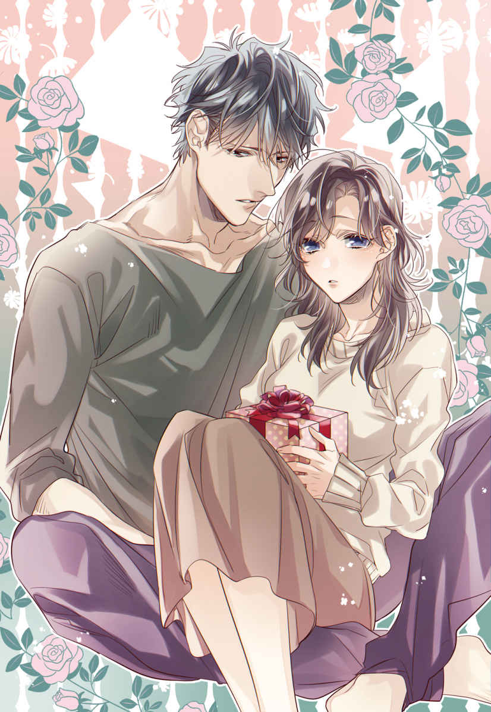
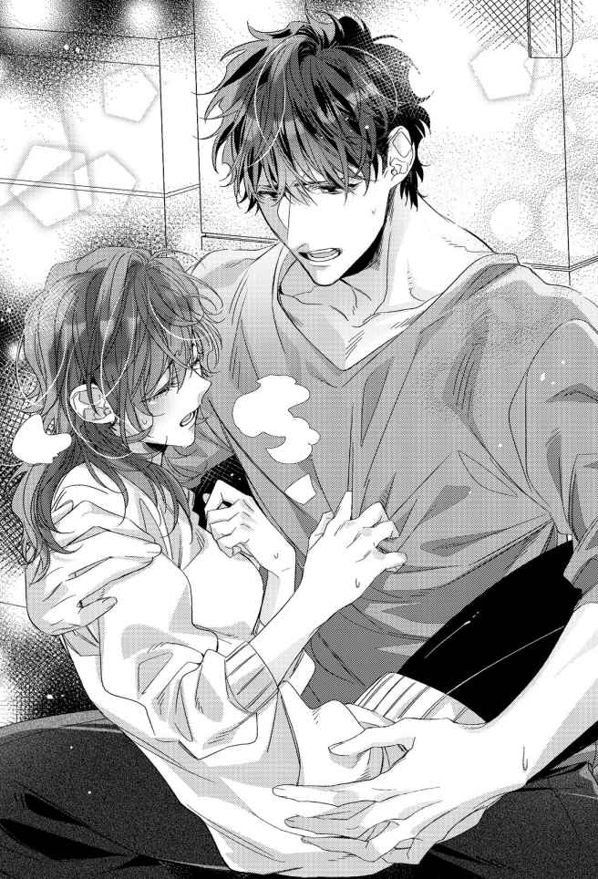
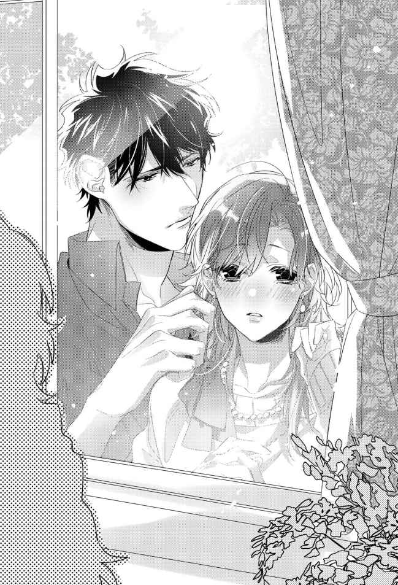
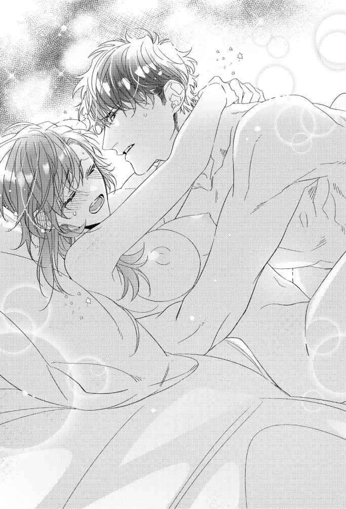
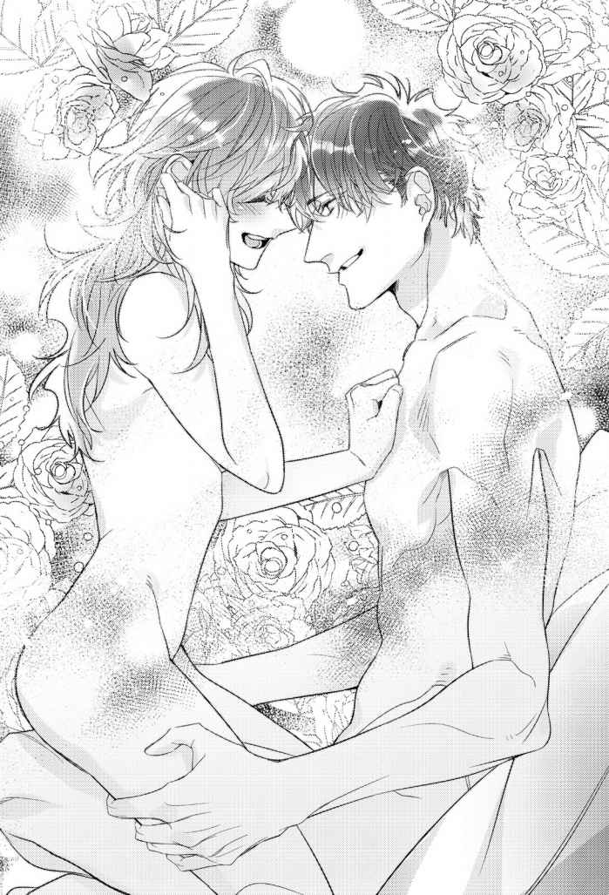

| 【全1-6セット】アフターパンドラ 義兄に捧げる秘めやかな初恋【イラスト付】 (チュールキス文庫) | |
| 夜原月見 | |
| 株式会社ジュリアンパブリッシング (2019) | |

この作品はフィクションです。
実際の人物・団体・事件などに一切関係ありません。
プロローグ
私の名前は、朝子 という。
名付けは母だ。出生時刻が朝だったから、朝子。
ゆえんは、ただそれだけだったと母本人から何度か聞いている。
二階建ての持ち家で私と二人暮らしをしている兄の名前を、十夜 という。
名付けは父だ。冬の月の、十日の深夜に産まれたからなのだと私に教えたのは、やはり母だった。
十夜は、父の愛人の子である。
つまり私と兄は、父を通じて半分血が繋がっている異母兄妹ということになるのだけれど、実は一滴たりとも血縁がない事実を知ったのは、母の死後だった。
遡 ること、十年前。
私、十九歳、大学一年生。
十夜二十三歳、会社員一年目の、とある真冬の朝に母は亡くなった。
死因、くも膜下出血。
母の職場から連絡を受け、搬送先の病院へとタクシーで急いだが、死に目には間に合わなかった。
父の顔を、私は知らない。写真の中でしか知らない。それらの写真に、私の姿はない。
母が私を身ごもっている間に、余命一ヶ月を宣告される病に冒 されてしまったからだ。
その父に生前から認知していた子がいると母が知ったのは、遺産相続手続きの過程上でのことだったそうだが、母が私にそれを教えたのは、いざ十夜と暮らす直前になってからである。
「朝子。あんたにお兄ちゃんがいる。......って言ったら、ビビりまくる？」
十五年前のことだった。
リビングの隅っこに備えられた、ゴミ箱にも見える安っぽい艶を放つ超小型の仏壇を前に、母は四つ折りに畳まれた紙片を差し出した。
「ビビるも何も。チビるんだけど」
ほとんど呆れた声音でぼやきつつ、受け取った紙片を開く。
それは十夜の戸籍 謄本 だった。父の欄には、私と同じ父親の氏名が記載されていた。
「え？ 何これ、意味わかんないんだけど。私の父親って、私が産まれる前に死んだって言ってたよね？」
「うん、病気でね」
「かなり珍しい病気だったって聞いてたけど。何をどうしたら、私に兄がいたって話になっちゃうの」
腹違いの兄の存在を母が私に秘密にしていたと知って、何となくショックだった。けれどそれ以前に、父は母に内緒で十夜を認知していたそうだから、母を恨むのは筋違いな気もする。
悪いのは父だ。父とは一度も会ったことがないが、もし目の前にいたら確実に殴っているくらい腹が立つ。
「でね、本題はここからなの」
母は神妙な面持ちで私の手から戸籍謄本を抜き取ると、はあ、と溜息を吐きながら、眉間の皺 を揉みほぐす。
「すっごい嫌な予感がするんだけど」私もつられて吐息を漏らす。
母は即答した。「冴 えてるね、朝子ちゃん！」
......アホな母だった。
何が面白いのか私にはさっぱりわからなかったけれど、母は嬉々として、
「お父さんの愛人の子の名前はね、十夜くんっていうの。で、愛人だった人が死んじゃって、十夜くんは住む場所に困ってるんだって。そこで朝子ちゃんに相談なんだけど、ここに呼んじゃっていいかな～？」
と、にっこり笑いながら、両手の指で丸を作ってみせた。丸しか求めてないんだけど、というサインだ。
今思い返せば、アホすぎる母なりに悩んだりしたことだって当然あったのだろうが、まだ十三歳で中学二年生になりたてだった私の目からは、「やっぱアホだわ」としか見えない仕草だった。
「愛人って何それ、不潔すぎるんだけど。っていうか、その子どもを引き取るって正気なの？」
私の罵詈雑言に、しかし母はめげない。
にっこりしたまま言いのけた。
「モチのロンだよ～！」と。
返すがえすも心底アホな母だった。名を、真白 という。
いっそ純白でいいのでは、と思うほど、母は死ぬまで闇を抱えない人だった。
だから私が十夜と全く血縁がない事実を知った時は、心臓が凍りつくほど驚いたものだった。
母が亡くなった直後のことである。
遺品整理をしていた私は見つけてしまったのだ。戸籍上父子と明記されていたはずの十夜と私の父との間に、生物学上の血縁関係がなかった科学的根拠を示す、ＤＮＡ鑑定書を。
鑑定日は、母が十夜を引き取ろうとしていた十五年前。依頼者には、「真白」の名が刻まれていた。
何だこれ、と私は怒りながら、「そういうわけで出て行って」とＤＮＡ鑑定書を十夜に突きつけるべきだったのかもしれない。
けれど私はそうしなかった。
私は鑑定書をびりびりに引き裂いた上で、ご丁寧に二重三重にシュレッダーをし、前夜作った鍋で出たクズ野菜に紛れ込ませ、燃えるゴミに出してしまったのだ。
――証拠隠滅完了。
私はほくそ笑んでいた。
――私は誰にも言い訳をせず、十夜に恋することを許されたのだ。
まさか十夜が、
「悪ぃ。俺知ってたわ、それ」
なんて言い出そうと想像だにせず。
第一章
私の家の冷蔵庫には、パールちゃんという名前がある。
名付けは母だ。色がパールホワイトだったから、パールちゃん。ゆえんもへったくれもない、ただそれだけの理由。まるで私の名前みたいだ。
我が家の冷蔵庫をパールちゃんに買い換えた日のことを、私は昨日のことのように鮮明に覚えている。戸籍上、半分だけ血が繋がっているという十夜と暮らし始めた一日目だったから。
＊
――いきなり高三の男子と同居とか、ありえないんですけど。
実は私に腹違いの兄がいた、という衝撃発言をしてすぐ、母は十夜を迎えに行ってしまった。私は一人残されたリビングで、仏壇と呼ぶには極小サイズな観音開きの漆黒を睨 みつけるような目をして眺めていた。
うららかな春の朝のことだ。暖かな日差しが都内全域に降り注ぐ、汗ばむくらいの陽気に満たされた一日だった。
仏壇に立てられたフォトフレームの中の父は、新しい家族を手放しで歓迎するかのように、晴れやかな微笑 みを浮かべていた。
父は難病で亡くなっている。国内だけでなく世界的にも珍しい病気だったそうで、「病名が判明した時にはもう、手の施しようがなかったのよぅ」と母から聞かされていた。
残された写真や母の話から想像するに、父は小柄な男だったようだ。
省庁勤務の幹部候補だったという父の写真は、どれも揃ってキッチリ七三分け。顔つきは平坦かつぼんやりとした印象で、優男というより気弱な雰囲気が漂っている。
そんな虫も殺さないような顔をした父に隠し子がいたと知って、会ったことすらなかったけれど、手酷く裏切られた気がしていた。その反動で、仏壇ごと蹴飛ばしてやりたい腹立たしささえ覚えたほどだった。
母が十夜の存在を知ったのは、父が病死し、私を出産する間際になってからだという。
母いわく、
「そりゃ、びっくりしたわよー。びっくり仰天ってこのことかーって、太陽が眩しくて目が潰れるかと思ったくらいだったわぁ」
だそうだが、飄々 としているように見えたので、愛人の存在くらいは気付いていたのだろう。しかし問題は、その子どもを引き取ったことにある。
「お父さんが認知してた子なら私の子も同然じゃない。その子が住む場所に困ってるって言うなら、引き取るべきよ」
とんでもないゴリ押しに開いた口が塞がらない。
どうしてそんな博愛主義者みたいなことが言えるのか、不思議でならなかった。
最近亡くなったという愛人に弱みでも握られていたのだろうか。
もしくは父の遺言でもあったのだろうか。
あるいは、愛人にし損ねた復讐を、その息子に肩代わりさせようと企 んでいたのか。
正解は、どれでもない。ただ単純に母がお人よしだったというだけの話だ。そして、父亡きあとも、母は彼を心底愛していたのである。
娘の私が言うのもなんだけど、真白という人は心底アホな人だった。本当に真実、アホを貫き通した人だったのだ。
だけど人に騙されにくい人であったことが、娘としては何より幸いなことだった。
人を騙そうとする人間は、非常に疑り深い特性がある。母は善人過ぎたから、彼らの警戒心をむしろ煽 ってしまっていたのかもしれない。でなければ、父が遺 してくれた自宅はとっくに騙し取られていたはずだ。
「ただいまぁ、朝子ちゃーん」
のんびりとした春の日差しみたいに妙に間延びした母の声が玄関から響き、私は重たい足を引きずるように、のそのそとリビングを出て十夜を出迎えた。
「はい、朝子ちゃんと十夜くん兄妹の感動のごたいめーん！」
一人で感動しておけば、と冷たくあしらおうとした私は、母の後ろで俯 く男の姿を見るや、ぎょっと目を見開いた。
十夜は、左腕と右足にギプスを巻いていた。本当は無愛想なりにかなりいい男だったのだけど、その端正な顔はタコ殴りされたみたいに酷く腫 れ上がっている。
髪はしばらくカットしていないのか、毛先が肩につくまで無造作に伸びている。都内の公立高校の制服を着ていたが、よく見ると、きっちり喉元で締めたネクタイは泥と血痕でところどころ汚れていた。
「朝子ちゃん、イケメンなお兄ちゃんができて良かったねっ！」
出たよ、母のアホ病が。私は全力で首を何度も横に振りまくる。
全くもって良くない。若いヤクザかホラー映画のモンスター役みたいな外見の新しいお兄ちゃんなんて、絶対おかしい。
ドン引き状態の私の無言の意味を悟ったのか、
「......しばらくお世話になります」
ぼそ、と十夜は小さな声で零し、言葉を詰まらせたまま直立不動でいた私に向かって深く頭を下げた。
初対面の印象が最悪でどん底だと、それより下がりようがない。どんなに些細なことでも好感度は上がってしまう。
ご多分に漏れず私も、
――......挨拶はちゃんとできる人なんだ。
と、膨らみっぱなしだった頬を萎 ませつつあった。
......そんな私は十五年後の十夜いわく、
「あんた、真白さんに似てるよ」
だそうだけど――
「っていうか、その血まみれホラーな恰好、何とかならないの。ここで暮らすつもりなら着替えくらい持ってきてるんだよね？」
所在なさげに玄関の三和土 で立ち尽くす十夜から私は目を逸らした。初対面の人に対し高飛車な物言いなんてしたくなかったけれど、愛人の子といきなり同居することが決まり、反発心をきっちり押さえ込めるほど中学二年生の私は大人になれない。
「洗い替えくらいなら、少し」
十夜はぼそっと小声で返答したが、口内の切り傷に障 ったのか、わずかに顔を歪ませた。何が原因で誰にやられて見るに耐えない身なりになったのかは知らないし、できれば知りたくもなかったが、母が連れ帰ってきてしまった事後となっては仕方ない。
「――......すぐそこがリビングだから」
「え？ よく聞こえなかった」
「だからっ。そこがリビングって言ったの！ その奥が風呂場で向かいにトイレがあるから、とりあえず着替えればって言ったのっ」
「......わかった」
十夜は一度だけ頷いた。
背の高い彼と話をしていると、無機質な大木に語りかけているかのようで、まるで手応えを感じない。俯き加減の双眸 も、死んだ魚の目のように何も映していない気がして、私は何だか怖くなって再び目を逸らしてしまった。
「さて、朝子ちゃん。お母さんと一緒に買い出しに行って来ようか」
やたら挑発的な私の態度を見かねたのか、母は仕切り直すように私の手を引いた。
「十夜くん、そういうわけだから留守番よろしくねっ。アデュー！」
「ねえ。アデューってさ、使い方が違うから。おいとまします的な意味のサヨナラな挨拶だからね」
私は靴を履き、先に玄関を出てしまった母の背を追いながら、呆気 に取られる十夜を振り返る。
「しばらくうちにいるつもりなら、このノリに慣れたほうがいいと思うよ。じゃ、そういうことだから」
「いや、ちょっ......」
いきなり留守番を任せられ、困惑する十夜を残し、私は母と家を出た。
連れ帰ったばかりの十夜を自宅に一人残してきたことに、母は不安をこれっぽっちも感じていなかった。
普通であれば、まずは盗難が懸念される場面だ。正妻とその娘に対する復讐としての破壊行動があってもおかしくない。しかし、もしそうなったとしても母のことだから「盗まれる私がいけなかったのよぅ」と笑って済ませていただろうけれど。
「十夜くんなんだけどね。ホントかわいそうな子なのよ」
母は車のエンジンを掛けるなり、それまで顔に貼り付けていた笑顔を引っぺがす。
「聞くも涙、語るも涙」
「そういう前置きはどうでもいいから」
「十夜くんはね、いわゆる虐待 児なのよ」
高三男子でも、虐待「児」と呼ぶのだろうか。いまいちピンと来ない。
「あの人、児童っていう歳じゃないじゃん。虐待されてた人だって言うなら、かわいそうだなとは思うよ。でもそれって私たちには関係ない話だったんじゃないの」
「朝子ちゃんのお父さんの遺産を受け取ってるんだから、他人の振りはできないでしょ～」
母はハンドルを捌 きながら、十夜くんがどれだけかわいそうな子であるか、説明を始めた。
十夜の母、つまり父の愛人だった女は、父の遺産を受け取るなり十夜に虐待を始めたのだそうだ。男を取っ替え引っ替えする、だらしない母親と施設との間を行き来させられる生活に嫌気が差していた十夜は、高校入学と同時に家を出たという。
「――でね。愛人さんっていう人がつい最近、病気で亡くなっちゃったのよ。反社会的な人たちから借りた、かなりの額の借金を残したままね。十夜くんの怪我は、その取り立てのとばっちり」
住宅街の細い路地を抜け、国道のある大通り方向に母がハンドルを切った。
私は窓を半分まで開く。ぽかぽか陽気で車内は暑いくらいだ。
「でも、あの人に返済の義務なんてないよね」
そよそよと前髪を揺らす春風に目を細め、私は十夜を「あの人」呼ばわりして先を促す。いきなり受け入れを迫られた異分子に対し、母のように「十夜くん」と呼ぶのに強い抵抗があった。まして「お兄ちゃん」なんて無理すぎる。
「何で返済義務がない、まだ高校生のあの人に取り立てなんかあったの。あんな大怪我までさせられて。あれって、普通に傷害事件になっちゃうんじゃないの？」
矢継ぎ早の質問に、母はしたり顔で「ふふ」と笑った。
「十夜くんったらね、これ以上の警察沙汰 は困るって言うのよ」
「は？ 何で」
「二十二時以降もバイトしてるからだって」
「ホストとか？」
「ホストやったら稼げそうよね～」
あはは、と母が笑う。第一印象の十夜は、無愛想そのものだった。きちんと挨拶ができたところでホストが勤まるとは思えない。
水商売以外の二十二時以降のバイト。警備関係だろうか。しかし年齢確認が厳しそうな職種だ。
「じゃあ、土木関係？」
思いつきで言ってみた。
「わお、当たり～」
言葉こそ楽しそうだが、母は全く笑っていなかった。
「あのギプス、見たでしょ。バイトはクビになっちゃったんだって。荒っぽい取り立ての現場になった十夜くんのアパートの大家さんも、揉め事はごめんだから今すぐ出て行けって言ってるらしいのよねぇ」
十夜は傷害事件に巻き込まれた側で間違いなかったが、取り立てた側にやり返した暴力行為を警察で認めてしまったのだ、と母は続けた。
高校入学時からサポートを続けていたという中学時代の担任は、「肉親ではないから」という理由で警察から身元引受人として認められなかったのだそうだ。「身柄が解放されるまでの間だけでいいから」と元担任に請 われる形で母に連絡が来て、「引受人が二人いるなら」と拘束を解かれた経緯だった。
愛人の子を引き取りに来た正妻を拒否しない警察もどうなの、と思うのだけど、母は地元では最も大きい大学病院の病棟看護師として独身時代から長く働いてきた職歴がある。聖職と呼ばれる職業に就いた大人が二人いるのなら、と判断されたのだろう。
そもそも、十夜の暴行容疑は不法行為に巻き込まれた正当防衛だった上に、高三になりたての未成年だ。にもかかわらず十夜は深く反省していたらしい。警察としては身柄を引き渡す口実ができ次第、すぐにでも自由にしてやりたかったのかもしれない。
あとは、とんとん拍子で母が十夜の引き取りを決めてしまったのだろう。
聞くも涙、語るも涙だ。......私が。
一言くらい相談してくれたっていいじゃないか、と思ってしまった時点で、色々私も終わっている。
そこは断固として、「愛人の子どもと暮らすなんてイヤだ！」と拒絶するべきだが、このトンデモ母と暮らして十四年目の私は、正常の基準がかなり低くなっていた。
そういう事情なら短期間の同居くらい仕方ないよね、と思い始めていたほどだった。
「よーし。お母さん、奮発しちゃうぞ～」
母が張り切って最初に向かったのは、家電量販店だった。
「食べ盛りの家族が増えるんだから、まずは冷蔵庫を買い換えないとね」
当時使っていた冷蔵庫は二ドアの小型タイプで、上段の冷凍室はしばらく前に壊れていた。そんな冷蔵庫でも二人暮らしでは困らなかったが、いずれ買い換え時期はやって来る。そう考えれば悪くないタイミングではあっただろう。......が。
――家族が増える......？
母の言葉に強烈な違和感を持ち、私は表情を硬くした。
父が認知していた十夜を、保護名目で一時的に同居させるという話は不承不承ながらも納得できた。けれど家族の一員として迎えるつもりなら話は別だ。
「あれれ、どうしちゃったの朝子ちゃん」
不機嫌な顔つきになった私に気付いた母が首を傾げた。
「......どうもしないよ」
十夜を家族として迎えることに私がいくら反対したところで、母のことだからきっと、「お父さんの子は私の子も同然でちゅー」といったふうに茶化しながらスルーするに決まっている。
私が何を言っても無駄なのだ。であれば、十夜には一日でも早く怪我を治してもらって自主的に出て行ってもらうしかない。
「おお～。この冷蔵庫も我が家の一員として、いい感じじゃない？」
母が目を付けた冷蔵庫は、当時最新型だった六ドア六〇〇Ｌ大容量のものだった。
色はパールホワイト。清潔で明るい色彩は、悔しいけれどキッチンにあったら素敵だろうなと私の物欲を掻き立てた。
「朝子ちゃんはどう思う？」
このまま即決しそうな母が私の顔を見る。日々の炊事担当を務める私が最終決定権を持つと売り場の若い男性店員は判断したらしい。「いかがでしょうか」と揉み手をしながら、あからさまな熱烈視線をこちらに送ってきた。
私は十夜の出で立ちを頭に思い浮かべてみる。
痩 せていたけれど、かなり背の高い男だった。しかも大怪我をしている。さっさと出て行ってもらうには、口を塞ぐ勢いでビシバシ栄養を摂らせないといけない。
「いいんじゃないの。あの人、いっぱい食べそうな感じだし」
この時私は、十夜が、写真の中の小柄の父に全く似通うところがないとこれっぽっちも疑っていなかった。
「はい、お買い上げ決定です～」
母の決断に、店員は待ってましたとばかりに「売却済み」の札を冷蔵庫に貼り付ける。
「毎度ありがとうございます！ ご配送はいかがいたしましょう。在庫がございますので、即日配送も可能ですが」
「じゃあ、即日で！」
「承知しましたっ」
......そんなわけで、我が家に大型冷蔵庫がやってきた。
母は新しい冷蔵庫をとても気に入ったらしい。「パールちゃん」と勝手に名前を付けるほどだったが、結局その名を呼んでいたのは母一人だけだった。
「ではでは。十夜くんの新しい門出を祝って。いただきまーす！」
同居初日の夕食は、なぜか蕎麦 。
珍しく母が作った食事だったが、「なんで蕎麦？」と私は内心で首を傾げていた。
引越し蕎麦ならわかるけれど、新しい家族を迎えるのにも蕎麦でいいのだろうか？
まあそこは、利き腕でない左腕であっても大怪我をした十夜に配慮した母なりの考えがあってのことだろう。......と思いたいが、単純に母が蕎麦が食べたかったからというのが真相だったように私は思っている。
「......いただきます」
十夜は箸を手にし、蕎麦を啜り始めた。
十夜は初対面の瞬間から、ごく控えめに言って、かなり無愛想な男だった。
まず、表情がない。そして感情の起伏が声に表れない。長身のせいもあるだろうが、それを差し引いても、相手の目を見ないようにして話をする癖もある。
今でこそ家庭環境のせいでコミュ障っぽくなったんだろうなと割り切れるが、母いわく「十夜くんの新しい門出」だったその日の私にとっては、あくまで母が連れてきた他人でしかなかった。
そんな異分子十夜に対して私の感情が動いたのは、彼のどんぶりから蕎麦が半分ほど消えた頃だった。
「十夜くん、おいしい？」
母が訊く。
はい、とどんぶりと向き合うように顔を俯けたまま、十夜は頷いた。
「うまいです。あったかいし」
「そっかそっか、それなら良かったよ。怪我のほうは痛くない？」
「はい」
小さく首を縦に振る十夜のぼそぼそ声は俯いたまま発せられたので、まるで彼が蕎麦と会話しているかのような奇妙な光景だったのだけれど、
「――――......すみません。やっぱり痛いです」
何かを一生懸命我慢しているが如く、喉の奥から絞り出すような声で発言を訂正した。その十夜の少しぬるくなっただろうどんぶりに向け、ぽた、と無色透明の雫 が何滴か落ちたのを見た瞬間、頑なに拒否しようとしていた十夜の存在が私の中で濃くなった気がした。
「そっかそっか。大怪我だもん、そりゃ痛くて当然だよね。とにかく食べないと治るものも治らないからね。この真白さんが料理するなんて年に一度あるかないかのミラクルだから。おいしいはずだよ～」
ただ乾麺を湯がいただけの蕎麦を自画自賛する母は、その雫を見なかったことにした。だから私もとりあえず、十夜が零した涙に見なかった振りを決め込んだ。
どこか寂しそうな顔をして本音を吐露 した十夜に、産まれる前から父がいなかった、母一人子一人な生活をしてきた私には、「正妻の子と愛人の子が同居するなんて、おかしい」という世の中の常識を押し付けるような真似はもうできなかった。
それでも私は意地を捨てられない。口の中の切り傷に蕎麦がしみたから十夜は泣いてしまったのだろう。......きっとそう、絶対にそうだ。
泣いたくらいでほだされてたまるか。私は頑なにそう思い込もうとしていた。
それが、私と十夜、正妻の子と愛人の子の奇妙な同居生活初日にあった出来事だった。
＊
十夜は、今も昔も最初から、無愛想な男だった。そして同時に不器用な人でもあった。
表面上の彼の長所は、片手の指を何本か折るだけで数え終えてしまう。
そんな数少ない十夜の表面上の長所の一つが、意外に常識人であることだった。
常識といっても、些細なことばかりだ。
例えば挨拶ができるとか、ありがとうの感謝の言葉を、ぼそぼそっとした小声だけれど口にするのを忘れないとか。ゴミをちゃんと分別して処分できるのも高ポイントだった。
町内会の役割分担もやってくれていた。
母や私と異なる名字を持つ十夜は、母の親戚の子として我が家で暮らしていた。私たち母子は近所付き合いを上手くやっていたからか、ご近所さんたちは十夜の存在を不審がることなく、すんなりと受け入れていた。
ちなみに私も、常識をこよなく愛する善良な一般市民のつもりだが、父親がいない子どもはこれだから、と母がバカにされることだけは、今も昔も最初からどうしても我慢できなかった。母をアホとこき下ろしていいのは、母を最もよく知っている私だけだ。知りもしない、知ろうともしない人にバカにされることだけは、ものすごく嫌だったのだ。
十夜と暮らすようになって十五年が経つ。その間、十夜が自身の実母の悪口を言うのを、私は一度たりとも見聞きしたことがない。
実母の短所を部分的に口にすることはあっても、存在そのものを否定するような言葉は使おうとしなかった。
十夜は実母を嫌いになれなかったのだ、私と同じで。加えて、根っからの常識人ときた。
そんな十夜が私の中で好感度を高くする一方だったのは必然だっただろう。
「先生って人から食費もらってるから、チマチマご飯食べなくていいよ」
テーブルの上で空にされた十夜のご飯茶碗をひったくるように奪い、お代わりをよそって手渡したのは、十夜と同居した翌週のことだった。
ほぼ腫れが引いた十夜の顔はイケメンそのもので、驚くほど端正な造りをしていたが、唇の端はまだ切れていて痛々しさを残している。「十夜くんの傷の治りのほう、ちょっと遅いみたいだね」と心配していた母同様、日々の炊事を担う私も気になり始めていた。
「でもその金は、俺が稼いだものじゃない」
ほかほかと湯気を立てるご飯茶碗を十夜はテーブルに置いた。例に違 わずぼそぼそっとした小声だが、頑なに拒もうとする意思を感じ取り、つい私は溜息を吐 いてしまう。
もしお代わりを勧められた十夜が、「いや俺、腹いっぱいだから」とでも言って断るなら「そっか。見かけによらず小食なんだね」で済ませるつもりだった。
母の部屋の本棚にあった食事栄養管理教本のカロリーブックを手に、十夜の年齢区分における充分な摂取量を計算して食事を作っていたけれど、それは私が好きでしたことだから構わない。しかし十夜が食欲をセーブしていたなら話は別だ。
「何が言いたいかはわかるよ。だけど傷の治りが遅かったら、私の母が先生に疑われることになるかもしれないよね。ご飯をまともに食べさせてくれない酷い女だ、って母親を詰 られるかもしれない私の身にもなってくれない？ 私の作るご飯が口に合わないなら申し訳ないなとは思うけど」
母にかこつけてしまったけれど、本心からの言葉だった。愛人の子ではある十夜だけれど、うちで引き取った以上、母には責任と義務が課せられている。昭和のメロドラマよろしく、正妻とその娘にいじめられて満足に食べられない愛人の子を気取るのは本気でやめて欲しい。十夜の遠慮は私にとっては母をバカにするのと同義でしかない。
「先生とか色んな人に心配掛けないようにご飯も我慢してるんだろうけど、逆効果だと思うよ。御託 でお腹はいっぱいになんかならないんだからね」
啖呵 を切った私に、十夜は根負けしたらしい。
切れ長の双眸でしばらく呆然と私を眺めていたけれど、ややあってご飯茶碗を手に取った。
「真白さんが悪く言われるのは本意じゃない。俺が悪かった」
「え......。いや別に、悪いとまで言ってないんだけど......」
武装を解いて白旗を上げた兵士みたいに急に素直になった十夜にうろたえると、くす、と微笑が返された。
「ついでだから言うっていうわけじゃないけど、あんたが作るメシはすごく美味い」
掛け値なしの誉め言葉に、私の顔はみるみる熱くなる。
「べ、別にそっちのために作ったご飯じゃないんだから。私が作るご飯はいつもこんなだから」
「ああ。だから、いつも美味いって言ったつもりだった」
十夜はさらりと繰り返してから、ようやくご飯に箸をつけた。
その後も私は、ほだされてたまるかと頑なな気持ちを維持しようと努力したのだけれど、徐々に軟化するのにそれほど多くの時間は掛からなかった。
「またあいつ、自分のだけしっかり洗濯してるし」
浴室に置かれた洗濯籠の中身を分別しながら額に手を当てたのは、十夜との同居生活、半月目のことである。
洗濯籠の中に十夜の下着がないのが気になっていた。洗濯物については同居翌日目に「下着も含めて、ここに放り込んでおいて」と説明している。
十夜はまだ片腕にギプスを巻いている。助けなしで入浴するのが精一杯のはずだが、下着の洗濯は入浴時に済ませていたようだ。
怪我の治りが遅くなったらどうするのだろう。痛みだってあるはずなのに。
――常識人なんだよなあ、あの人。
人は見かけによらない、とはよく言ったものだ。無口で不愛想な十夜は顔立ちこそ正統派のイケメンだが、その長身は威圧感を与えやすい。ぶっちゃけ全く家事をしなさそうな男性にも見えるのだけれど、実は真逆だと、同居半月にもなれば嫌でも気付かされる。
「下着くらい、私が洗濯するよ」
その夜、バスルームに向かおうとしていた十夜を廊下で呼び止めた。
「洗濯？」
十夜は屋内では松葉杖を使わない。壁に体を軽く寄り掛からせるようにして、十夜が後方の私を振り返った。
「そう、洗濯。下着だけ自分でやってたでしょ？」
「あー......。いや、でもそれはさすがに」
「私は別に気にしないから、下着も普通に出してもらってもいいよ。私が男物の下着を頭にかぶって喜ぶような痴女 だと思ってるわけじゃないんでしょ」
途端に、十夜が噴き出した。
「ち......痴女って、あんたが？」
「そうよ。じゃなくて、違うから。私、痴女じゃないし」
私は軽く咳 払いをして気を取り直す。
「とにかく、下着くらい私が洗濯するって言ったの。逆は絶対イヤだけど。片手しか使えないんだしさ」
特にルールを決めたわけではなかったけれど、十夜は私の私物に断りなく触れない。リビングに併設されたベランダのサンルームに私や母の下着類が干されていても、目をそちらにやろうとしない律義な性格をしていた。
入浴も私と母が使い終えてから、と徹底している。しかも上がる時に掃除まで済ませておいてくれるのだから、家事全般をこなしている私としては十夜の存在をありがたいと思いこそすれ、邪険に扱う理由なんて一つもない。
「......もっと甘えてもらっていいよ」
そう言った私の顔は多分真っ赤になっていた。
顔が熱かった。はたから見たら滑稽 そのものの光景だっただろう。正妻の子が愛人の子にほだされるなんて。
「え......？ 今、なんて？」
私の小声は十夜まで届かなかったらしい。訊き返され、私は怒鳴るような大声で言った。
「もう！ 私、痴女でいいよっ。自分のパンツかぶってあげるから、洗濯籠に入れておいて！ 明日の朝洗濯する時出てなかったら、そのギプスした足を蹴るからねっ」
「いや。それは痛いから、わりと本気でやめて欲しい」
「じゃあ決まり。今日から洗濯禁止だからね」
言い終えるや否や、呆気に取られて立ち竦 む十夜を放置し、私は廊下脇の階段を駆け上って自室に引っ込んだ。
――何で私、顔が赤くなっちゃうかな。
ベッドにダイブし、枕に顔を埋めた。
何でどうして。考えてみるけれど答えは出ない。
突然現れた「お兄ちゃん」の存在を認めたがらない、頑固な気持ちはだいぶほぐれている。
なのに、どうして顔が熱くなってしまったのだろう。十夜によって引き出される自分の反応がとても不思議で、同時に恥ずかしかった。
そして、翌朝。
喧嘩腰の謎の洗濯禁止令に従ってくれた十夜の洗濯物を干しながら、私はほっと息を吐いていたのだけれど――
「......テレビくらい普通に見ればいいじゃん。観たい時間が被ったら、ジャンケンして負けたほうは録画にすればいいんだし」
とチャンネル選択権を譲ったのが、同居一ケ月目。
「あ、ごめん！ 今日学校の帰りに、洗剤買ってきておいてくれない？ 私、委員会でちょっと遅くなっちゃう予定なの。お財布は棚の奥にあるから」
と家計費のありかを教えたのは、十夜の左腕に不自由を強いていたギプスが取れ、リハビリも終えようとする三ヶ月目のことである。
「......あんた、意外と人をこき使うよな」
聞こえるかどうかの小声で、ぼそっと文句が返された。
十夜と風呂を交代する廊下での出来事だ。母は夜勤でいなかった。
「意外って何よ。っていうか私の名前は、あんた、じゃないんだけど」
「あんただって俺のこと、ねぇ、とか。あのさぁ、っていう名前で呼んでるだろ」
十夜は半ば呆れたように肩を揺らしながら、着替えを手に持ち直す。
もう十夜は壁に寄り掛かったりしなかった。母の話によれば近いうちに足のギプスも取れるだろうとのことだ。
「足、順調みたいで良かったね」
「......ああ。そうだな」
何気ない私の言葉に、十夜の顔がかすかに曇った気がした。
――......？
十夜の思案顔に、胸がざわつく感覚があった。
どうして十夜はあんな顔をしたんだろう？ 私は布団に潜ったあとも考え続けたが、結論を出せないまま朝を迎えてしまった。
気まずそうな顔だった。嫌いな食べ物をどうにかして飲み下そうとしているかのような、無理をしている表情に見えた。その理由を知ったのは、それから数日後のこと。
「もう充分、世話になりましたから」
だからこの家を出ます。そう十夜が切り出したのは、彼の右足を固定していたギプスが取れた日の夕食中だった。
十夜は風呂なしトイレ共同アパートで一人暮らしをしていたが、大怪我を負った騒動で大家との関係が悪くなっていたはずだ。土木関係のバイトも解雇されたきりで、収入の目途 だって立っていないだろう。
今出てったところで、生活は立ちゆかないはずだ。
まだ固定用の包帯が巻かれた十夜の足へ、テーブル越しに私はちらりと視線を落とす。
十夜の足の骨折は、ボルトを入れる手術を伴うものだった。リハビリだってこれからようやくというところなのに、元の生活に戻るなんて無茶だ。
しかし、いつか十夜はこの家から出て行ってしまう。遅かれ早かれの問題でしかない。
十夜の申し出は至極まっとうなものだろう。常識人であれば尚のこと、多少無茶をしてでも出て行くと切り出すには、これ以上のタイミングはなかったかもしれない。それでも私は、胸の奥を乾いた風が吹き抜けていくかのような寂しさを覚えてしまう。
けれど、十夜が健全な生活に戻れるかどうかは別の話だ。中二の私でさえ「この状態で一人暮らしに戻るとか、まだ全然無理でしょ」と不安になってしまう状況だ。私の隣で味噌汁茶碗を持つ母が引き留めないはずがない。
「保証人の先生から当面の生活費をもらってるから、思う存分居候しちゃっていいのよー」
母は笑顔でそう言ったが、たとえ生活費が枯渇したとしても、無責任に十夜を放り出すような鬼ではない。
たった三ケ月の同居歴でも、それは十夜とて理解していたはずだ。にもかかわらず「いや......」とか「でも......」とか「それは......」と、歯切れの悪い言葉を繰り返す。
母の隣に座し、十夜を真向かいにした食卓に着く私の脳裏に、数日前目にした十夜の曇った表情が不意によぎった。
どうして十夜は、はっきりきっぱり「出て行きます」と言わないのか。
――十夜はここを出て行きたくないんだ。
私はそう直感する。
洗濯物や食事の支度を自分でしなくてもいいからラク、なんて単純な理由なんかじゃない。もっと別の場所に理由があったはずだ。
十夜が我が家で暮らすようになり、自分以外の体温の存在が無条件の安心感をもたらすものだと初めて知った私である。蕎麦を食べて泣いた十夜にとってそれがどれほど大きなものであったか、想像に難くない。
「勤務時間が不規則な私としては、十夜くんがいてくれて助かってるんだから。ね？」
「いや、でも......」
説得を試みる母と、煮え切らない十夜のやりとりをＢＧＭに、私は素知らぬ顔でご飯を食べ続けた。
まだ怪我人そのものの十夜を引き留める、善人すぎる母の気持ちはわかる。だけど、正妻の家に居座る理由を探せない、常識人な十夜の遠慮もひしひしと伝わってくる。
――揉めそうだな。
私が口出しできる領分の話ではない。母が十夜をなだめすかすしか方法はなさそうだが、このままでは堂々巡りだ。
そんなことを考えながら、茶碗に残る白米をつついていた時だった。
「十夜くん。大人の言うことはちゃんと聞きなさい！」
ぴしゃりとした怒鳴り声が食卓を振動させた。
私はぎょっと目を丸くして、箸をぽろりと手から滑り落とす。
怒鳴ったのは、もちろん母だ。叱られた十夜も、酷く驚いたようで表情を固まらせていた。
――うわ......どうしよう。
私は動揺していた。母がかつてないほど大人らしく、かっこよかったからだ。
きっと母は小手先のやり方で――なだめすかすか、強引に丸め込むか、にやにや笑いながら誤魔化 すかして十夜の説得を続けるのだろうと思い込んでいた。
いわゆる、ギャップ萌えに近い感動があった。びしっと怒るなんて思わなかったぶん、母が輝いて見えてしまったのだ。
アホな母、真白の株がストップ高な勢いで急上昇した希有 な場面だった。
いつもヘラヘラしているアホな母が声を荒げたのは、それ一度きり。最初で最後のこととなるわけだけれど、知っていると思い込んでいたモノの形が本質から異なっていたと気付かされるような毅然 とした母の姿に、十夜も考えるところがあったのか、面と向かって「出て行く」と二度と口にしなかった。
＊
十夜と同居してちょうど半年が経過した、とある初秋の日の出来事だ。
――あ。今日は松茸が安いみたい。
学校帰りに寄った近所のスーパーで、私は迷わず松茸をゲットした。国産の大きめサイズがお手頃価格で手に入れられるなんてラッキーだ。
松茸は新鮮なものなら焼いて食べるのがベストレシピだと思うけれど、三人分の確保には値が張ってしまう。となると、松茸ご飯や土瓶蒸しが次の候補になるのだけれど......。
――天ぷらも美味しそう。
十夜の好物の一つは天ぷらだ。十夜自らそう宣言したわけではないけれど、甘めに仕上げた天つゆに浸して食べるのが彼の好みだと、同居半年間の早い段階で私は見抜いている。
「ただいま」
十夜が帰宅してきたのは、揚げ油の準備をしていた時だった。
「おかえりなさい。今日は天ぷらだよ」
揚げ油で満たした鍋をコンロに置いて点火する。私の肩越しに、十夜がひょいと手元を覗き込んできた。
「松茸と、余りもの野菜でかき揚げを作る予定」
「豪勢だな」
「農家直売品で安かったの。もう少ししたらフキノトウも直売で出回り始めると思うよ」
「フキノトウ？」
「知らない？ 道端にも生えてる野草らしいけど」
「名前は知ってるけど、食ったことはない」
「春の芽吹きって呼ばれる縁起物なんだって。旬は年明けくらいからかな」
私は菜箸を手に、あらかじめボウルに入れていた小麦粉に卵を割り入れ、ざっくりと水で溶いてしまう。小麦粉にベーキングパウダーを少しだけ混ぜておくのが我が家流。天ぷら専用粉と遜色 のない、冷めても美味しいカラッとした仕上がりが期待できる。
「あんた、そういうマメ知識的なのに強いよな」
「料理は学校の図書館の本で覚えたから、そのせいかも。雑学みたいなのが色々載ってて、結構面白かったよ」
なるほど、と感心したように十夜は頷き、シンクの洗い物に取り掛かった。
制服の詰襟を脱ぎ、白シャツの袖をまくり上げた十夜の腕は、私と太さが全然違う。手際よく皿を洗っていくスポンジを持つ指も長く、男性らしく節ばっている。
私は少しの間、十夜の皿洗いを横目に眺めてから、視線を手元に戻す。
この人は私の兄だ。本来であれば「お兄ちゃん」と呼ぶべき男性だ。そんな自戒を課しながら。
私との体の相違に鼓動が速くなってしまうが、この感情は間違っている。
十夜と私は異母兄妹だ。私はそれを承知の上で、十夜と同じ屋根の下で暮らし始めていた。まるで恋をしているように胸をときめかせるだなんて、絶対いけない。
「そう言えばね」
どうにもならない気持ちに蓋をするように、私は話題を変えた。
「お母さんから伝言。進路相談の日は有休取っておくね、だって」
ざあ、と蛇口から出された水流に泡だらけの皿をかざそうとしていた十夜の手が、ぴたりと止まった。
どうしたのだろう。気になって、横目でちらっと十夜を盗み見る。
――......あの顔だ。
私の視線の先にあったのは、半年前に見たのとそっくり同じ曇り顔。
整った十夜の顔立ちは、舐めるように磨き上げた芸術品のように美しい。なのに曇った顔をする十夜の表情には、たった一つだけ指紋を拭き損ねたかのようなもどかしさが垣間見える。
――また揉めるのかな。
半年前、食卓で繰り広げられた出来事を思い出し、自然と視線が下がってしまった。
案の定というべきか。
その日の夕食のテーブルで、十夜は「あー......」とか「えっと......」だの「その、あの」と、何か言いたそうにしては決定的な言葉を口に出さないモダモダを始めてしまった。
「どうしたのかなー、十夜くん。おっと、松茸ちゃんラスイチ、真白ちゃんが頂いたっ！」
大皿に残されていた最後の天ぷらに、母の箸が勢いよく突き立てられた。
行儀の悪い母の向こう側では、点けっ放しだったテレビが今日一日のニュースを伝えていた。テレビ画面に映された女性ニュースキャスターは、よく躾 けられた小型犬みたいな優しい面立ちをしている。その口から語られるのが、隣町で起きた強姦魔 逮捕に関するニュースでなければ、ほのぼのとした天気予報コーナーと見間違えてしまいそうだ。
『......容疑者はＡ区を中心に、小学生を含む女性、合わせて七名に性的暴行を加えた容疑で逮捕されました』
「怖いねぇ。Ａ区って、お隣じゃないの」
母が箸を止めたテレビ画面では、パトカーに乗り込もうとする容疑者に向け、闇夜を切り裂く落雷に似たフラッシュが一斉に焚 かれる映像に切り替わったところだった。
「あ」
私はテレビに目をやったまま、思い切り顔を歪めた。
「この男、強姦魔だったんだ。この間、うちに押し込もうとした奴だよ。サイテーだね、もげればいいのに」
一ヶ月ほど前に遡る。
母は夜勤で不在。変則二交代制なので、帰宅は早くて昼近くになる予定。そして十夜は二十二時までバイトで、私一人で過ごしていた夜のことだった。
やはり家族全員の帰宅が遅い、大人ばかりが住まう隣家に回覧板を届け終え、自宅に戻ろうと玄関ドアをくぐりかけた時だ。
ドアを開こうとしていた私の背を力ずくで押し込むようにして、玄関へとなだれ込もうとする男の影に気付き、私は振り返った。
目深に帽子を被っていたが、顔ははっきりと見えた。腫れぼったい目元が少し特徴的な男だった。テレビに映された強姦魔と同一人物で間違いない。
「うちには盗られて困るような物は何もないし、兄もすぐ帰ってきますけど。って言ったらダッシュで逃げられちゃったんだけど、こいつで間違いないよ。うわー、強姦魔だったんだ。危ないところだった」
私は顔をしかめたまま、白米を口に放り込む。
「......あんた、何でその時すぐに言わなかったんだ」
十夜は心なしか青ざめた顔で、もぐもぐ口を動かす私に問いただす。
母は天ぷらをかじったままの姿勢でぴくりとも動かず、私から視線を外さない。
「え？ 何でって。何も被害とかなかったし、言っても仕方ないと思ったから黙ってたんだけど」
そう私が言った途端、ぽろり、と十夜の手から箸が滑り落ち、母が口に咥 えていた天ぷらがテーブルに落下した。
その夜の深夜零時過ぎ。
水でも飲んでこようかな。と、私は布団を抜け出した。
喉が渇いたというのは口実だ。階下から人の気配が消えないのが気になった私は、抜き足差し足な忍者さながらに足音を消し去り、壁伝いにリビングまでにじり寄った。
「......基本的に、しっかりした子なんだけどね」
引き戸式のドアが半分開かれたリビングの隙間から、明かりとともに、はぁ、と母の吐息が漏れていた。
「朝子ちゃんは私譲りで、結構抜けてるっていうか」
「抜けてるわけじゃないと思います」
困り果てたようにしきりに溜息を吐く母に続き、十夜の低い声音が静まり返った廊下の暗闇を小さく揺らす。
「しっかりした子だと思います。でも、自分に無関心過ぎるところがある気はしてます」
思います、とか、気はしてます、といった暫定的な語尾は一応私の立場を慮 ってのことだろう。
「そう。そうなのよね～。朝子ちゃんって、びっくりするほど自分に関心がない子なのよ」
それ、善人すぎる母が言っちゃうんだ。私のほうこそ溜息を吐いてしまいたいところだが、その通りかも、とも自分のことながら他人事のように思ったりもする。
自分自身に無関心と言うと語弊があるが、いわゆる事なかれ主義が私のモットーだったのだろう。
先月玄関で見知らぬ男に襲われそうになった私は、結果的に未遂であったとしても、母や十夜に相談し、警察を呼ぶべきだった。
しかし張本人である私は、事の重大性を理解していなかった。大ごとになったら嫌だなとか面倒だなと考えているうちに、すっかり忘れてしまっていた自分が今更ながら怖くなってくる。
「私が朝子ちゃんをそうさせちゃったのよね」
はあ、と今日何度目になるかわからない母の溜息が落とされる。そして十夜が「あー......」と何か言いかけて結局何も言わない、いつもの沈黙が続いた。
「――......こんなお願いしちゃいけないって重々承知してるんだけどね」
母の声が改まる。
「朝子ちゃんのために、もう少しだけこの家に住んでくれないかな。先生や十夜くんから渡されてきた生活費はいずれ全部返すつもりで取ってあったんだけどね、これからも食費家賃何も要らないから。だからどうか、この通りっ」
ぱん、と掌 を勢いよく合わせた音に、廊下の空気がピンと張り詰める。どうやら母は十夜を拝み倒す作戦に入ったらしい。
そして再び、しばしの沈黙が横たわった。
――十夜はどうするんだろう。
どきどきと、心臓が早鐘を打っていた。
無愛想な十夜は、何を考えているかよくわからない男だが、世話になった母たっての頼みを「俺には関係ないんで」とすげなく断るような人でなしではない。
けれど十夜にも、彼自身の手で築き上げてきた生活というものがある。怪我が完治してしばらく経つ十夜を引き留める口実を持たない私と母は、彼が「出て行きます」と言ったが最後、大人しく引き下がることしかできないのだ。
――出て行ったら嫌かも。
耳に痛いほどの沈黙が続く廊下で、私はうな垂れた。
どうして嫌なのか中学生にもなればわかっていたけれど、胸の奥深くに秘められた、柔らかで繊細な場所に芽吹き始めていた気持ちは絶対口に出してはいけない種類のものであると、私は正確に理解していた。
もし来年の秋というのが私と十夜にあるなら、また松茸の天ぷらを食べてもらいたいと思っていたのに。
十夜の返答が聞こえてきたのは、そんなことを考えていた時だった。
「――わかりました。この家から大学に通うことになるんですけど、バイトを続けて生活費は入れるんで、それで構いませんか」
「あああっ、ありがとうありがとうっ。本当に申し訳ないっ。でも、生活費は本当に要らないから！」
「いや、それ本当に困ります。俺こそお願いしますんで、生活費くらい入れさせてください」
母のオーバーな感激に、冷静な十夜の声がかぶさった。
話の詳細を詰めるためなのか二人の会話は続けられたが、私はそれを聞くことなく、来た時と同じ忍者的ハイスピードすり足で自室に戻った。
どっと、全身から汗が噴き出していた。なのに一方では、
――そっか。十夜、出て行かないんだ。
と嬉しさで胸がいっぱいになり、まるで雲の上を歩いているかのように浮足立ってさえいたのだから単純だ。
そんな私は母いわく、彼女に似て抜けているところがあるのだそうだ。
自分が抜けているかどうかについて、私自身では判断し辛い。けれど確実に言えるのは、きっと私は、失う経験が欠落していたということだ。
自分自身に無関心すぎたせいか、悲しいという感情をよく理解できないまま、母を亡くしてしまった。
半年間の同居生活を通じて、十夜に対する好意が私の内部に育ち始めている実感は持っていた。
ただの家族的好意だと思っていた。――思おうとしていた。
それが恋愛感情だと私の中ではっきり顕在化し、誤魔化せなくなったのは、母が軽い脳 梗塞 で倒れた時のことだった。
私は高校三年生で、十夜が就職活動中だった頃の出来事だ。
第二章
十年前の真冬のある日のことである。
「あ」
私は小さく声を上げた。
斎場の家族控室は、ほどよく暖房が利いている。穏やかな春に似た暖かさに慣れてしまうと、同じ敷地内で母の亡骸 が炎に包まれている真っ最中であることが嘘のように思えてくる。
「......どうした？」
私と二人きりの六畳和室で、木目のローテーブルを挟んだ真向かいに座す十夜が顔を上げた。
「夕ご飯にしようと思ってた冷ややっこ、冷蔵庫に入れっぱなしだったこと思い出しちゃった。肉じゃが用に下ごしらえした野菜もそのままだった」
「まだ食えるなら、味噌汁にでも使い回せば」
いきなり声を上げたわりに、たわいない内容で安心したのだろう。十夜は苦笑しながら、真新しい漆黒のネクタイの結び目に指を入れて緩めた。
大人の男性らしい仕草にドキッと胸が鼓動を立てるが、私はその音を誤魔化すように、十夜のネクタイと同じ色をしたワンピースの裾を意味もなく引っ張った。いつどこで引っ掛けてしまったのか、黒のストッキングは踵 からふくらはぎにかけて細く長く伝線していた。
喪主を務める私は、本来なら和装のほうがいいのだろう。けれどまだ大学一年生の未成年である私は、和装で葬儀を出すには若過ぎる。葬儀社と相談した結果、市販のツーピースを着ることにしたのだった。
「味噌汁かぁ。悪くないけど、もう水抜けまくってるから、焼き豆腐にしてもおいしそうだね」
「この間、味噌塗った豆腐作っただろ。あれ、うまかった」
「砂糖とみりんを混ぜた味噌？」
「あー......。よくわかんねぇけど、それかも」
炎の中で、今頃母はどんな姿になっているのだろう。アホな母のことだから、「最近すっごい寒かったからね、真冬に熱いのも悪くないね！」とケラケラ笑っていたとしても「母らしいなぁ」と、私はあまり驚かない。何しろ母の死が急すぎて、実感が湧いてこないのだ。
「メインのおかずはどうしよう。何か食べたいのとかあった？」
十夜は遠くを見るように、切れ長の双眸を細めた。
考え事をする時の十夜の癖だ。案外十夜も、母が亡くなった実感を持てずにいたのかもしれない。
「いや、特にない。何でもいいけど」
「そういう返事が一番困るんだけどね」
母を形作っていた純白色の芯を拾うための儀式が粛々 と進められる中、私たちは熟年夫婦みたいな会話をしていた。
十夜も、「真白さんが死んだのに、変な会話だ」と、さぞ訝 ったことだろう。
――冷ややっこ作ろうとしてたんだよな、私。
母が亡くなった日の朝を私は思い浮かべてみる。
水切り用に濡らしたキッチンペーパーで豆腐を包み、乾燥予防のラップをした上で冷蔵庫に入れてから、
「行ってきまーす！」
と、遅番の母に向け玄関から声を掛けると、
「行ってらっしゃーい。私も出勤だよ。パールちゃん、行ってきます。ぶちゅ～」
キッチンのほうから、のんびりとした母の声が返ってきた。
それが、私たち母子の最後の会話となった。冷蔵庫にキスをする母の奇行はいかがなものかと思うが、それを除けば、普通の家庭にありがちな何の変哲もない朝の風景だったはずだ。
＊
「あ、あの......っ。病室を伺いたいんですけど......！」
はあはあと息を切らし、総合受付と書かれた病院のカウンターへと私は駆け込んだ。
高校三年生の春の出来事だった。
「お母さんが倒れたって病院から連絡が来たぞ！」
血相を変えた担任にそう告げられたのは、お弁当組の女子らで昼食を囲んでいた昼休み中のことである。
「た、倒れた......？」
「詳しいことはわからんが、今すぐ来て欲しいって言ってる」
担任の話によると、勤務先の大学病院で母は倒れたのだそうだ。......意識不明の重体で。
私はクラスメイトへの挨拶もそこそこに荷物を素早くまとめ、担任からタクシー代を借りて病院へと急いだ。
――十夜に連絡しないと。
タクシーの後部座席から携帯で、大学にいるだろう十夜に連絡を入れてみたが、講義中なのか繋がらない。電話を諦め、『母が勤務先の大学病院で倒れたから向かってます』とメールしておいた。
他に連絡すべき親族はいない。五親等くらい遡れば血縁者がいるそうだが、ともに一人っ子だった父母の両親――-私の祖父母にあたる人らは既に全員亡くなっていた。
――もしお母さんに何かあったら、私、どうなるんだろう......？
想像してみる。が、もしもの状況がうまく思い浮かべられない。母はずっと健康で、おちゃらけたままで、私にウザがられてばかりの存在でいてくれると無条件で信じていたせいだった。
――ひょっとして私、一人になっちゃう......？
私には頼るべき親族がいない。異母兄の十夜は、頼れない――頼ってはならない存在だ。
私は自分自身を、二交代制で忙しく働く母を支えている側だと思っていた。けれど本当はそうではなかったことにようやく気付かされる。私は母に依存して生活を成り立たせていたのだ。
一人で生活する自分が上手く想像できない。どうしよう、どうしよう。半ばパニックを起こしかけていた。
......なのに。
「いやもう、参っちゃったね～。こんなちっちゃい梗塞が沢山できちゃってるんだって」
母は勤務先にある脳内科病棟の個室ベッドで横になったまま、人差し指と親指で作った輪を一ミリだけ開き、ちっちゃい梗塞とやらを私に示した。
「ちっちゃい梗塞って軽く言ってくれるけどさ。脳梗塞って、そんなに簡単な病気なの？」
母の既往歴は、ゼロ。勤務先で毎年予防接種を受けるためか、インフルエンザにすら罹 ったことがない。
「うーん」
ズバリな質問に、母が少し考える気配があった。
「まあ、この通り。重体って言われた状態が一時間で要観察に変わるくらいには、よくある病気かもしれないね」
そう答えた母は、お馴染みのヘラヘラとした笑いを顔に浮かべた。
「その代わり、退院までは十日くらいかかりそうなんだって。参っちゃうよね。労災使えたらいいのにな～」
とりあえず冗談を言う元気はあるようだ。少なくとも、意識不明の重体ではない。
「ホント参るよ、私も。お医者さんの言うこと聞いて、ちゃんと休みなよ」
「ガッテン了解だ！」
「はいはい」
背に大きな岩がのしかかったみたいな疲労感に見舞われながら、私は病室を出た。
「母がお世話になります」
ナースステーションで声を掛けると、制服姿の女性医療事務が入院の手引きと書かれた冊子を差し出した。
「取り急ぎ、替えの下着類があれば十分だよ。お母さんの勤務先はここだから保険証は退院後でも構わないし、保証人関係の書類も要らないから」
持ち込みが必要な衣類や生活用品、各種書類について順に説明を聞いてから、私は売店に足を運んだ。
こうして病棟フロアまで出向いたのは、母の忘れ物を届けた小学校の頃が最後だ。フロアの隅に剥き出しの棚を並べ、ワゴンにレジを置いただけで最低限の品揃えしかなかったはずの売店は、数年前に改装されてコンビニ並みに店構えを変えていた。
日用品コーナーのラインナップも豊富だ。我が家で愛用しているボディーソープのミニサイズはすぐに発見できた。
続いて、フェイスタオルをまとめて五枚ほどカゴに入れる。タオルの有料貸し出し契約にサインしてきたけれど、自分専用のものがあれば、勤務先に入院して何かと肩身が狭いだろう母も少しは居心地が良くなるかもしれない。そう考えてのことだった。
あとは何が必要だろうか。入院の手引きに箇条書きされた必要物品と棚に並べられた商品を見比べていると、マナーモードにしていた携帯が振動した。携帯通話可能エリアとなる通路脇に出て、携帯を取る。
『病院に着いた。あんた、今どこにいる？』
十夜だった。ものすごく焦っているのか、若干早口気味の口調はいつになく強い。
「売店だよ。でも......」
でも母は思ったより元気そうだった、と続けようとしたところで通話はぷつっと切れてしまう。
「大丈夫か」
時間にして一分足らずだったはずだ。レジに預けていたカゴの中身の精算を終えてすぐ、十夜は売店に姿を見せた。
「エレベーター使わずに来たの？」
「階段のほうが早い。......じゃなくて、大丈夫なのか？」
「ああ、うん。アホな冗談飛ばすくらい意識はしっかりしてるよ、一応安静指示は出てるけど......」
「真白さんじゃなくて。あんたは大丈夫なのかって訊いた」
病人の母じゃなくて、私？ 首を傾げながら、長身の十夜の顔を見つめ返す。
私を見下ろしていたのは真摯そのものの、まっすぐな視線。
「え？ 私？ ......うん、大丈夫だよ」
真剣な十夜の表情に気圧 されながら、私は病室の場所を教える。
「もう午後だし、私はこのまま早退していったん家に帰るね」
次の面会時間は夕食配膳時の午後六時半からだ。入院に必要なあれこれを揃えた上で、改めて出直したほうがいいだろう。
「......じゃあ俺は真白さんのところに少し顔を出してから、大学に戻る」
「うん、わかった」
十夜はこれから卒論で忙しくなるし、いくつか内定ももらえていると聞いていた。
――就職したら、もう出て行くつもりでいるみたいだし......。
そんな十夜に、これ以上負担を掛けるのは気が引けた。
売店の買い物を袋ごと十夜に渡し、夜の面会時間に病室で落ち合う約束をしてから、私は帰路に就いた。
病室での母の話によれば、週明けに主治医から検査結果と病状説明がなされるそうだ。運が良ければそこで退院が決まるとのことだった。
それらのことも含め担任に電話報告を入れ終えると、私はエプロンを身に着ける。母が強運の持ち主であると祈るしかない私にできるのは、いつも通り夕食を作ることくらいだ。
「何が残ってたかな」
独り言をしながら冷蔵庫を開け、在庫を漁 っていた時だった。
――そういえば私、普通にお米炊いちゃってたよね......？
ふと頭に浮かんだ疑問符に、私は振り返って、電子レンジの隣に置かれた炊飯器を凝視する。
帰宅してすぐ米を研ぎ、炊飯器にセットしたのは覚えているのだけれど、そこに何合入れたか、すっぽり頭から抜け落ちてしまっていた。
ほぼ毎日続けてきた炊事に、流れ作業的に組み込まれている動作だ。
たぶんいつも通り三人分の分量で炊いたはず。よく考えなくても、すぐわかることだった。
きっかけは、たったそれだけ。
けれどそれは、失う経験を持たなかった私を混乱の渦 に叩き入れるのに、充分すぎる威力を持っていた。
――二人分の料理って、どうやって作ればいいんだっけ。
母自慢の冷蔵庫、パールちゃんのお腹のあたりに位置する野菜室から玉ねぎを一つだけ取り出すが、味噌汁に入れるにせよ、切り方がわからない。
よくわからないついでに、変な汗が全身の毛穴から噴き出してくる始末だ。
――落ちつこう、私。
そうそう落ちつけ。相手はたかが玉ねぎだ。取って食う私に利があってしかるべき。
私は額に浮いた脂汗をエプロンの胸の辺りを持ち上げて拭いながら、何度か胸いっぱいに深呼吸を繰り返す。
病院で、たちの悪い風邪でももらってきてしまったのだろうか。
心臓の動悸が激しい気がした。しかもそれは秒速単位の猛スピードで加速している。
――うわ......。
鼓膜で脈拍数が測れるんじゃないかと思ってしまうくらい、どくどくと耳元で血管の音が大きく鳴り続けていた。
あまりの動悸に、胃の底をひっくり返すような強い吐き気が込み上げ、とっさにその場でしゃがみ込む。ごろごろっと、手にしていたはずの玉ねぎが足元に転がるのが見えた。
――入院の支度を届けないといけないのに。
どうして私は、玉ねぎの切り方を忘れた挙句、立っていられなくなってしまったのだろう......？
――着替えも要る。
パンツとかブラとか。あ、ババシャツも。
だけど私はそれらのありかを思い出せず、ますます混乱していく。
――知らなくて当然だ。
洗濯は基本的に私が担当しているが、衣類は個人管理だし、お互いの私室へは立ち入らない暗黙ルールが徹底されている。
けれどこれも、普通に考えればすぐ答えが出る話だ。
母の入院は非常事態なのだから、留守を預かった私の勝手にすればいい。
なぜそれができなかったのか。考え至らなかったのか。
――『朝子ちゃんは私譲りで、結構抜けてるっていうか』
唐突に脳裏に浮かんできたのは、いつか盗み聞きした母の声。
――『抜けてるわけじゃないと思います。しっかりした子だと思います。でも、自分に無関心過ぎるところがある気はしてます』
過去にあった母と十夜の会話がフラッシュバックのように蘇 る。
私は抜けていて、自分に無関心な子どもだったから、こんな目に遭ってしまったのだろうか。
――ヤバい。死にそう。
私はしゃがみ込んだ体を横にころんと転がし、目をぎゅっと強く閉じた。呼吸ができない苦しみに頭がくらくらとして、起き上がっていられない。
一体、私はどうしてしまったのだろう。息の仕方まで忘れるだなんて最悪すぎる。呼吸方法なんて、ド忘れしていいことではなかろうに。
いまだかつて経験したことのない、絶体絶命の大ピンチだった。
こんな時、どこからともなくヒーローが駆けつけるのはお約束。
もちろん世の中そう上手くはできていない。ヒーローなんかいないアンラッキーのほうが多いだろうけれど、私はとても幸運なほうに属していたらしい。どうしても家のことが気になって、いったん帰宅したという十夜が助けてくれたのである。
「俺に合わせて、ゆっくり息を吐け。吸うより吐くほうに集中すればすぐ良くなる」
十夜はキッチンで倒れている私を見るなり手荷物を放り投げ、跪 いた膝の上に私の上体を抱き上げた。
はたから見たら、溜息が出るような美しい光景だったかもしれない。例えば、イケメン王子がたまたま倒れていた下働きの女を助け起こす、みたいな。なのに私ときたら、
「ぐ、ぐるじい」
と、蛙が踏んづけられたような苦悶の喘ぎしか漏らせない。
「過呼吸だ。苦しいのは一瞬で終わる。大丈夫だ」
十夜は自身の上体を私に近づけるように背を丸め、広い胸の中へ私をすっぽり抱き収めた。

「ゆっくり息を吐いて」
鼓膜に直接吐息が吹きかかる至近距離で、十夜の低い声が私に指示をする。
「少しだけ吸って」
私を抱きすくめる十夜の厚い胸板が、すっ、と小さな呼吸音を立てて鋭く上がる。
私は言われた通り、素直に十夜の呼吸を真似る。
「またゆっくり息を吐いて。糸を吐くみたいにして」
糸とか、どうやって吐くのだろう。小学生の頃、学校で蚕 を飼っていた教室があったのは覚えているけれど。
と、のちに不思議に思い出したのだが、この時の私には全く余裕がない。
「その調子。......上手だ」
やがてゆるやかに呼吸のリズムを取り戻し始めると、私を褒める十夜の優しい声音が、耳元を柔らかにくすぐった。
歪んだ視界が徐々に正確さを取り戻す。過呼吸だった私の視力が再び正しい像を結び始めるまで、せいぜい数分程度しか掛からない。
なのに私の心臓はどきどきと激しい鼓動を打ち鳴らしたままだった。
十夜と暮らし始めて、もう五年近くにもなる。
とっくに家族として認識していなければならなかったはずの十夜を、いまだ異分子と判断している狭量さに辟易していた頃だった。
だけど、それも当然のこと。
私にとっての十夜は男であり続けたのだ、今も昔も最初から。十夜を男として認識していた私は女だったから、異分子認識を続けていたのだ。
「......過呼吸なんて、よく知ってたね」
まだ過呼吸から脱出しきれていないのか、私を抱き締めたままでいた十夜に問う声が自分の声じゃないみたいに、どこか遠い異世界から響いているように感じていた。
「施設にいた頃、何度か見たことがあった」
十夜はそっけない返事をしながら、腕に抱いていた私の背を穏やかな手つきで何度も撫で上げた。
......あとで調べたところ、過呼吸に最も必要とされる対処法は、「心身ともにリラックスすること」なのだそうだ。まだそれを知らない私は、十夜の大きな掌がくれるぬくもりに、無条件の安堵を覚え始めていた。
恋心を自覚している場合ではなかったはずだ。母が入院してしまった当日だったのだから。
けれど私は、十夜の腕の中にありつつも、まだ酷く混乱し続けていた。まさか自分が過呼吸を起こすなんて、というショックだって当然大きい。
「......ここから出てくの......？」
私の口から、無意識でそんな言葉が滑り出た。
たった数分の間で引き起こされた、一時的で急速な呼吸困難感と、それに伴う錯乱が原因で、私の顔は滝のような涙でぐしゃぐしゃに濡れている。
十夜は就職を機に、今度こそ家を出ようとしていた。
母とも相談を重ねていたらしい。テーブルの上に関西地方に本社を構える会社のパンフレットが置かれていたことがあった。
「え？」
涙を含んだダミ声は十夜まで届かなかったらしい。十夜が小さく首を傾げて問い返す。
「私を置いてくの？ この家からいなくなっちゃうの？」
相変わらず、ぺしゃんこに潰された蛙みたいな変な声だったけど、私はそんなことを言ってはいけなかったはずだ。
十夜は、追いすがる弱った女を振り払えるほど薄情な男ではない。そして、一度口にした言葉を引っ込めるような意気地なしでもない。
なのに言ってしまった。すがってしまった。
サイテーだ。どうしても引き止めたかったなら、こんな非常時ではなく、別に機会を設ければよかったのに。
「......あんたはいいのか？」
私を抱き締めている十夜の腕の力が、少しだけ強まった気がした。
「あんたは、俺がここにい続けてもいいのか？」
ご機嫌をうかがうような小さな呟きに、泣きじゃくる私の胸がまるで雑巾絞りされたかのように切なく強く痛み出す。
「ここにいてよ――十夜」
私が十夜をまともに名前で呼んだのは、これが初めてのことだった。
＊
それから一年半が経過した冬の日に、母は亡くなった。
死因はくも膜下出血だった。緊急入院を経て治療を続けていた母は、雪がちらつく厳冬の朝に、再び勤務先で倒れることとなる。病状は前回とは比較にならないほど致命的なもので、助けようがなかったと聞いている。
ただし母が倒れたのは、長年勤務した大学病院ではない。
母は旧知の仲であった看護師長の勧めで、残業や夜勤負担が軽くて済む、病床数の少ない分院に転勤していた。
母の治療通院にも融通が利く脳内科があるその病院は、緊急手術設備が整った脳外科病棟は擁しておらず、対応が遅れてしまったのだ。
そのことだけ、母の死から十年経った今となっても、つくづく後悔している。
けれど母は生活のために無理をしたわけでは決してなく、むしろ体を大切にするために最善の選択をしていた。入院期間中も、この際だからフルオーダーで検査しようという話になったそうで、十日間と長めの傷病休暇だって取ったのだ。
それでも私は悔いている。
もし私がエスパーだったら、未来を予知できる能力を持っていたのなら、本院勤務を続けるように進言していたはずだ。
残念だ、私がエスパーでなかったことが。
第三章
母が残した最後の言葉は、
「パールちゃん、行ってきます。ぶちゅ～」
だった。
少なくとも、私が耳にした最後の言葉はそれだった。
母は帰ってこなかった。
だけど十夜は帰ってきた。
母については諦めるより仕方ない。けれど私は、十夜をこの家に縛ってはいけなかった。
結局十夜は、電車通勤圏内にあるシステム会社のエンジニアとして就職を決めてしまった。それについて十夜は母と、彼が高校を卒業する前そうしたように、何かしら話し合いを持ったのかもしれない。同居生活続行に関して、母は何も言わなかった。
まだ十夜と一緒にいられると思うと純粋に嬉しかったが、私の胸は膿 んでただれたような、熱を伴った痛みを覚えていた。
十夜が出て行こうとしたのは、実に三度にも及ぶ。そのうち三度目にあたる就職の時は、十夜がこの家から出て行く最後のチャンスだったと、誰でもない彼自身が理解し悩んでいたはずなのだ。
十夜をこの家に縛り付けてしまった私は、十年後も後悔し続けることとなる。
＊
火葬を終えた私は、白布に包まれた桐箱を胸に大事に抱え、斎場を出た。
私の名前は、朝子という。
名付けは母だ。母はとびきりの善人であると同時に、すこぶるアホな人だった。
他に名前の候補はなかったのだろうか。聞きそびれてしまった。
けれどもし私が夕方に産まれていたら、多分、夕子と名付けられていたように思う。
昼に産まれていたのであれば、昼子だ。あのアホな母のことだから、絶対そう付けていたはずだ。
だってねぇ、昼に産まれた子なんだから～。昼子、一択で！
そんなふうに答える母のドヤ顔が簡単に想像できてしまう。
こうして火葬が済んだ直後も、
うっかり死んじゃって、この通り悪かった！ めんごめんご～。
と、どこからともなく、悪いなんて全く思っていなさそうな屈託のない笑い声が聞こえてきそうだった。
だからだろうか。予兆となった前年の入院の件で母の死の実感はそれなりにあったし涙も伴ったが、むせび泣くような悲劇的な見送りにはならずに済んでいた。
私とほぼ同時に病院に駆けつけていた十夜も同じ気持ちだったらしい。
「帰ったら、お帰りなさいませご主人さま、って三つ指で待ち構えてそうな気がする」
と、苦笑混じりの白い息を吐きながら斎場をあとにしていた。
少し先のロータリーに停車するタクシーは、あらかじめ十夜が呼んでくれていたものだ。
「それ、すっごくわかる。お風呂になさいますか、お食事が先ですか、それとも、わ・た・し？ とか言ってそうだよね」
「だな。そんな感じ」
頷いた十夜の半歩後ろで、私は斎場を振り返る。
エントランス外の脇に植えられた常緑樹の枝には、羽を休めるスズメが二羽、互いを暖め合うように身を寄せていた。
三基ある火葬炉はフル稼働と聞いていた。母のあとすぐ入った人がいたはずだが、環境対策がなされているそうで、真冬の厳寒の、すがすがしく晴れ渡った青空のどこを探しても白煙は見つけられない。天上へと立ちのぼる白煙は時に天国への階段と呼ばれるが、そんなものがなくても母は大丈夫だと思いたかった。
「......帰るか」
私を促す低い声のほうに向き直る。ほら、と半歩先から十夜が手を差し伸べていた。
「うん。――帰る」
私はすっかり小さくなった母を抱え直し、そうするのがさも当然のようなナチュラルさで十夜と手を重ねる。
妹を気遣う兄の手のぬくもりに、鼓動が跳ね上がってしまった不覚な自分を呪いながら、
――ごめんね。
と、腕の中の母に謝罪せずにいられない。
十夜は、私が産まれる前に亡くなった父と血を分けた実兄だ。
父は母に内緒で十夜を認知していた。その事実として、十夜と私の戸籍謄本には同じ父の名が記載されている。
十夜を慕う気持ちは嘘じゃない。
だけどそれは妹が兄を慕う、心をあたたかにするぬくもりからは程遠く、「もっと十夜の近くにいたい」とか「十夜に触れたい」とか「......あの日みたいに、十夜に抱き締めてもらいたい」といった、生々しい体温を伴う激情だ。
――ごめんね、お母さん。
もう一度私は白布に覆われた桐箱に視線を落として謝罪した。
――これからも、私は十夜と暮らせる......？
自宅へ向かうタクシーの後部座席で、私はやにわに背筋に寒気を覚え、ぶるりと身震いをする。
さっき十夜は「帰るか」と言った。十夜が出て行かないのは、その言葉で確定した。
無言のうちに帰宅する場所を定めてくれた十夜のためにも、私はもう引き返せない。
――好きでいるくらい、許されるだろうか。
私は、二度と物を語らぬミニサイズに姿形を変えてしまった母に問う。
「......寒いだろ」
十夜がマフラーを外し、私の肩を包むように優しく巻き上げた。
十夜は不思議なほど体臭を持っていない。無臭という十夜の匂いと、ぬくい体温を残すマフラーに、首を縮めるようにして顔の下半分を埋めた。
「ありがと。あったかい」
素直に感想を述べると、十夜は柔らかな笑みを浮かべながら私の頭に手を伸ばし、くしゃりと髪を軽くかき混ぜた。
「風邪ひくなよ」
うん、わかった。と頷きを返す私たちのやり取りを、ルームミラー越しにちらりと見やった運転手は微笑ましく見守っていただろう。仲のいい兄妹だな、と。
――私は妹で、十夜は兄だ。
私は十夜に気付かれないように、マフラーの下で唇を噛み締めていた。
いつか私は十夜ではない誰かと結婚をするし、十夜も、私ではない女と幸福な家庭を築く日がやってくる。そうでなければいけない。
十夜の優しさと善意につけ込んで追いすがってしまった私は、罰を受けるために、世界一幸せな妹を演じることすら覚悟していた。母を最期まで欺いたぶんも含めて。
＊
十夜は四十九日が来る前に、相続関係に詳しい弁護士を雇ってくれた。
私が母から相続するのは、預貯金や保険金といった現金類だけでなく、土地家屋の名義変更手続きといった不動産も含まれている。大学一年生の未成年者である私では受け継ぎにくい種類のものも多々あって心配だったのだけれど、弁護士や十夜と相談した結果、大学を卒業するまで時間を掛けて全部済ませる方向で決着した。
私生活のサポートは、母の友人や同僚だった人らが何くれとなく世話を焼いてくれた。
特に母の一周忌くらいまでは、「近くまで来たから、真白さんにご挨拶をしていってもいい？」とか、「何かあったら、いつでも声を掛けてちょうだいね」と言ってくれる、お菓子やお惣菜みたいなお土産を手にした訪問客が途切れなかったものだった。
折々でご近所さんも親身になってくれて助かっていたのだけれど、
「十夜さんはしっかりしてるからね。朝子ちゃんに同居人がいるから、こうして私たちも安心できるんだけど」
そう言って朗らかに笑う町内会の会長夫人に捕まったのは、初七日が明けてすぐのゴミ出しの時である。
「......遠縁なんで、あんまり頼るのもいけないんですけどね」
母や十夜に対する罪悪感を刺激されるのを避けたくて、私は適当にお茶を濁したが、お喋り好きで有名な会長夫人は私を解放してくれない。
「いっそ、十夜さんと一緒になったほうがいいんじゃないの？」
名案とばかりにポンと手を打った会長夫人に、私は盛大に咳込んだ。
一緒になったほうがいい――その言葉が意味するのは「結婚」に他ならない。
「いやいやいや。無理ですよ、だって私はまだ大学生ですし、十夜も就職したばかりで......」
「あら、そう？ でもこういうのは早いほうがいいのよ？」
何という超絶お節介......！
超次元的な提案にめまいがしてきそうだが、高校入学時から町内会の青年団に入って以来活動を続けてきた十夜が、地域から信頼を勝ち得ている証拠でもある。
だから私は、「そういうお節介は結構です！」なんて目くじらを立てたりしなかった。
まして、「実は異母兄妹だったので、結婚はできないんです」という、拒否ついでの暴露なんてできるはずもない。
「母が亡くなったばかりなので、ちょっと考えられないです」
袖で涙を拭う、しおらしい演技で誤魔化しておいた。
そんなふうに会長夫人との間で攻防を繰り広げた日の夕刻のことだ。
「ただいま」
筑前煮を砂糖醤油で仕上げる甘辛い匂いで家中が満たされた頃、十夜は帰宅してきた。
「おかえりなさい」
「......風呂行ってくる」
十夜はキッチンに顔を出しただけで、音もなくバスルームへと向かってしまった。
――女と会ってきたのかな。
壁掛け時計を見上げると、時刻は午後九時近く。会社員でフレックス通勤をしている十夜の帰宅時刻としては妥当だが、これまでもずっと最後に入浴してきた十夜が帰宅後バスルームに直行するのは、これが初めてではない。
大学入学からしばらくして、十夜は数人のカノジョを作っていた。もちろんセックス込みの交際であるはずだ。
去年キッチンで抱き締められた時に初めて気付いていたことだが、十夜には匂いがない。
無臭という名の体臭が十夜の特徴の一つなのだ。そして彼は、そんな自身の特徴をよく知っていた。だから、女と会ってきた日は彼女らの匂いを消すために風呂場へと直行しているのだろう。
――律義というか何というか......。
溜息を吐きながら、筑前煮を大皿に盛り付ける。
体臭を消すだなんて、野生の獣じみた習性だと思う。けれどそれは母娘二人の生活を気遣って身につけた習慣なのだと思うと、あまり悪くは言えない。
――そのうち、カノジョとか紹介されたりするのかも。
その時私はちゃんと笑顔で挨拶できるだろうか？ まだ来ていないその瞬間のことを想像しただけで胸が苦しくなってくる。
ちゃんと妹をやるって、難しい。今日何度目かわからない溜息を吐く。と、電話が鳴った。ナンバーディスプレイに表示された登録名は、「弁護士さん」。
『お母さまの生命保険の手続きの件でご連絡しました』
母と私名義の預貯金だけでかなりの額がある。そんなわけで当面の生活には困らないが、母は死亡保険金にもちょっとした額面を残していた。おかげで私はバイトをせずとも大学卒業まで安泰に暮らしていけそうだが、土地付き一戸建てのこの家を相続し、これからも暮らし続けていくのであれば、贅沢できる余裕はない。
「お金の件なんですけど、預け替えとかできそうですか。金額が大きくて不安なんです」
『はい、可能ですよ。朝子さんはまだお若いので、むしろこちらから適切なご案内を差し上げていくつもりでした』
母と同じ年齢くらいの男性弁護士の淀 みない口調に、私はほっと胸を撫で下ろす。母が残してくれた大切なお金だ。しっかり管理していかなければ。
『まずは一つ一つ、できることからやっていきましょう』
弁護士が週明けまでに準備しておくべき書類を指示する。私は順にメモを取り、復唱してから電話を切った。
書類だけでかなりの数にのぼるが、去年の入院時、母に重要書類の場所を教えてもらっていたのは、まさに不幸中の幸いかもしれない。
――出しておくのは週末でも間に合うか。
母が亡くなってまだ一週間しか経っていないけれど、世の中は私をおいてけぼりにして正常に動いている。学年末試験を目前に控えている学生の身としても、週末まで手が空きそうにない。
「誰から電話？」
濡れた髪をタオルでがしがし拭きながら、黒のスウェット姿の十夜がリビングに入ってきた。
電話の呼び出し音に気付いて、急いで出てきたのだろうか。十夜の雰囲気を少し陰気にしている長めの前髪から、ぽたぽたと水滴がしたたり落ちている。
気だるげに濡れた髪を掻き上げる仕草は、男性なのにすごく色っぽい。
こういう十夜を見られるのはレアだ。いつもであれば、バスルームから出たらすぐにドライヤーで乾かしてしまうのに。
「あ......えっと。弁護士さんから電話だった。色々書類が必要だから揃えておいてくれって言ってた」
どきどきと逸る鼓動を隠すように、私は早口で言いながら十夜にメモをひらと振って見せる。
「それがどうかしたの？」
「いや、どうもしない」
あからさまにほっとした様子の十夜が私から目を逸らした。
女関係でトラブった日だったのだろうかと、つい私は邪推してしまう。家電にまで掛けてくるかもしれないような女の子と会っていたから、慌てて風呂から上がってきたのだろうか。
「そうだ、ビール買ってあったの。十夜が好きな銘柄のヤツ」
私は素知らぬ振りで、冷蔵庫をいそいそと開ける。と、十夜が眉根を寄せた。
「未成年のくせに買ってきたのか？」
「だって、もうお母さんが買ってくるわけにはいかないし」
「酒くらい自分で買える。未成年のうちは禁止だ。約束しろ」
「十夜ってさ、いきなり保護者っぽいこと言い出す時あるよね」
さも面倒そうなオーラを発しながら、私はテーブルに筑前煮と箸休めのほうれん草のお浸し、そして箸を向かい合わせの席順に並べていく。
それから母のぶんを仏壇に上げていると、十夜が味噌汁を盛り付けながら私のほうに向かって言った。
「あんたの保護者づらをしたつもりはない。でも、酒は駄目だ」
私は仏壇に軽く手を合わせながら首を捻る。十夜が考える自身の立場が保護者でなければ、一体何だと言うのだろう？
「なんか十夜が言ってることって、昭和の石頭なお父さんみたい」
「お父さ......？」
十夜が面食らったのをいいことに、私は炊飯器まで移動して話題を変えてしまう。
「ご飯はどれくらい盛り付ける？ いっぱい食べれそう？」
「あー......もう少し減らして。あんまり腹が減ってないんだ」
なるほど。今日は食事付きのデートだったらしい。
「待て。そんなに少なくするな。仏壇の真白さんのほうが食ってるじゃねぇか」
「はいはい。じゃあ、これでいい？ わがままなお兄ちゃんだね」
席に着いて「いただきます」をしてから箸を取る。
十夜の箸が真っ先に向かったのは、筑前煮。
「いつもより甘いな」
たけのこを咀嚼 し終えた十夜は、次に鶏肉を頬張った。
「うん。だって、もうお母さんいないから。これからは十夜寄りの味付けにしようかなと思って」
十夜は甘い味付けを好む。カレーもシチューもハンバーグも、甘いほうがよく食べてくれる。子どもみたいな味覚だなと和んでしまうのだけれど、その一方でお菓子やスナック類はほとんど口にしない。胃袋攻略が意外に難しかったと、同居し始めた中学生の頃を懐かしく思い出す。
「......とにかく、成人するまで酒を買うのはやめろ。約束だ」
お酒は二十歳になってから。買うのも飲むのも、どちらも。
制服姿でビールを買う私を、ご近所さんは「十夜さんのぶんね」とすぐわかってくれるだろうが、厳密に言えば、行きつけのスーパーの店主は未成年にアルコールを売ってはいけない。私の家族構成を知らない警察官が通りかかったら、店主のほうが事情聴取を受けることだってあり得る。
十夜は母に代わって、私を守ろうとしているだけだ。
――でもこれ絶対、保護者ヅラだよね。
どれだけ思い悩もうが、所詮私は十夜の妹なのだ。逆立ちしたってその現実は変わらない。
妹という立場は、とても特別なものだと思う。恐らくは十夜にとっても。けれど親密な関係を望めない妹の立場が、かつてないほど私を苦しめていた。
「うん、わかった。じゃあ今日はとりあえず、お茶淹れるね」
食卓に漂い始めた重い空気を払いのけるように、私は腰を上げた。と、ぼそぼそっとした十夜らしい小声が私を呼び止める。
「あんたが成人したら、ちゃんとしたところに飲みに連れて行ってやる。だから、それまで酒とは関わるな」
「するする、超約束するし！」
今泣いたカラスがもう笑う、を体現するが如く私は目を輝かせ、テーブルにダンと手を突いた。
「現金なヤツ」
くす、と十夜が微笑した。少し陰のある笑みは、十夜独特のものだ。この仄暗さに惹かれた女の子と、十夜はセックスしているのだろうか。つい考えがそちらに引きずり込まれそうになってしまうけれど、私と十夜は兄妹だ。気にしたところでどうにもできないのだから、なるべく考えないようにする。
「ちゃんとしたところって、どこ？」
「あー......そこまでは考えてなかった。居酒屋とか？」
「初めてのアルコールが居酒屋とか、絶拒だよね。絶対ムリ、断固拒否」
「わかった。大人の女が飲んでそうなところってことだろ」
うんうん、と私が頷くと、十夜はまた微笑して、大皿に残っていた人参を口に放り込んだ。
本心では、居酒屋でも宅飲みでも、私の人生初アルコールを十夜と共有できるなら、どこだって素敵だと思っていた。あえて生意気な口をきいたのは、兄に猫可愛がりされている妹は、きっと我が儘 だという先入観があったせいだ。
――そう言えば、十夜のお母さんってアルコール依存症をこじらせて亡くなってなかったっけ......？
そう思い出したのは、就寝後のベッドの中でのことだった。
十夜の実母は、行きつけのスナックで大量に血を吐いて亡くなったと聞いている。十夜の実母には内縁の夫がいたが、面倒事を避けるため、十夜はいくつかの書類をととのえただけで葬儀の参列も見送っていたはずだ。
そういうことか。私は納得する。未成年にアルコール買いに行ってはいけないと言うのも当然だ。
――それでも。
私は布団にくるまり直して考える。
それでも私は今日も、ちゃんと十夜の妹らしく振る舞えていただろうか、と。
ちょっと我が儘だけれど無邪気で可愛い、妹テンプレを演じられていただろうか......？
まだお酒は飲めない年齢だけど、セックスならできるよ。同級生はわりとみんなしてるよ。
そんな馬鹿丸出しな本音が喉まで出掛かっていたのに、重く固い鉛を飲み込むみたいに、私は懸命に我慢したのだった。
「えっと......この辺かな」
そうこうするうちに週末がやってくる。
私は弁護士に電話で指示されたメモを手に、母の部屋を探索していた。
『クローゼットの奥に、この空き缶入れておくからね』
母が私に重要書類の場所を教えたのは、母の退院直後のことだ。
『空き缶？ って、何が入ってるの』
『色んな書類よー。おうち関係のとか、あとは保険関係とかかな』
母にしては珍しく冗談を言わなかったのが引っ掛かり、私は口を重くして言った。
『......何かそういうの、縁起でもないから嫌なんだけど』
『もしまた入院した時慌てないようにっていうだけよー。備えあれば憂い無しっていうじゃない』
『えっ。お母さんでも憂う時なんてあるんだ』
『ふっふっふ。まあ、たまにはね』
そんな会話を経た目的のお菓子の缶は、すぐに発見できた。贈答品でクッキーなんかがぎっしり詰められていたようなＡ四サイズの缶に、母とこの家にまつわる重要書類一式は収められていた。
必要書類のメモと缶の中身を照らし合わせながら、ボールペンの赤でチェックをつけていく。
もし見つけられなかったとしても別に手段があるので、無理に探さなくて構いませんよ。そう弁護士は言っていた。お悔やみ真っ最中の遺族を労ろうとする言葉は、とても優しく親切なものだったが、どうやら彼の心配は杞憂だったようだ。
けれどリストに全てチェックが付いたメモを手にした私は、眉間に皺を寄せていた。
どうやら母は、死ぬ準備をしていたらしい。
そう気付くのと同時に、どこから出てきたのかわからないくらい、どっと溢れるように涙が出た。私が困らないように、母はこうして全部用意してくれていたに違いない。
――アホだな、お母さんって。
心底アホな人だ、真白という人は。私は心の中で、美し過ぎる最期を残していった母を毒づいた。
その証拠に、母の部屋からは古めかしいものが一切残されていなかった。
とても不自然な部屋だった。それでもどうにかして母が生きた痕跡を見たくて、私は母の部屋を探索し続けた。
お菓子の缶の中にしか、お母さんの人生は残らなかったのか。大事なものは、それしかなかったのか。もっとあったんじゃないのか。
押し入れやら引き出しを漁るほど、母を呪う私の気持ちは止まらない。
若かった頃の自分の写真とか、小学校の頃の文集とか、作文がよく書けましたで賞みたいな賞状とか、少しくらい残っていてもいいじゃないか。なのに母の部屋からは、そういった思い出の品と呼べそうなものは一つたりとも見つけられない。
どうして私に残してくれなかったのか。
母は自分自身で遺品整理をしていたのだ。そうとしか思えない。
――何でどうして。
腹の奥から膨れ上がるような強烈な怒りに、私は涙が止められない。
十夜が帰宅するまで、まだしばらくある。葬儀で流し損ねた涙が溜まっていたと思えば、今ここで出し切っておいたほうがいい。そう思って、私は泣き続けた。
――......そろそろ夕ご飯の支度しないと。
どれくらい時間が経っただろうか。部屋が暗くなっているのを見ると、夕方を過ぎた辺りだろうか。私はカーペットの床に伏せていた上体を、まるでゾンビのようにかしげながらムクリと起こした。
泣き過ぎて、瞼 がひりひりとしていた。まだ涙が残っていた鼻を啜 り上げ、立ち上がろうと腰を上げた時だった。
――何か挟まってる......？
入口から見て右側の壁に沿うように設置された本棚の、ちょうど真ん中辺りを私は凝視した。
窓から差し込む月光に照らされた、私より背丈の高い本棚には、おびただしい数の医学看護専門書が並べられている。最近買ったばかりのような真新しい参考書のようなものもあれば、看護学生時代に使ったと思しき色褪 せた背表紙をした古い教科書まで、雑然と押し込まれた本棚だ。
その中央の段に、ぴょこっと頭を飛び出すように封筒が挟まれていたのを見つけ、私はそれを恐る恐るとした手つきで、おもむろに引き抜いた。
〝書留速達〟と赤字で印刷されている封筒は、薄っすらとだが全体的に日焼けしていて随分古そうだ。
宛名は母だ。送り主として、都内に住所を持つ法医学研究所の記載がある。
――父の病気に関する書類だろうか。遺伝しないものだと聞いていたが......。
珍しい病気が原因で亡くなったという父のことを思い出し、私は封筒の中を検 めた。
中に入っていたのは、四つ折りされたＡ四サイズの紙が一枚きり。暗い母の部屋を出て、私はキッチンのテーブルに寄り掛かりながら折り畳まれた紙を広げてみた。
――ＤＮＡ鑑定書......？
紙に印刷されたタイトルは、『父子鑑定書』である。
父子が誰と誰を意味するか解せず、私はごくりと唾を飲む。
鑑定書と銘打たれた用紙には、まず最初に、封筒にも書かれていた法医学研究所が鑑定機関として朱色の角印が押されている。それから協力機関として、米国にあるバイオラボが併記されていた。
日本語で書かれた書面は、父子関係の有無に関する鑑定結果について述べられていた。
結果は、『父子関係・否定』。
生物学上の親子関係・０％、と添えられている。
鑑定に使われた試料について、父のほうは『細胞片』。子は『毛根』とされていた。
――これ、もしかして......。
偶然発見してしまった書類を持つ手が、時間の経過とともに小刻みに震え始めていた。
いや。もしかしなくてもこの鑑定書は、私の父と、彼が認知した十夜の親子関係をＤＮＡを用いて科学的に証明しようとしたものに違いない。
鑑定日として書かれた日付が、十夜が我が家にやって来た直後であることが私の推測を強く裏付ける。
問題は父のほうの細胞片だ。
珍しい病で亡くなった父は、母が勤務していた大学病院で臨終を迎えている。その時、血液や臓器を提供していたのかもしれない。母はそれを用いて鑑定を依頼したのだろうか。
そう考えるのが妥当かもしれない。母の勤務経歴を考えれば、亡くなってしばらく経っていた父のＤＮＡを入手できる。
念のため速達書留の消印を確認する。十夜と暮らし始めて三週間後の日付が押印されていた。
やっぱアホだ。どんだけお人よしだったんだよこの人は。私は頭痛を抑え込むように、額に手を当てた。
母は、十夜が夫だった人の子ではないと疑いつつも引き取っていた。そして案の定、十夜が夫だった人の子ではなかったと知ったあとも、十夜を追い出すような真似をしなかったのだ。
――十夜はこの事実をきっと知らない。
私はそう判断を下す。
十夜と暮らして五年が経つ。その間、十夜が三度も出て行こうとしたのは、愛人の子という立場に引け目を持っていたからだ。
愛人の子ですらなかったと知っていたなら、この家で暮らす理由を十夜はもっと探せなくなる。どれだけ母や私が引き止めたとしても、知った瞬間に出て行ったはずだ。十夜の常識がそういう基準にあることを、共に暮らしてきた私はよく知っていた。
――どうしよう。
鑑定書に目を通し終えた私は、肺の空気を全て追い出すように深く息を吐いた。
誰にも言い訳をせず、母に謝る必要もなく、十夜を好きでい続ける許しを思いがけず見つけてしまった。
これは私にとって間違いなく朗報だ。私は、十夜に恋する免罪符を得たのだ。大げさかもしれないけど、神さまがくれた福音のようにすら感じてしまう。
しかしこの鑑定書は、十夜にとっては必ずしも朗報と呼べない代物ではなかったか。
そもそも十夜は、この家から三回も出損ねている。
一回目は、怪我が治るタイミング。明らかに出て行きたくなさそうにしていた。
高校卒業を目前にした二回目は、私の危機感のなさが明るみに出るハプニングに見舞われたものの、それ以前から十夜は、出て行くのに消極的な素振りを見せていた。
そして三回目――母が倒れた日の夜。またしても私が引き止めてしまったけど、十夜は、「ここにい続けてもいいのか」と、自身の意思を言葉として明確にしている。
十夜はここにいたかったのだ、最初から。
喉から手が出るほど欲しかったものが、この家にあったからだ。
温かい食事。それを一緒に食べる、ただいまおかえりを言い合える家族。帰宅した家に点 された電気が放つぬくもり。私室にいても孤独にならない家族の気配。
この家は、十夜に与えられなかった温度と匂いで満たされている。
母がいなくなっても息づいているそれらを、私の自分勝手な気持ちで奪っていいはずがない。
――いずれにせよ、私の恋は成就 しない。鑑定書があってもなくても、それは確定している。
父子関係なしと明記された鑑定書に唖然としながらも、私は自分の恋の行く末について考えを巡らせる。私自身も知らなかった自分のあざとさに、頭が割れそうなほどガンガンと痛んでいたが、考えずにはいられない。
鑑定書に記された真実を十夜に打ち明けないと決めるなら、私に許されているのは、十夜に恋をし続けることだけだ。
――つまり......？
私は一度深呼吸をして、頭痛が続く頭の中を整理する。やがて出た答えは――
――この鑑定書は、十夜から奪うことしかしない。
これ、捨てなきゃいけないヤツだ。
あざとい計算の解が出た瞬間、私は鑑定書を真っ二つに引き裂いた。文字を判別できないほど、びりびりに破いていく。
――答えなんて、簡単だ。私は十夜を好きでい続けたい。鑑定書はその口実を与えてくれた。
何度もこんな不毛な恋をやめようと思ったんだけど、などという言い訳を自分にしなくて良くなったのだ。
やめようと思ったんだけど、血の繋がりがないと知ったから恋をし続けることにした。私は私自身にそう言えるようになったのだ。
私は電話機が置かれた棚の扉を開く。そこに備え付けられていたのはシュレッダー。意を決し、電源ボタンを押下する。
手近にあったチラシ広告に鑑定書の破片を封筒ごと挟み、低いうなりを上げるシュレッダーの刃に落とす作業を幾度も繰り返した。
おあつらえのように明日は燃えるゴミの日だ。
勝手口に置かれた生ゴミ用ペールに放り込んであった前夜ぶんの袋を開き、裁断された紙片を前夜の鍋で出たクズ野菜と同化させる。
「おかえり。今日は早かったんだね」
十夜が帰宅したのは、夕食の支度を終えようとする二十時少し前だった。
十夜は「ただいま」と言いながら、テーブルに視線を走らせた。そこには切ったばかりの野菜が並べられている。
「今日は天ぷら蕎麦にしようと思って。......野菜がだいぶ余ってたから、早く使い切らないと。お肉とか色々、買出しにも行きたいし」
やましさのせいか、聞かれてもいないことまでペラペラと喋ってしまう。
早口気味な私の顔を、十夜は数秒だけじっと見つめたが、何事もなかったかのように、すっと視線を外した。
人の目を見ようとしない十夜にしては珍しい仕草に、私の心臓はバクバクと強い鼓動を打っていた。
「着替えてくる。......火傷しないようにしろよ」
優しさを付け足し、十夜は一階南端に位置する自室へと足先を向けた。ちなみに私の部屋は十夜の真上で、母のそれは階段を昇ってすぐの場所にあった。
――大丈夫。......だよね。
揚げ油の準備をしながら、私は自分の頬に手を当てる。顔に油性マジックで「隠しごとをしています」と書いてあるかのような不安に襲われ、冷たい汗が背筋を伝う。
「......うまい」
かりっとした揚げたての天ぷらをかじっていると、向かいに座して蕎麦を啜る十夜がほっと息を漏らした。
よほど口に合ったのだろうか。訊かなければ料理の感想を伝えてこない十夜にしては珍しい。
「少しみりん多目にしたんだけど、こっちのがいい？」
「俺はこっちがいい。あんたは？」
十夜は蕎麦を啜り続けながら、私のほうにちらっと目を向ける。
十夜はいつも、自己主張を抑える努力をしている。遠慮と自重を愛する常識人が言いそうなセリフを百個並べたら、十夜語録ができるだろう。
「私もこっちのがいいかも」
本当は甘いよりしょっぱい方が好みのくせに、そう答えてしまう私も大概だけど、今日のメニューが蕎麦であったことに突っ込みが入らなかったのが幸いだ。
門出の日はいつも蕎麦。
十夜を迎えた日から、我が家にできたジンクスだった。
もちろんそうでない日もある。ただ単純に、『だって蕎麦が食べたかったんだもん。きりっ！』と、おどける母と蕎麦を啜った日も少なくなかった。
無意識で蕎麦をチョイスしてしまった私は、その日、賭けに出た。
――もし私の恋が成就する日がやってくるなら、鑑定書の件を十夜に打ち明ける。けれど十夜が誰とも結婚をせず、この家に残ったまま十年が経ってしまったなら、私は十夜の妹を続けて別の恋を見つける努力をしよう――と。
「......ところで、何で蕎麦？」
どんぶりをほぼ空にしてから、十夜が首を傾げて私を見た。
「え......えっと。だって、蕎麦が食べたかったんだもんっ！」
しどろもどろに答えると、十夜は優しそうな微笑を零した。
「あんた、真白さんに似てるよ」
「それって、アホの子ってこと？」
「アホの子はバカみたいに可愛いって言ったつもりだった」
「全然褒め言葉になってないよ。それに、バカって言ったほうがバカって言うよね」
十夜は私の抗議を聞き流し、最後まで取っておいたであろうサツマイモの天ぷらを、さも大切そうにちびちびとかじった。
「......サツマイモ、まだもう一本残ってるから、晩酌用に作っておくよ」
感情をほとんど顔に出さない十夜の表情が、よーく見るとわかるかどうかの微妙な境界線上で、ほんのかすかにだが嬉しそうにほころんだ。
「じゃあ、俺も手伝う」
ぼそっと小さく呟いて、十夜はサツマイモの天ぷらを丸呑みしてしまった。
それが、私が十夜と過ごす新たな十年間の、最初の一日目にあった出来事だった。
＊
パンドラの箱、と呼ばれる有名な神話がある。
ギリシャ神話だ。神によって最初に造られた人間の女パンドラは、旧約聖書ではイブにあたる人物だ。
人間界に降り立とうとするパンドラに、万能の神ゼウスは、ありとあらゆる贈り物を詰め込んだ箱を渡して言ったのだそうだ。「開けてはならぬ」と。
開けられない箱なんてゴミ箱以下じゃん、と私みたいな凡人は呆れてしまうけど、ゼウスなりの愛あっての言葉だったと仮定して、誘惑に負けたパンドラがそれを開いてしまったとする。
彼女いわく、
「希望が残っておりました」
だそうだ。
私はパンドラを百回とっちめてやりたい。
本当は、「希望」すら残っていなかったんじゃないのか、と。
この世のありとあらゆるものが流出する危機に瀕 し、パンドラは焦りまくって箱を閉めたのだという。
だったら、本当に「希望」が残っていたかどうかなんて、パンドラ本人にしか確かめられないじゃないか。
だから私は鑑定書を処分したのだ。
私が開いたパンドラの箱の中にあったのは私にとっては希望だったけれど、十夜にとっては絶望でしかないものだったから、箱ごと打ち捨ててやったのだ。燃えるゴミの日に、クズ野菜として。
――証拠隠滅完了。
皮肉な薄ら笑いを口元に浮かべながら。
第四章
十年ひと昔、という言葉がある。
十年もの月日の流れは過ぎてみれば早いもので、とっくの昔。そんな意味なのだそうだ。
その通りだなと、ＤＮＡ鑑定書を見つけてから間もなく十年が経とうとする最近など、特にそう思う。
町内会会長を何度も務めた経験を持つ近所のおじいちゃん、サトウさんなんかは、「つい昨日、朝子ちゃんが産まれたばっかりな気がするのになぁ」と深い皺が目立つ顔に更に皺を増やすように笑いながら言う。いくら何でも時の流れとやらが早過ぎないか、と目が点になってしまうのだけれど、あくまで主観がメインの雑談に突っ込みは不要だ。円滑なご近所付き合いに必要とされるのは、ボケにはボケで返すお約束スキルだろう。
「サトウさんも、私が産まれた時と全然お変わりなくお若いままじゃないですか」
会社帰りの道端で私を呼び止めたサトウさんが、私のおべっかに好々爺然と相好 を崩す。
「いやいや、そんなことはないよ。毎日山ほど薬を飲んでるしねぇ。この間もお医者さんに血圧が高いって怒られたばかりだよ。そう言えば、青年団の副団長の件なんだけどね。十夜くんは引き受けてくれそうかな」
現在十夜は、青年団副団長の役職を打診されている。それとなく訊かれたのは、先月あった秋の地域懇親会の席上のことで、十夜は「自分には無理です」ときっぱり断っていた。
全国的な規模での少子高齢化の影響は、私が住まう地域においても深刻さを増している。団員の平均年齢が五十歳を軽く越える青年団の活動にも支障が多々出ていることは、高校時代からメンバーを引き受け続けてきた十夜だって百も承知だ。
そんな十夜だからこそ、役職の打診を快く受けてくれるだろう。そう信じて疑わなかった団員たちは、きっぱり断られて焦ったようだ。どうにか翻意できないか、こうして私のところにまでお伺いが立てられるようになっていた。
「十夜がはっきり断ることって滅多にないんです。青年団のお仕事が嫌だから役職を引き受けたくないっていうわけじゃなくて、自分では力不足だからとかいう理由でお断りしたんだと思います」
できるだけやんわりとお断りの言葉を選んでみたが、サトウさんは不本意だったようだ。
「朝子ちゃんの説得でどうにかならんかねぇ」
それでも食い下がるサトウさんに、私はにこにこ笑顔をキープしたまま「それは無理」という意思をアピールするために、あえて無言を押し通す。
民生委員も務めてきたサトウさんは察しのいいところがある。いつものサトウさんなら、「無口な十夜くんが無理って言うなら、嫌われないうちに諦めよう」と引いてくれそうなものだが、どうしてか今日はしぶとい。
「――......朝子ちゃんは、十夜くんと結婚してやれないのかねぇ？」
サトウさんらしくない鋭い不意打ちに、私は絶句した。
「こんなこと言いたくないんだけどね、お節介な老人の言うことだって聞き流してくれていいんだが......。朝子ちゃんだってもう三十歳になるんだから、将来のことを考えたほうがいいんじゃないかなと思うんだよ」
繊細過ぎる長い前置きをした上で、サトウさんにしては干渉度強めのお節介を焼いてきた。
確かに私は現在二十九歳だ。アラサーで間違いない。けれど、十夜との関係に私の年齢を持ち出すのはやめて欲しい。
――何でサトウさんにまでそんなこと言われなきゃいけないの。
内心では強い反発心が渦巻いていた。それでも私はにっこりとした笑みを崩さない。
「十夜とはそういう関係じゃないんです。ほら、うちって母が急に亡くなったじゃないですか。まだ未成年だった女の子を一軒家に一人暮らしさせられないって十夜は心配して、今もそのまま残ってくれてるだけなんですよ」
そういう関係とは、ズバリ内縁関係を指す。
母が亡くなって、ちょうど十年目になる。母の遠縁として暮らしていた十夜は三十三歳になっていた。いい歳をした男女が一つ屋根の下に暮らしていたら、何もないはずがない。それなりの関係が二人にはあってしかるべき、と見なされても仕方ない。
そう思いながらも、私は感じのいい笑顔を継続してサトウさんに告げる。
「十夜なりの考えがあって、役職を引き受けようとしていないと思うんです。せっかくのお話なんですけど今回はちょっとご遠慮したいって、サトウさんから団長さんに言っておいてもらえますか」
話を切り上げようとする私の意図を、察しのいいサトウさんは正確に汲 み取ってくれた。
「うんうん、わかったよ。じゃあ、何か心配なことがあったらいつでも相談に来ておくれ。真白さんにはとてもお世話になったんだ、朝子ちゃんに恩返しをしたいと思っているよ」
にこやかだけれど少し寂しそうにも見える微笑をサトウさんは浮かべ、来た道を引き返して行ったのだった。
ご近所さん的には、十夜と私は夫婦に見えるのかもしれない。
いや、きっとそういう目で見ていたはずだ。私たちが異母兄妹だと知らないご近所さんたちからすれば、私の母が亡くなって十年も経つのに、遠縁の十夜が私と一緒に暮らし続けているのは不自然極まりない。実質上の夫婦関係にあると、勝手に納得しているのだろう。
――十夜はどう思ってるんだろう。
本日の夕食で使う茹で上がったエビの殻を剥きながら考えてみる。あれこれ邪推されるのは嫌だと思っていそうだが、今更本当の関係を説明するのも面倒だから放置。......と思っていそうだ。
「十年、か」
声に出して呟いたら、思いがけず疲労感に満ちた溜息交じりの言葉になってしまった。
私は苦笑して気を取り直す。
今日のメニューはエビチリ。チリソースは既に作ってある。あとは長ネギを刻む作業を残すのみ。
長ネギを取り出そうと、私は冷蔵庫を開けた。
「あれ？」
冷蔵庫の異変を感じ取り、私は手を止める。
一瞬だが、冷蔵庫の内部照明が点灯するのが遅れた気がしたのだ。
何度か開閉を繰り返してみる。点灯が怪しかったのは最初の一度だけだったらしい。照明は正常な動作を続けていた。
「......どうした？」
出し抜けに廊下側から声を掛けられ、私は飛び上がるように振り返る。
「いきなり声掛けないでよ、ビックリしちゃった」
「一応ただいまは言った」
冷蔵庫に頭を突っ込むような体勢で照明の確認をしていたから、十夜の帰宅に気付けなかった。私は軽く「ごめんね」と謝ってから、冷蔵庫から取り出したばかりの長ネギを廊下で立ったままの十夜に向けて振って見せる。
「今日はエビチリだよ。あと十五分くらいでできるけど」
十夜は無言で頷いてから、
「風呂に行ってくる」
と小声で言うなり、さっさとバスルームに入ってしまった。
――......また女ができたのかな。
長ネギを刻むリズムがいつもより雑なのは、無臭の十夜に匂いを残した女の影に嫉妬してしまったから。
十夜はいわゆる朴念仁 のわりに、昔からモテる。
うちに来た頃は、長身があだとなって痩せ過ぎな印象が強かったのに、まだ成長期と呼べる少年の面影をわずかに残すうちに充分な栄養と休息を取れるようになったためか、三十歳を越えた今も、骨太なのにすらっとした男性的な体型をキープしている。
顔も、母がうそぶいていたように「イケメンなお兄ちゃん」そのものになった。手酷く殴られただろう、墓場から抜け出してきたみたいな怪我の後遺症は残っていない。
だけど、十夜をかたどる、仄暗い影だけは今も拭えず端正な面立ちの中で居座っている。
そういう過去を感じさせる種類の男に、女は弱い。......私もその一人だけれど。
母性本能をたまらなく刺激されてしまうのだろうか。土砂降りの雨の日に偶然見つけた痩せ細った野良猫を、見てみぬ振りができずに拾ってしまう、あるある鉄板シチュエーション的な感じで。
もちろん十夜は野良猫なんかじゃない。土砂降りの雨の日は、ちゃんと自分の手で傘をさせる人だ。母が引き取らなかったとしても、十夜は自立して生きていける器量があった。
要するにしっかりした男なのだけれど、そういうところも「一人でそんなに頑張らなくてもいいのよ」と、女としては声を掛けたくなってしまう要素を有していた点において、少しばかり問題があったように思える。
その辺りの女性関係について、十夜本人がどこまで自覚していたか私は知らないし知ろうとも思わないが、女に困らない十夜は、来るもの拒まず去るもの追わずの恋愛しかしていなかったのではないか、とは思っている。
十夜は、誰にも何も期待していない。今も昔も最初から。......強いて言うなら、私にすら。
だから女が途切れない代わりに、門限二十二時を破ってしまいかねない、相手に振り回されるほど夢中になれる恋もできない。
損な性格だろうな、と思う。
裏切られるのが怖いから、自ら追えない。去られても、相手の意思を尊重したという大義名分ができる。
そんな十夜の恋愛観を私が把握し始めたのは、比較的最近のことだ。
まだ母が生きていた頃は、門限前に帰宅するなりバスルームへ直行する十夜を見ては、
――新しいカノジョができたんだ。
とか、
――紹介したい人がいる。......とか言われたらどうしよう。
と気を揉んでいた。
それが無事志望大学へ入学したあとは、
――また新しいカノジョができたんだ。
になり、
――大学卒業間際の妹のために門限を死守する二十七歳の兄とか、どうなんだろ。
と少々不安が滲 み出し、
――カノジョは途切れないのに結婚しようとしない男って、人としてどうよ。
と女目線で半ば呆れ始めたのは、「実兄を好きでい続ける」と私が強く決断した十年目を迎えようとしていた時だった。
十年ひと昔、という。
干支は一周回りきらないけれど、十年前に生まれた赤ちゃんは小四になっている。女子なら初潮を迎える子もいる年頃にまで成長してしまう長い年月だ。
十年に一度だけ咲く花も、実をつけて種を落とそうとする頃だろうか。
石の上にも三年、であれば、三回も達成した上で、四ターン目に入ってしまっている。
そんな長い時間の流れの中、私の恋はよくぞ迷子にならなかったものだと自分で自分を褒めてやりたい。
――私の匂いを消すために十夜がバスルームに行ったのは一度しかなかったけど。
およそ儀式と呼称できそうな十夜の特定入浴行為に私が引っ掛かったのは、成人式の少し前に訪れた。
＊
「緑もいいけど、青も素敵だね」
振袖レンタルでは最大手を誇るショールームで、なめらかな口調の店員に勧められるまま浮き足立って試着を繰り返す私は、当時十九歳。大学二年生になりたての春だった。
「......それじゃない」
それまで保護者然とソファに座って雑誌をめくっていた、付き添い役の十夜がおもむろに立ち上がる。
「あんたは、赤色が絶対に似合う」
試着済みの束の中から、十夜は赤色の振袖を抜いて私に差し出した。
三着目に羽織っていたそれは、鮮明な赤を地色にし、漆黒のアクセントが袂に入れられた振袖。
ものすごく私の好みだったけど、漆黒のアクセントがあしらわれた場所が袂の底部だったのがネックで、脇によけていたものだった。
「こちらのお振袖ですと、袖を調整するお手間を頂いてしまうかと......」
振袖を差し出したままの十夜に、店員が口調を重くする。
その振袖は恐らくは背の高い女性用に作られていた。百五十センチそこそこしかない私が羽織ると、袂が地面についてしまう仕立てになっていた。
袖を調整する――つまり、仕立て直すのであれば、レンタルではなく買い取りになってしまう。
事前にチェックしていた「おおよそのお仕立て料金」は、最低で三十万円からだった。
うちの食費は一ヶ月三万円でやりくりしている。
母を亡くしたばかりで、実質身寄りを失っていた私には、人生で一度着るだけの着物に一年間もの食費分を景気良く支払うことなんて考えられなかった。
「あ......でも、この青とかも綺麗だよ」
私は十夜の目の前で、二番目に気に入っていたレンタルで済む濃紺の振袖でくるりとターンする。
ない袖を振るって、このことだっただろうか、と思いつつ、「この赤色の振袖、すごくイイ」と目を輝かせてしまっていたのを、十夜に目ざとく見つけられていただろうかと、自分の失態を酷く後悔していた。
着物の買い取りに三十万以上の出費をするなら、十夜の部屋の家具を新調したいんだけど。そんなことを私は考えていた。
「いいから。こっちの赤色のが見たい」
半ば叱り付けるような、きっぱり断言した十夜の言葉に、どきんと心臓が大きく跳ね上がった。
「......って、思ってるはずだ。真白さんが」
付け足された過剰な優しさという名のオチに、内心で「ですよねー」とがっかりもさせられたのだけれど、
「自分の成人式に、あんたの金は一円も使うな」
と言い切って、赤色の振袖とともに私を採寸に行かせた十夜は、控えめに言って、ものすごくかなりかっこよかった。
そんなわけで、ふわっふわの毛足のショールも、ちょっとだけ厚底な黄金色の草履も、メイクボックスに使いまわせそうな、無数の蝶が舞う華奢 なハンドルをしたハンドバッグも、ヘアピンに至るまでの小物類も全て一式、十夜が揃えてくれることとなったのである。
そして、
「これ、よければもらってやって」
と成人式前日の夕食後のリビングで渡されたのは、平べったいグレーのベルベットケース。中に納められていたのは、虹色の照りを幾重にもまとった、真珠のネックレスだった。
予備球として付属したイヤリング二粒までも花 珠 真珠であることを証明する、宝石鑑別書がつけられていた。
「母親の形見で悪ぃけど。どんなに金に困っても、あの人はこれだけは売らなかったって聞いてる」
まん丸な真珠に映り込んでいた私の顔が、はっと強張った。
「そんな大切なもの、もらえない」
顔から血の気を引かせてベルベットケースを押し戻そうとする私に、十夜は首を横に振った。
「他にやる女がいない」
目を逸らしながらぼそっと告げられた言葉に、私は、「そこ、喜んでいいところなんだろうか」と微妙な気持ちになったものの、
「真白さんなら、もっといいヤツ残してそうだけど」
と俯き加減にした端正な顔に、例の影が見えて、押し返そうとする手が力を失ってしまった。
異母兄が、自身の母の形見を妹に譲る。
これも、聞くも涙語るも涙の美談だっただろう。
「......つけてくれる？」
美談になんかしてたまるか、と、当時二十歳だった私にしては頑張って、よく言ったものだと感心する。
「わかった」
十夜は押し戻されたベルベットケースからネックレスを取り出し、ソファに座ったままセミロングの髪を両手で頭上に巻き上げ、うなじをあらわにした私の後ろに立った。
私の依頼を十夜が少しも躊躇することなく快諾したことに、胸がどきどきと早鐘を打ち鳴らす。
窓には、私と十夜が映されていた。
ガラス窓を隔てた向こう側を埋め尽くす、とっぷりと暮れた夜の闇を背景に、煌々とした明かりに照らし出された室内の光景が、鏡のようにくっきり浮かび上がっていた。
十夜はネックレスを手に高い背を前に屈ませながら、私のうなじに視線を注ぐ。
――え......？
ガラス越しに確認できた十夜の表情に、私はぎくりと顔を強張らせ、目を大きく見開いた。
十夜の顔に、怖いくらい表情が一切なかったからだ。
私はそれに似た顔をどこかで見たことがあったのを思い出す。
母の部屋で私はそれを見た。解剖学の専門書に掲載された、人の顔のデッサンだ。あるいは、感情を故意に付与されず作られたマネキン人形にも似ていたかもしれない。
本能的に、背筋に悪寒を感じていた。
表情の変化に乏しい十夜だが、体温までをも感じさせない顔なんて一度も見せたことはない。
なのにどうして今、十夜はこんな顔をしているのだろう。こわごわと下ろした視線が、真珠のネックレスでストップした。
やってしまった。私は唇を強く引き結ぶ。
十夜を誘惑してみよう、なんて浅はかな思いつきで、私は十夜がひた隠しにしていた地雷を踏み抜いてしまったのかもしれない。
どうして気付かなかったのだろう。
十夜が手にしたネックレスは、彼の実母の形見だ。ケースに仕舞っていたそれに触れた瞬間、十夜は何かを思い出してしまったのかもしれない。例えば、実母との間にあった忌々しい思い出の数々といったことなどを。
十夜の実母は最愛であったはずの息子から、表情までも奪い取ってしまったのだろうか。
あくまで私の想像でしかないが、十夜の妹歴七年のキャリアが「恐らくそうだ」と訴えていた。
――やっちゃった......。
私の後ろ首でネックレスの金具を掛ける、表情を消失させ続ける十夜を、私はガラス越しに押し黙って見つめることしかできない。
ものすごく気まずいが、「ごめん、やっぱり自分でつける」と十夜を止めるには遅過ぎた。私の首は、真珠のネックレスで彩られたあとだった。
十夜の実母の形見のネックレスは、惚れ惚れするほど美しいものだった。けれど私の鎖骨をなぞる連珠は、鑑別書が証明する以上に妖艶な光を放ち、それと接する白い肌を残酷なほど冷たくさせていた。
「あ......ありがとう。これ、大事にするね」
辛うじて口にできたのは、礼の言葉だった。
十夜は返事をせず、上体を更に屈めると、私の膝上に置かれたベルベットケースに向けて腕を伸ばした。
十夜が手に取ったのは、ケースに残されていたイヤリング。
どうやらイヤリングまでつけてくれようとしていると気付き、私は唖然と口を半開きにして、頭上に髪を巻き上げていた両手を離す。
「......ピアスはしないのか？」
十夜はイヤリングを留める場所を確認しながら、私の耳元で静かに囁 いた。十夜の吐息に、ふわ、とサイドに流した髪が揺れ、背筋にぞくりと悪寒とは異なる熱っぽい疼 きが走った。
こういう気まずい雰囲気でも、あのアホ母なら、「イヤリングは、イヤーん。なんちゃってねっ」と蹴散らしていそうだけれど、アホの子を振る舞うような心の余裕はなかった。
「ピ、ピアスのほうがデザイン選べるし。みんなしてるから私もとは思ってたけど」
言い訳するかのように早口でまくしたてる私の声は、語尾を微妙に震わせていた。
ガラス窓には、ソファに座る私を背後から十夜が抱き締めているかのような光景が映されている。吐息が触れ合うほどの至近距離で十夜と接近したのは、あの日以来だ。名付けて、玉ねぎの切り方忘れて大パニック事件。
「ピアスじゃなくて、イヤリングにしておけばいいだろ」
十夜の長い指が、イヤリングのネジの照準を私の耳朶 に合わせるために添えられる。
私の耳の形を長い指先に記憶させるように、ゆっくりとした手つきで耳殻を撫でられ、甘さを帯びた痛みがじくじくと体の奥から湧き上がってくる。
「なんでイヤリング......？」
私は震え混じりの吐息を漏らす。
近過ぎる十夜に狼狽を隠せない。確かに私は十夜を誘惑しようとしたが、こんな唐突さは求めていない。
「なんでって。もったいないから」
イヤリングをつけ終えた耳朶の柔らかさを確かめるように、十夜の指が耳から顎 のラインに滑り落ちていく。

体の芯に近い深い場所で、急激に熱を上げようとする疼 きに耐え切れず、私はびくんと体を跳ね上げるように揺らした。
なんとか声は上げずに済んだ。窓に映された女の顔も、真っ赤に染まってはいるけど、怯えた表情はしていない。
「悪ぃ」
ほぼ同時に、十夜の体が弾けるように離された。
意外だったのは、小声で謝罪した十夜の顔まで赤くなっていたことだ。
つい数瞬前まで、ちょっと怖くなるくらいの無表情を保っていた整った顔に、十夜らしくない恥じらいが浮かんでいて、「十夜でもこんな可愛い顔しちゃうんだ」と私は驚愕 した。
「......風呂行ってくる」
十夜は私から顔を逸らすと、逃げるようにリビングを出て行ってしまった。
お風呂？
リビングに取り残された私はポカンとするしかない。
私の匂いを消しに行ったのだろうか。火照 った顔を二の腕あたりに近づけクンクン嗅いでみたが、服からは十夜と同じ柔軟剤の香りしかしなかった。
大切に保管していたネックレスを私に譲るからには、何かしら意味があったのだろうと思うのだけど、そう思いたいのは私だけで、「他にやる女がいない」の言葉以上でも以下でもないのが真相のようにも感じられて、私は終始微妙な気持ちでいた。
ちなみに、母は真珠のネックレスを二本持っていた。
一本は花珠だったが、十夜から譲られたものと並べると、正円でない歪 さが一目瞭然で、大きさもコンマゼロミリ単位で不揃いのものだった。
その代わりもう一本のネックレスのほうは、虹色の艶を持たない真っ白なものだったのだけれど、珠の大きさが全て揃い、薔薇を模した銀色の止め具に造幣局の刻印が入れられた高級品だった。
母の仕事柄、地味だけれど安っぽくないネックレスが必要だったのだろう。
私は十夜から譲ってもらった真珠のネックレスを、十夜には内緒で、仏壇の奥にある引き出しに仕舞いこんだ。
積極的につけるべきものだっただろうが、十夜がこの家にやって来るに至る原因を考えたら、私はどうしてもつけることができそうになかったから、母真白に預けたつもりだった。
そんなわけで、本来ならキュンなアクシデントはかなり苦い思い出となってしまった。
だけど、十夜が長く深く抱えて続けてきただろう問題をこの目で見ることができて良かったのだと、私は今も疑わない。
＊
枯れ葉が舞い散る秋が去り、季節は冬に移ろうとしていた。
年が明けたら、まんじりともしないうちに母の十回目の命日がやってくる。つまり私の恋が死ぬ日まで残り数ケ月しかないということだが、私は緊張感ゼロで今日も過ごしていた。
「で、どうだった？ 大人の晩酌冷凍シリーズを試食してみて」
私はテーブルの向かいに座す十夜に訊いた。十年の期限が迫っているのを忘れたわけではないけれど、すっかり忘れた振りをして毎日を過ごしていたい。
「......マズくはない」
「本当っ？」
「その代わり特別うまくもない」
「それ、普通ってことだよね......」
十夜は箸を手に持ったまま、考え事をするようにどこか遠くを見る目をした。陰のあるイケメンが真剣に頭を悩ます仕草は、さながら腐敗した俗世を憂うような儚 さが漂っていて、冷凍食品試食の感想を考えているとはおよそ想像できない。
私は大学卒業後、食品会社の冷凍食品開発部門に就職している。十夜に試食してもらった『大人の晩酌冷凍シリーズ』は入社当時から私が手掛けている商品の一つで、既に十個以上もの製品化がなされたヒット作だ。
「じゃあさ、味付けはどうだった？ もっとしょっぱいほうが良かった？」
まだ考え込んでいる十夜を、イエスかノーだけで返答可能な方向へと誘導してみる。
「いや。これ以上味付けが濃いと、逆に食欲が失せる」
私は「なるほど」と頷いて、手元の試食メモに十夜の言葉を書き付けた。
十夜に食してもらったサンプルは、だし巻き卵である。市場に出回っているだし巻き卵は業務用が大半を占め、特にスーパーのような小売店の店頭で家庭用はあまり見かけない。水分が多い卵料理は、そもそも冷凍に不向きとされている。家庭用冷凍食品で見かける卵料理にオムレツが多いのは、完全に火を通しやすく水分含有量に味を左右されにくいためで、理にかなっている。
ちなみに今回十夜に出したサンプルはナンバー千の記念号だったのだけれど、十夜の感想を聞くにつけ、どうやら失敗作となりそうだ。
「試食ありがとう。口直しに何か作ろうか。食べたいのとかある？」
テーブルに並べた試食品の皿を片付けようと椅子から腰を上げる。
「じゃあ、だし巻き卵」
「え、なにその即答。というか、だし巻き卵って私が作っても甘くならないよ」
「口直しなんだろ。あんたが作るだし巻き卵のほうを食べたい」
素知らぬ顔で片付けを続けるが、皿を持って十夜に背を向ける私の顔はたぶん真っ赤だ。
さすがモテ男と感心してしまう。同じ卵料理でも、普通であれば同じ品目を選んだりしないと思う。「じゃあ、卵焼き」とか言うはずだ。なのに十夜は私が作っただし巻き卵をリクエストしてくれたものだから、心臓がどきんと跳ねるのを止められない。
十夜は天然の女たらしに違いない。女が勘違いしそうになる台詞をさらっと混ぜ込んでくるのは、正直ずるいと思う。
おはよう、いただきます、行ってきます、好きだ、ただいま、おやすみ。そんなふうに不意打ち的に言われたら、私でなくとも誰だって「今、何て言われたの？」と気になってしまうじゃないか。
――十夜と別れた元カノジョさんたちは、十夜の女性遍歴についてどう考えていたんだろう。
たぶん十夜は、常に振られる側だったのではないかと思う。妹のために門限十時を死守し、セックスした痕跡を帰宅してすぐシャワーで洗い流す男なんて、私だったら願い下げだ。
......なんて強がってみるけれど、本当は歴代カノジョさんたちが羨ましくて仕方なかったりする。
自分で選んだこととはいえ、十夜の前で女ではなく妹でいるしかない私は、カノジョさんたちと同じ土俵にすら立てない。
悲しいやら悔しいやら、今日も私の心はせわしない。そんなごちゃつく気持ちを丸呑みするように、私はペールに捨てようとしていた失敗作のだし巻き卵の残りを、まとめて一気に頬張った。
「......何やってんだ、あんた」
私の奇行に十夜が怪訝 そうにした。
「ふてるのはひのびなふて」もぐもぐしながら、ごっくんをして言い直す。「捨てるのが忍びなくて」
「マズくはなかったんだ」言い訳するように、十夜が溜息を吐いた。
「おいしくないなら仕方ないよ」私は卵を取り出そうと冷蔵庫を開ける。
マズくはないけど美味しくもないだし巻き卵を飲み下しながら、唐突に思い出したのは、海で溺れている人の救助が遅れがちになる理由に関する話だった。
どこで聞いた話だったか――確か、海水浴における危険を指摘するテレビニュースの特集コーナーだ。
海水浴で溺死してしまう人の多くが、実は水泳が得意なのだそうだ。確かに考えてみれば、そもそも水泳が苦手だったりカナヅチだったりする人は浅瀬でビーチバレーに興じるのがせいぜいで、足がつかなくなる場所にまで泳ぎに行ったりなどしないだろう。
だからこの話の問題点は、砂浜から離れた場所にまで泳ぎ出て溺れてしまった人に限定されるのだけれど、溺れる原因はいくつもあり、海岸に打ち寄せた波が一転して沖に方向を変える、離岸流に巻き込まれて流されたというケースも中にはあるらしい。
そして溺れた自覚がある人は、当たり前だけど、海岸にいる人たちに向かって懸命に手を振ったり声を上げたりして助けを呼ぶ努力をする。死なないためにそうする。
しかし驚くことに、海岸の安全な場所にいる人たちからは「あいつ、楽しそうに遊んでるな」というふうに見えるそうで、手を振り返すこともあるのだという。
......どうしてそんな話を思い出してしまったのだろう。たぶん、私の恋が余命数ケ月の死線をさ迷っているせいだ。
私は十夜に溺死寸前なのだろう。辛うじて海面から顔だけ出して酸素を求めても、私が得られるのは私が求めていなかった十夜ばかりで、苦しくて仕方ない。
懸命に「誰か助けて」と安全な岸に向けて手を振り大声で救助を要請してみるが、砂浜でバーベキューを楽しんでいるパンドラさんは「でも、最後に希望を残してあげたでしょう？」と笑顔を浮かべて溺れる私に手を振るし、全能の神ゼウス氏は「あれほど沖に出てはいかんと言ったでしょうが」と焼きたての肉を頬張りながら自己責任論的な説教を垂れるのだ。
パンドラの箱を開けた私は、咎人 とそしられなければならないほどの罪を犯していない。
私はただ、人を好きになっただけだ。断罪されるほど罪深くなんてない。
けれど......だけど、私は十夜にとっての「最後の希望」をどうしても奪えない。
家族。十夜はずっとそれを欲しがっていた。
だから私は今日も、失敗作を無言で胃に向けて強制送還するむなしい行為を続けているのだ。
＊
私が就職したのは、遡ること七年前の話である。
無事大学を卒業した私は、中規模食品メーカーに入社した。
もともと食に興味があった私は、〝愛情は時短できる〟を商品キャッチコピーに使っていたそのメーカーが、家庭向け総菜や冷凍食品の新規市場開拓に力を入れていることを知り、三年次からパンフレットを取り寄せたり試食会に参加したりして積極的に就職活動に励んだ。
難があるとすれば就職から五年目までに、丸一年間の東北工場異動研修が課されていたことだった。
十年のうちの一年間は十％にも相当する。そんなに長い時間を十夜と別に暮らし、消費していいのだろうか――迷いながらも、私は就職を優先することにした。
時短料理が得意な私だが、実は市販製品に憧れていた。いわゆる出来合いと呼ばれるものだけれど、「今日の夕食、何にしよう？」と五限目に頭を悩ませるのが日課と化していた私の生活に、安くてラクできてしかもおいしいという選択肢があったら、何か部活動に入部していたかもしれない。
家事労働の中で最も時間がかかるのは間違いなく炊事だ。一日二十四時間のうち、最低一時間はご飯作りに費やしている。買い出しや食器の片付けまで含めたら、二時間近くにも及ぶだろう。
料理は毎日のことだからあまり意識してこなかったけれど、改めて考えると大変な労力だと思う。だからこそ、外食と内食の中間に位置する中食に興味を持っていた。
新人採用人数十名に対し、数十倍の倍率をかいくぐって内定を手にした私は、内定通知書を仏壇に置いた。母が私に食卓を任せてくれなければ得られなかった内定だった。
翌朝、仏前に紅の薔薇が一輪添えられていたのには驚いた。内定通知書が届いてすぐの夕方、出張中の十夜にはメールで報告していたが、まさか私が寝入っていた深夜のうちに帰宅していただなんて思わない。
――どんだけシスコンなんだろ。
最終の新幹線に乗り込み、タクシーを使って帰宅していただろう十夜の朝食を作りながら、ニヤニヤが止まらなかった。砂糖多めの卵焼きを作ってしまったのはご愛敬 。
「......おはよう。内定おめでとう」
いつもの無表情で十夜は私を祝福し、テーブルに載せていた朝刊を広げた。
「うん、ありがとう。......お花も。綺麗だね」
「出張先で買った花だから、水切りしてやって」
「水切りとか、よく知ってたね」
「東京まで帰るって言ったら、花屋が教えてくれた」
仏頂面のイケメンがどんな顔をして教わったのだろうと思うと、更にニヤニヤとしてしまう。
「――......内定が出た会社は、一年間の東北研修があったところだろ」
「え？ あ、うん。そこだけど。ダメだった？」
「駄目っていうわけじゃない」
十夜は即答し、しばし無言で考え込んでから、
「あんたがいなくなったら少し寂しくなると思った」
と、ぶっきらぼうそのものに早口で言い切った。
もしそこで私が、「十夜と離れる生活になったら私だって寂しいよ」と甘える器量があれば、少しくらい美しい溺死体に仕上がったのだろうか。
けれど私がパンドラの箱に誓約したのは、「十夜の妹として十年生きること」だ。恋愛成就はオプションでしかない。だから私はにっこりと笑って言ったのだ。
「十夜って過保護だよね」と。
「......保護者みたいなもんだろ」
と低い声が返ってきたので、この時も私はちゃんと妹でいられたはずだ。
そんなふうに私の恋は、一進一退どころか退路の一途を辿 っていった。
一歩進んで二歩下がり続けるばかりだから、一日一歩の勘定にもなってくれない。
だけど後退したぶんは、家族としての絆みたいなものを強くしていた時期にあたる。ほふく前進みたいな遅いスピードなりに、私の恋は着実に育っていたということだ。
――十夜とは、このまま家族でいたほうがいいのかもしれない。
そう思う日もあったが、同じ家の中にいる十夜の体温が欲しくてたまらない夜もあった。そんな夜は決まって、布団を頭から被って泣いていた。
――なんでよろめいてくれないの......？
妹に手を出す兄なんて鬼畜だ。それを望む妹なんて、絶対に頭がおかしい。
よろめかない十夜が正常なのであって、「妹を続けて十年以内に十夜が私に手を出してくれるなら、ＤＮＡ鑑定書の件を打ち明ける」なんて賭けをした私は、醜い溺死体になってしかるべきだろう。
＊
『東北工場製造部門へ一年間の研修を命ずる』
と私に辞令が下されたのは、二十七歳の時。社会人五年目にしての出来事だった。
――『前から言ってたけど、今日は送別会だから帰りは遅くなるね』
私は十夜にメールをした。明日の今頃には東北工場入りが予定されている私のために、同僚が送別会を開いてくれたのだ。
「一年なんてあっという間だよ」
「そうそう。現地の社員と仲良くなった頃に研修終了になっちゃうから、延長制度が欲しくなるくらい」
「でも寒い場所に寮があるから、体には気を付けてね」
同僚らが激励がてらで次々にお酒を注ぎに来てくれた。
「はい、ありがとうございます。一年間研修、しっかり頑張ってきます」
抱負を口にしながら先輩たちの酒を断らずに飲んでいたら、そのうち気分が少しばかり悪くなってしまった。
引き継ぎ業務で目まぐるしい日々を送り、疲労を溜めまくったせいだろう。
このまま飲み続けたら悪酔いしてしまう。明朝新幹線に乗ることも考えて、私は二次会で引き上げることにした。
「大丈夫か？ 車酔いしたら早めに言ってくれ」
同じ方向に帰宅する男性上司とタクシーに相乗りしたのだが、アルコールでふわふわした頭で、
――そういえば十夜に、二十歳のお祝いに飲みに連れて行ってもらう約束、守ってもらってなかったな。
と、全く関係ないことを考えていた私は、すでにちょっとした酔っ払い状態だった。
タクシーが見慣れた我が家の前で停車し、
「相乗りさせてもらって助かりました。お疲れさまでした」
ぺこっと上司にお辞儀しながらタクシーを降りようとしたら、道路に足を着き損ね、ふらついてしまった。
「危なっかしいな。玄関まで手を貸すから、歩けるか？」
私に続いて上司がタクシーを降り、手を差し出した。足元が覚束 なくなるような無茶な飲み方は断じてしていなかったけれど、いつもの倍くらい酔っているのは確かだ。
「ありがとうございます、すみません」
私は上司と手を繋ぐようにして玄関をくぐった。
自動点灯で照明が点された玄関扉の内側に入ろうとした時だった。
「おかえり」
リビングからこちらに向かって、十夜が歩いてきた。
十夜は一目で状況を察したらしい。
「兄です。朝子がお世話になっています。送って下さってありがとうございました」
きちっと角度をつけたお辞儀をし、私の肩を軽く抱くようにして靴を脱ぐよう促した。
十夜らしいとても礼儀正しい挨拶だったが、声のトーンがいつになく低いのが気になった。
――妹の上司を威嚇する兄って一体......。
シスコンもここまで来たら重症だ。
職場では「過保護な兄がいて門限が厳しい女性社員」で通っている私である。もちろん上司も知っているので、
「ご家族がいるなら安心だね。じゃあ俺はこれで」
と苦笑しながらタクシーに戻って行った。
「水要るか？ 風呂は明日にしておけよ」
酔いのせいか、十夜の言葉が胸に鋭く突き刺さった気がした。
「......過保護なお父さんだね」
私は半ばうんざりしながら三人掛けのソファにごろんと横になった。目を閉じた次の瞬間には眠気が疲労感を上回り、私の意識は睡魔に誘われるままアルコールでぐるぐる回る暗闇に引きずり込まれてしまった。
「――......ったく」
困り果てたようにも苛立っているようにも聞こえる溜息が落とされた。
きっと十夜はソファで寝てしまった私を見下ろしながら、酒癖の悪い面倒な妹だと思っているだろう。
「酒の飲み方を教えておくんだった」
それ十夜が言っちゃうんだ。二十歳の約束を守ってくれなかった十夜にむくれてみるが、既に夢うつつの中の私はすやすやと気持ちよさそうな寝息を立てていた。
穏やかに波を打つ浅瀬をたゆたうような心地よい眠りの中で、私は夢を見る。
久しぶりに見た夢は、振動音に似た低いモーター音から始まった。冷蔵庫のモーター音だった。そこにかぶさったのは、懐かしい母の声。
「ド忘れしちゃった時は、冷蔵庫を開けると思い出せるよ。ここ、テストに出るから覚えておいて」
楽しそうな口調で母が冷蔵庫を開ける姿を、私は何度か見たことがあった。私が見ている夢は、その記憶をなぞっているものらしい。
「教えて、パールちゃん。私ド忘れしちゃったみたいなんだけどね」
冷蔵庫に親しそうに話しかける母は残念な人そのものだったけれど、私は懐かしさのあまり声を掛けそびれてしまう。
「はっ！ 思い出してしまった！ 家の火災保険、更新手続きしないといけなかったんだ！」
ありがとうパールちゃん！ と顔を輝かせた母に、私も、「しまった、私も更新手続きするの忘れてた」と額に手を当てた。
一般家庭における冷蔵庫の開閉回数の平均は、一日に三十五回、というデータがある。
その大半を占めるのは、炊事を担当する主婦が主だから、「ド忘れしたら冷蔵庫を開くと思い出せる」と言っていた母の言葉は、あながち間違いではなかったかもしれない。
我が家の場合、平均三十五回のうち三十三回は私になる。十夜が開けるのは、朝晩それぞれ、ミネラルウォーターを取り出す時くらいだ。
だからどうした、というわけではないけれど、母に会いたいな、と思った。胸の奥を焦がすような恋しさに泣きたくなってくる。
もし今すぐ母に会えるなら、「どうしてＤＮＡ鑑定書を私に残したか」なんて面倒なことは絶対に訊かないと、世界中の全員に約束するのに。
らしくもなくそんなことを私は夢の中で考えていた。
借り上げアパートの寮生活とはいえ、初めての一人暮らしが不安でたまらないのだろうか。たった一年間の期間限定の一人暮らしに、どうしてこんなに揺らいでしまうのか。
「......こんなところで寝るな。風邪ひくだろ」
ふわ、と私の体がソファから宙に浮いた。十夜にお姫さま抱っこされたのだと気付いたのは、階段をのぼり始めてからだった。すらっとした長い脚が階段を一段上がるたびに、とん、とん、と私の体が規則的に揺らされる。力強い十夜の腕から体温がダイレクトに伝わってきて、心拍が一気に上昇するけれど、どうしても眠気に勝てない。
「......思ってたより、あんた重いな」
階段をのぼる振動に紛れ込ませるかのような小さなぼやきに、「ダイエット失敗してすいませんでした！」と抗議したいのに、健やかな寝息を伴って固く閉じた私の目は開く気配すらない。
自室のベッドに静かに横たえられたが最後、完全なる熟睡状態に陥ってしまった。
......だからきっと夢なのだ。
「変な男に引っ掛かるなよ」
と憂鬱 そうに呟いた十夜が、私の頬に口付けていったのは。
十夜が部屋から出て行ってから、私は夢の中で反論した。......厄介な男になら引っ掛かってるんですけどね。と。
まるで焼かれているかのような、局所的にひりつく高熱を頬に感じながらも、私は不貞寝し続けるしかない。
変な男に引っ掛かるなよ。たったその一言で、私は十夜から妹以上に思ってもらえていない現実を改めて知ってしまった。
けれど世に生息する三十一歳の兄たちは、寝入ってしまった二十七歳の妹の頬にキスをしたりなんかしない。たぶん。
なんでキスなんかしたのか、部屋を出て行ったばかりの十夜のあとを追って、問い詰めてしまいたい衝動を眠気に委 ねて我慢した。
理由を訊いた瞬間、私は十夜の妹ですらなくなってしまうのがわかりきっていた。
十夜は絶対にこう言っていたはずだ。「夢でも見たんだろ」と。
――こんな恋、もうやめたい。
幾度もよぎった切なさが、どきどきと跳ね上がろうとする胸を戒めるように、ぎゅうときつく絞り上げていた。
涙は零した気がする。けれどそれすらも夢だったかもしれない。
＊
来月、母の命日がやってくる。
余命一ケ月の恋は相変わらず停滞しているが、十夜は三十三歳、私は二十九歳と平穏無事に歳を重ねてこれたのは喜ばしいことだ。
......と無理やり納得しようとしている私は、門前の道路の雪かきをしながら大きく息を吐いてみた。溜息に似た吐息が真っ白に染まり、曇天から舞い降りる粉雪に溶け込むように消えていく。
「あら朝子ちゃん、おはよう。朝から精が出るわね」
隣家のおばさんが雪かき専用スコップを手に出てきた。
「おはようございます。十夜が青年団の雪かきに駆り出されたから、私もちょっとだけ早起きしてみました」
「ひょっとして朝子ちゃん、うちの前も雪かきしてくれてたりした？」
「先週の大雪の時は、うちの分までおばさんにしてもらってましたから」
小型のママさんダンプを左右に揺すって雪を落とした私に、おばさんは感心したように何度か軽く頷きながら笑顔を返してくれた。
「十夜くんにも、いつもありがとうって言っておいてくれる？ うちの息子なんて、こんな大雪でも何の役にも立たなくって」
隣家には十夜より少し年上の息子さんが一人いる。結婚して近所の建売住宅を買ったので、おばさんとは別居世帯ということになる。
今も母の親戚として暮らしている十夜は、昔と変わらず不愛想で無口だけれど、ご近所さんから総じてウケがいい。特に母くらいの年齢をした隣家のおばさま世代には熱烈に支持されていて、「うちの息子と交換したいくらいだわぁ」と溜息交じりで持ち上げられることが多い。
結局十夜は青年団副団長のお役目を断って今に至っているが、少子高齢化が社会問題としてクローズアップされがちな昨今において、いずれ逃げきれなくなる時がやって来るはずだ。
特に今年は近年まれに見る大雪だ。年明けから休む間もなく襲来する寒波によって雪が降り続く毎日で、交通事故が多発している。
そして今朝のお天気も、雪。十夜は主要交差点の除雪作業に駆り出されていた。
「そういえば、そろそろお孫さんが産まれる頃じゃないですか？」
二人して道路の雪かきをしながら話題を振ると、おばさんは嬉しそうに顔を上げた。
「そうなのよー。嫁がね、来月で臨月なの」
「性別はわかってるんですか」
「嫁と私は知ってるのよ。だってお腹の赤ちゃんの写真に、アレがついてるんだから」
ふふ、と可笑しそうにおばさんが肩をすくめた。
「息子には内緒なの。でも、絶対気付いてるわよ。だって、服が青ばっかりなんだもの」
「あー、それ丸バレですよね」
「でしょ？」
ご近所さんとのたわいない会話は平和そのもので、愛すべき光景だ。......けれど私は知っている。町内会の人たちからも「朝子ちゃんと結婚してあげないの？」と十夜がせっつかれていることを。「俺は居候の身なんで」と十夜はかわし続けているようだが、結婚適齢期の男女が二人きりで一つ屋根の下に住まっておいて、ただならぬ関係には程遠いクリーンな関係だと誰も思っていない。
いずれ時期が来れば。......と、隣家のおばさんも生暖かく見守っている気配を、こうしている今もひしひしと感じるようになっていた。
――でも、そんな関係ももう終わる。
余命一ケ月の恋は、その日が来れば枯れてしまうだろう。蕾 が膨らむところまで育った恋だった。花を咲かせないまま枯れる恋は実を残さない。
私の恋が結実しないことが確定したその日に、私は今度こそ十夜の妹になる。
「そうそう、朝子ちゃん。ミケさんの件はどうなったの？」
雪かきの手を休め、内緒話でもするように声を潜めたおばさんによって、私は我に返ったのだった。
ミケさんとは、小道を挟んで向こう側の一軒家に住んでいる、六十歳代の女性の通称だ。
ミケさんは自立した子どもたちと別居して、夫に先立たれた一人住まいの二階建て家屋で常時五匹もの猫を飼っている人なのだが、その猫がこぞって三毛猫なのでミケさんと呼ばれている。
ミケさんの夫は臨終のその時まで、私の母が勤めていた病棟に入退院を繰り返していた。だから私が子どもの頃は、ミケさんに随分可愛がってもらった記憶がある。
そんな心優しい、生粋 の三毛猫スキーのミケさんがうちに怒鳴り込んできたのは、先週のことだった。
『うちのハルコちゃんは足を切断しちゃったのよ！ 十夜さん、どうしてくれるの！』
怒り心頭で息巻くミケさんをなだめながら話を聞くと、カラス対策を進めていた町内会の仕事の一環として十夜がゴミ収集所に設置した網に、ミケさんの愛猫ハルコちゃんが足を引っ掛けてしまう事故があったのだそうだ。
ちなみにミケさん宅の猫の名前は飼い始めた順に、ハルコ、ナツコ、アキコ、フユコ、ハルエである。四季をローテーションさせているシンプルな名付けに思えるが、一度として同じ名前を使い回したことがないとミケさん本人は豪語している。
そんな、目の中に猫を入れても痛くないほどの愛猫家いわく、
『長い間猫を飼っているけど、こんなことは初めてよ。網の設置が甘かったから、ハルコちゃんは足を切断しちゃったのよ。かわいそうに！』
だそうだ。
とんだ言いがかりだ。十夜は網の設置を間違えるような凡ミスをするような人ではない。百歩譲ってミケさんが言うように設置が甘かったとしても、十夜は責任を負うべき立場にない。
文句があるなら町内会のほうにどうぞ！ 勢い込んでそう怒鳴り返そうと、玄関から身を乗り出したのと同時に、十夜の落ち着いた低い声が私を遮った。
『次に網を設置する時は、手順通りしっかり掛かっているか必ず確認するようにします』
十夜はすぐ頭を下げたが、ミケさんの怒りは一向に収まらない。むしろ火に油を注ぐが如く、手が付けられない状況になってしまう。
『ハルコちゃんに次なんてないのよ、どうしてくれるのっ』
その一点張りで喚 き散らす騒ぎを、まず隣家のおばさんが聞きつけた。
『ミケさん。十夜さんだって悪気はなかったんだから......』
何とか仲裁に入ろうとしてくれたのだけれど効果は薄く、とうとう町内会会長が呼び出される騒動にまで発展してしまう。
『十夜さんはいつも通り仕事をしてくれただけでしょう。第一、家ネコを外に逃がしたあなたに責任がある話だよ。いい加減にしなさいよ、ミケさん』
ぴしゃりと断罪した町内会長の凄みに負けたのか、ミケさんはぐっと下唇を噛み締めた。
多勢に無勢。ミケさんはまだ何か言いたそうにしていたが、
『十夜さん、これで済むと思わないでちょうだい』
と捨て台詞を吐いて帰って行ったという顛末だった。
『十夜は全然悪くないよ。絶対気にしちゃダメだよ』
玄関に集まっていたご近所さんたちの顔ぶれが去ったあと、私は十夜に声を掛けた。
『怒鳴るだけでミケさんの気が済むなら、俺は気にしない』
そう言って十夜は微笑したのだけれど、その後しばらく、いつにも増して抜群に無口だったり、夜間冷蔵庫が開く気配が頻繁だったりしていたから、言いがかりだとわかっていても酷く落ち込んでいるのは明らかだった――
「十夜くん、おかえりなさい」
おばさんの声で私は再び我に返る。ミケさんとの間にあったことを思い出していて、十夜の帰宅に気付くのが遅れてしまった。
「おはようございます。除雪、お疲れさまです」
道路の向こうからこちらに向かってくる長身が、おばさんに向かってぺこりと頭を下げた。その左腕には〝青年団〟と黒字で書かれた、目が覚めるようなレモンイエローの腕章が巻かれている。
「十夜くんは、あちこち引っ張り出されて大変でしょ。この間のお正月だって、隣町であった火事の消火活動にレンタルされちゃった人気者だものね」
にこにこ笑顔のおばさんに、十夜はいつもの仏頂面で無言を返す。
お隣さんにくらい、もう少し愛想があってもいいのではと思ってしまう。なのに、おばさんの目は爛々 と輝いているから不思議だ。あたかもドーム公演に立つアイドルに団扇とペンライトを全力で振りまくる女子のような、熱っぽい視線ですらある。
「そうだわ。朝子ちゃんちに差し入れようと思って、おでんを沢山作ってあったの。よければ持って行ってくれないかしら」
差し入れと言うからには十夜宛てなのだろう。これから出勤の私としてはとてもありがたい。
「ぜひっ！ あ、お鍋持ってきちゃってもいいですか」
「もちろんよ。遠慮なんてしないで、大きめのお鍋を持ってきてね」
地域のアイドルに――おっさんと呼ばれても差し支えない年齢になった十夜に、隣家のおばさんが何を期待しておでんを沢山作ってくれたか、わからない私ではない。
――ずっと十夜に、この家にいて欲しいんだろうな。
私も同じ想いだった。
そのためなら、もう一生妹でもいいかもしれない。そんなふうに、半ば諦めるようになっていた。
＊
和解できずにいたミケさんと十夜が接触してしまったのは、雲一つない快晴の翌日――今朝のことだった。
厳冬の住宅街に行き渡る清浄な空気の中、私は十夜と出勤で駅に向かっていた。
「うわー。今日も寒いね」
白い息を吐きながら、私は手をこすり合わせて十夜の隣を歩く。
十夜は歩みをゆるめないまま、青く澄み渡った空をどこか気だるげに目を細めて仰いだ。
「昨日よりマシだろ」
「全然マシじゃないよ。暑いのと寒いの、どっちがいいって訊かれたら、暑いほうが絶対いいし」
「どうして？」
「暑いなら脱げばいいけど、寒いのは着込むのに限界があるから」
少しむくれて答えた私に、「あんたらしいな」と十夜は軽く噴き出した。十夜が吐き出す純白の吐息が量を増して、無色透明な空気に色をつける。
「これ、やる」
駅に向かう大通りの手前に位置する分岐路で、十夜は漆黒のトレンチコートのポケットから使い捨てカイロを私に差し出した。私のコートのポケットにも同じものが入っているし、ヒートテックキャミソールという名のババシャツには、貼るタイプが装備されている。
「大丈夫だよ。私、靴の中にも入れてきたし......」
「いいから」
断ろうとする私に構わず、十夜は強引に押し付けた。
「耳まで真っ赤にしてる奴が大丈夫だって言っても、説得力ないだろ」
「えっ、嘘！」
とっさに両耳をそれぞれの手で押さえると、十夜はふっと微笑を零した。
「嘘だ。ごめん」
十夜の意地悪に、私は無言でしばし見とれてしまう。十夜はいつからこんなふうに、穏やかに笑うようになったのだろう。
十年前、十夜と私の父の父子関係ゼロを証明するＤＮＡ鑑定書を処分しながら、私は固く決めていた。
もし十夜が私に傾 いでくれるなら、真実を告げて兄妹ではない恋をする。
もしくは、十夜が誰とも結婚をせず、且つ家に残ったまま十年が経ってしまったなら、私は十夜の妹を続けて別の恋を見つける努力をする。――と。
「ありがと」と、十夜につられて微笑しながら、使い捨てカイロを受け取りながら、私は穏やかな気持ちで吐息を漏らす。
――十夜は、私に揺らいでくれなかった。
賭けの結果は、負け。私は私に負けてしまった。
ポケットに突っ込んだ十夜のぶんのカイロは、私のよりずっと温かくなっていた。私の体温より十夜のそれが高いからだ。
私はその十夜の体温に触れながら、視界いっぱいに晴れ渡る冬空を振り仰ぎ、爽やかささえ含んだ気持ちで、この恋を手放す努力を開始する。
頬に生々しく蘇った十夜の唇の感触と体温は、忘れることにした。
あの夜、眠っていた私の頬に十夜がキスしたのは、私のただの願望だ。夢の具現だったのだ。まかり間違って十夜がキスをしていたとしても、一年間も地方都市に旅立ってしまう妹に寄せた思慕がそうさせたに違いない。
――十夜のことが本当に好きだったんだな、私は。
改めて、私は事実を認識する。
十九歳の本気は、恐ろしくさえあるものだった。実兄である十夜が損をしない選択肢しか用意せず賭けに打って出たかつての私自身は大したものだと感心してしまう。
男を知らないままアラサーになってしまった今の私には、純度百パーセントの恋なんて選べない。
もう一度溜息を吐き出しながら、十九歳だった私を、遠く懐かしく思い出していた時だった。
「朝子ちゃんじゃない、おはよう」
後ろから呼び止められ、振り返る。
「ミケさん。おはようございます」
数歩後ろにいたのは、ミケさんだった。ゴミ袋を手にしている。収集所に向かうところに鉢合わせをしてしまったらしい。
「......おはようございます」
私と同時に足を止めた十夜が、きちっと分度器ではかったみたいな三十度の角度で礼をするが、ミケさんはまるで十夜がこの場にいないかのように完璧に無視を決め込んで続ける。
「この間のお見合いの件なんだけど。考え直してくれた？」
ミケさんはヘラっとした笑いを浮かべると、ゴミ袋の取っ手を握り締めて私ににじり寄って来た。
この間のお見合いの件とは、一ヶ月ほど前にやはり収集所で偶然居合わせた時、ついでのように「いい話があるんだけど」と言っていたことを指しているようだ。
「その件は、お断りしたような気がするんですけど......」
十夜を怒鳴りつけておいたのと同じ口で何を言い出すのかと思えば。怒りメーターがマックスで振り切れる寸前になりつつも、私はやんわり指摘した。
お相手は愛猫家仲間の息子さんだったはずだ。年収とか肩書きとか訊いてもいないのにまくし立てられたが、「ゴミ捨て場でお見合いの話なんて普通する？」と引っ掛かりを感じたことや、「朝子ちゃんがいつまでも独身じゃあ、真白さんも成仏できないでしょ？」なんて言ってくるものだから、腹立ち紛れに「結構です」と、その場で強く断っていたはずだ。
「いいお話なのに、もったいないわね。お相手にどうお断りすればいいのかしら」
通り掛かりの道端で生ゴミを手に、もったいない話なんかしないだろと思ったものの、口にはしない。
黙り込んだ私を前に、ミケさんは伏し目がちに視線を落としてから、一転。きっ、と背の高い十夜を睨み上げた。
「十夜さん、あなたが居座ってるから朝子ちゃんがお嫁に行けないんでしょ。察しなさい」
我慢の限界だった。私は速攻でむっと顔をしかめてみせる。
そんなの、ミケさんに言われる筋合いはない。というか、ミケさんにだけは言われたくない。
いい加減にしてください。今度こそ怒鳴ってやろうと意気込んで、眉を吊り上げた私の肩を十夜が半歩足を踏み出す形で制した。
「せっかくのお話だったのにすみませんが、俺も朝子も遅刻寸前なんで」
十夜は純度百パーセントの悪意に晒 されても全く動じなかった。
「......ミケさんの言うこともわかるけどな」
まだぶつぶつと文句を口にするミケさんを振り切るように、十夜は足早気味に駅へと向かった。
「今日は帰りが遅くなる予定だけど、門限までには帰るから」
朝のラッシュで混雑する改札を通り抜けてから、十夜が告げる。
「今日は......。豚の角煮にするね。砂糖いっぱい入れたやつ」
「わかった。早く帰るようにする」
ミケさんとのやり取りと朝の寒さのせいで硬く強ばっていた十夜の顔が、熱い紅茶に沈めた角砂糖みたいに優しく崩れる。それを見届けた私は、同じ路線の逆方向へと向かう十夜と左右に別れて階段を降りた。
先にホームに滑り込んできた電車は、各駅停車の私側。続いて向こう側のホームに、十夜が乗る急行の轟音 が入ってくる。
私はその轟音を聴きながら、押し合いへしあいをする集団に流されるようにして、急行が出て行こうとする向こう側のドアにまで押しやられる。
――......え？
ドアに押しつけられる混雑の中、私は目を見開いた。
十夜は、急行が去り終えたホームに立ったままで、こちらを見ていた。
十夜は急行に乗らなかった。乗らずに、電車とともに人波が去り終えたホームから私を見ていた。
十夜はコートのポケットに突っ込んでいた手を抜くと、私に向けて小さく振った。
何か唇に刻んでいたようだったが、見届けることはできなかった。
私の電車が速度を上げてホームを出て行く。
十夜の姿を見つけて嬉しそうに跳ね上がっていた心臓が、どっくんと、お腹に向けて引っ込むような変な鼓動を打ち鳴らす。
ものすごく嫌な予感がしていた。
『ばいばい』
そう十夜の口が動いていたように見えたからだった。
そこ、母だったら「あばよ！」とか言ってそうだ、と私は無理やり冷や汗を引っ込める。
この時間帯の電車通勤を、十夜と何度か共にしていたが、こんな形で十夜に見送られたのは、これが初めてのことだった。
＊
私はいつにないお仕事スキルを発揮し、業務を定時で終わらせた。
駅での十夜が気になったこともあるが、何の支度もせず豚の角煮をするなんて宣言してしまったからだ。
最も時間が掛かってしまう煮込むパートは圧力鍋に任せればいい。だけど、肉塊が口の中でほろほろ崩れる柔らかさなのに、表面の焦げ目がぱりっとした歯ごたえの絶妙な煮込み加減を実現させるには、鍋に投入する前に焦げ目ができるまでフライパンでしっかり焼いておく手間が欠かせない。
駅前のスーパーで豚バラブロックを買い込んだ私は、灰色にくすんだ厚い雲に覆われた冬空を見上げる心の余裕もなく、いそいそと帰宅した。
――たぶん十夜は早く帰ってくる。
そんな気がしていた。
特製のゲロ甘豚の角煮を食べるためではなく、私と話をする目的で。
私の嫌な予感は当たった。十夜は時報のような正確さで、十九時ぴったりに帰宅してきた。
「この家を出ようと思ってる」
部屋着に着替えてすぐ食卓についた十夜は、感情を滲ませない静かな声音で切り出しながら、まず角煮に添えた煮卵へと箸を伸ばした。
私は唇を硬く引き結び、手にしていたあっさり味付けのオニオンスープが注がれたカップをテーブルに置く。
「思いつきで言ってるわけじゃないんだ。あんたが一年間異動して、この家にいなかった頃から考えてたことだった。今朝、ミケさんに言われて決心がついた」
十夜の箸が卵を真っ二つに両断する。とろりと漏れた半熟の黄身が豚の角煮にまでべったりと流れ出し、手間暇掛けて作った焦げ目を汚す。
「俺がこの家にい続けたら、あんたの結婚の支障になる」
緊張しているのだろうか、十夜にしては饒舌 だ。そこまで一息に言い切って、十夜は煮卵を口に運ぶ。
私は一連の十夜の動作をじっと見つめたまま、「何で？」と内心で疑問に思う。
――何で卵から行っちゃうかな。
怒りさえ覚えていた。
なんで十夜は卵から箸を付けてしまったのだろう。張り切ってこしらえた自信作なのだから、サブおかず的ポジションの卵ではなく、主役たる角煮から味わって欲しかったのに。
「来月、真白さんの命日が過ぎたら出て行くつもりだ。......卵、うまい」
言うべきことを口にできたためか、十夜の顔によーく見るとわかる程度の、微量の安堵が浮かんだ。
優しさを装った十夜の欺瞞 に、私は小さく溜息を吐き出した。
私には十夜が理解できない。
――どうして卵から食べちゃったの。
甘過ぎる角煮が大好きなくせに。そこはがっつり角煮から食っとけよ、と作り手としての不満が募っていく。
「兄妹をやめたいって言ってるわけじゃない。これからも、あんたには俺の妹でいて欲しい」
あ。と、私は息を一瞬だけ止める。十夜の箸がやっと角煮の辺りでうろつき始めたのだ。
――そのまま食べちゃって......！
食べようかどうしようか考えあぐね、角煮の輪郭を写し取るようにふらつく箸先を見ながら、私は喉元までせり上がる焦燥感を考えないようにして、ゆっくりとした深い頷きを返した。
「うん。わかった」
駄々をこねる子どもみたいに十夜を引き止めてしまった過呼吸事件が嘘のように思えるほど、心のほうは不思議なくらい静かに凪いでいた。
ただ、角煮を真っ先に食べてもらえなかったことだけが私を酷く不服にさせる。
「引越し先は、できればこの沿線でお願いしてもいい？ いろいろ不安だから。......お互い」
喉から搾 り出した私の声に、喜怒哀楽は滲んでいない。自分でもびっくりするくらい安定感のある声音だった。
私は十夜の決断を受け入れなければならない。母が倒れたあの日、十夜を引き止めてしまった我が儘を後悔し続けてきたことも、私を素直な気持ちにさせていた。
十夜は「隣町にいい物件を見つけてる。来週、契約してくるつもりだ」と言いながら、角煮をつつこうとしていた箸で、皿の端っこに添えられたネギと生姜を摘まんでしまった。
――もう物件を見に行ってたんだ。
なぜ角煮を食べてくれないのか。さすがに胸の奥が痛みを訴えた。
だけど私は、ずきずきとする痛みを無視するのに努める。
「......たまには生姜もうまい」
と言われたが、私は泣き喚いたりしない。
だって私はもう二十九歳の大人だ。仕事もしている社会人だ。火災保険や税金処理やらに気を配らなければならない家持ちだ。過呼吸を起こして十夜を引き留めるような幼さはとっくの昔に失っている。
「引越し蕎麦、作りに行くよ」
笑え。私は自分に命じる。
鏡を見たわけではない。けれど私は、たぶんうまく笑えていたはずだ。
「楽しみにしてる」
そう答えた十夜が、ようやく角煮を口に放り込んでくれたから。
＊
雪がちらつき始めたのは、深夜になってからだった。
ガスの元栓大丈夫だったかな、と急に心配になり、私はキッチンへ降りた。
正月にあった隣町の火事は、コンロの消し忘れが原因だったが、整備不良によるガス漏れも遠因となったのだそうだ。我が家では年に一度、整備会社に委託して水周りと併せて定期点検をしているが、日頃から注意するに越したことはない。
それにしても、今年は雪の日が多い。交通機関が乱れるのは仕方ないとしても、会社では受発注製品の配送遅延が常態化しつつあり、その対応で本部はてんてこまいだ。
――停電に備えて、石油ストーブとか買っておいてほうがいいのかも。
石油ストーブの使い方は、東北研修に出た時にマスターしている。十夜がこの家から出て行くなら、石油ストーブ以外にも災害時の備えを厚くしなければいけない。
私は手がかじかまないよう、掌に息を吹き掛けながら火の元の確認を終えた。
強烈な違和感に襲われたのは、部屋へ戻ろうとキッチンを出ようとした時だった。
――何だろう。
常夜灯だけ点した薄暗いキッチンを振り返り、視線を一巡させる。
見慣れたいつもの風景しかそこにはない。だけど何かが確実に違うと、全身の五感が微細な歪みを捕らえようとしていた。
間を置かず、私は違和感の発信源に気づいた。
キッチンが静かすぎるのだ。冷蔵庫の小さな小さなモーター音がない。
案の定、冷蔵庫は壊れていた。
観音開きの六ドアを上段から順に、野菜室、製氷室、冷凍室、と開いていくが、全てが動作を止めている。
全ての生き物が死に絶えたかのような絶望的な静寂に、私は強い孤独感を覚えた。
不意に、その冷蔵庫に名前が付けられていたのを思い出す。
パールちゃんという名だった。名付けは母だ。冷蔵庫の色がパールホワイトだから、パールちゃん。生まれたのが朝だったから朝子くらい、単純でわかりやすい名前だった。
私は全ての扉を開け放ったパールちゃんを前に、呆然と立ち尽くす。
思い出したのは、最期に聞いた母の声。冷蔵庫に行ってきますのキスをしていた。
母はド忘れするたびに冷蔵庫を開いていた。思い出せたこともある。思い出せなかったことも当然あった。
もしパールちゃんが答えてくれるなら、訊いてみたいことがある。
母流に言えば、「ただ十夜を好きだった頃の私が行方不明になっちゃったみたいなんだけど、どこに行っちゃったか教えて、パールちゃん」といったふうだろうか。
仮に私がそう訊いたところで、答えが返されることはないだろう。
パールちゃんが壊れたせいではなく、冷蔵庫擬人化は痛すぎる行為だと思っていたせいでもない。
私は嘘をつける程度に大人になってしまったのだ。
本当は駄々をこねまくって、過呼吸寸前で泣き喚いてでも十夜を引き止めたいと思っているくせに。
「......どうした？」
どれくらい時間が経っただろう。暗いキッチンに影が足を踏み入れた。
冷蔵庫の前でうずくまり膝を抱えて泣いている私のすぐ隣に、十夜が片膝をつく。
「パールちゃんが、壊れた。壊れちゃった」
泣きたくなかった。なのに、どうして私はまた泣いてしまったのだろう。そんなに私は十夜が好きで好きで仕方ないのだろうか。
「パー......？ ああ、冷蔵庫か」
十夜は泣きじゃくる私の背をさすりながら、目の前にそびえ立つ無言の冷蔵庫を見上げた。
「俺がここに来てすぐ真白さんが買ったから――もう十五年か。寿命だな」
感慨深そうに十夜が吐息を漏らす。
寿命だったのだろうな、と私も心の中で同意した。
私の恋も、これ以上の延命は難しい。寿命とするには長過ぎる十五年だった。天寿だ。
「ひ......引越しの件なんだけど。私が出るよ。だから十夜はこの家に残って欲しいの」
私は袖口で涙をぐいと乱暴に拭う。十夜は「え？」と眉根を寄せた。
「女一人で住むには広すぎる家だよ。管理とか無理だし。青年団も町内会も、十夜が出て行ったらみんな困っちゃうよ」
「待て。俺が残っても......」
「待たない。一口目で角煮、食べてくれなかったし」
「え？ 角煮？」
意味不明な反論にさすがに十夜は不審がるが、私は勢い任せに畳み込む。
「この家の相続権は、そもそも十夜にだってあったものなんだよ」
「真白さんは俺の母親に現金相続分を渡して、この家を相続してる。俺に相続権はない」
「この家に住む気はないってこと？」
「まあな」
「私も無理だよ。誰も住まないなら、売りに出すことになると思う」
矢継ぎ早に繰り出される私の決意に、十夜はすっかり面食らった様子だ。
「だから、待てって」
「なんで待たなきゃいけないの」
私は十夜を睨み付けるように毅然とした強い視線を向けながら、また頬に伝い落ちてしまった涙の粒を袖で拭う。
「十五年も一緒に暮らしたのに、来月出てくっていきなり言うとか、ナシだよね。決定事項みたいな言い方されたら、わかったって言うしかないよ」
十夜は唇を引き結び、しばらく考え込んでから、今度はゆるやかな溜息を吐いた。
「じゃあ俺が出て行かないって言ったら、あんたもここに残るのか」
十夜の確認に、私は首を横に振る。
「ううん、出て行く。この家にいたら、もっとおかしくなりそうだから」
「おかしくなるって、何が」
私の顔を覗き込む十夜の目に、私が映り込んでいた。十夜の物憂げな瞳の中の私は、何だか私じゃないみたいに、随分と大人っぽい落ち着いた表情をしている。
「......私、ずっと十夜のことが好きだった。知ってたよね？」
一世一代の告白に、十夜が息を呑む気配があった。
十五年も一緒に暮らしたのだ。朴念仁そのものの十夜だけど、鈍感な人ではないと私は知っている。むしろ人の感情に敏感だったはずの十夜が私の気持ちに気づかなかっただなんて、あり得ない。
「一度でいいから抱いてくれたら、ここに残る」
大胆な私の提案に、急激に十夜の顔が歪んでいく。眉間に大きな皺を作り、下唇を噛んだ端正な顔には、怒りが浮かんでいた。
「何言ってんだ。あんたは、俺の妹だろうが！」
十夜が怒鳴ったのを私は初めて見たが、驚きはしてもひるみはしない。
「それ、私も知ってる！ 十夜は私のお兄ちゃんだよ、でも好きになっちゃったんだから仕方ないし！」
「開き直るな、バカ」
「バカって言ったほうがバカなんだからね。それに、妹イモウトって連呼してるけど、三十一歳のお兄ちゃんは二十七歳の妹のほっぺにチューとか、しないでしょ。違う？」
聞くに堪えない酷い兄妹喧嘩だ。
だけど私の指摘に、うっ、と十夜は言葉を詰まらせた。
とうとう言ってしまったけれど、後悔はしていない。
私は腹をくくり直す。私が決めるべきだった恋の寿命が、一ヶ月も前倒しにさせられてしまうなら、せめてしっかり息絶えるのを見届けておきたい。
たとえそれが、十夜を傷つけてしまうことであってもだ。私が選べた恋のオプションに、十夜と別に暮らす選択なんて用意されていなかった。究極の選択を私に突き付けた十夜には――半熟卵でべちゃべちゃにした角煮を食べた彼には、私の恋が終わる瞬間を見届ける義務がある。
「半分だけでも、俺とあんたは血が繋がってる。兄貴と寝て、あんたはそれで満足するのか」
あ。揺らいだ......？
怒り続ける十夜の強い視線に負けじと睨み返しながら、私は信じがたい思いに陥る。
「......私に妹でいて欲しいんでしょ。だったら抱いて」
二十九歳の私は泣き喚いたりしない代わりに、駆け引きできる器用さも持っていない。ストレートな言葉を放つことしかできなかった。
けれど、もう二十九歳だ。高校生ではない今の自分なりの本気をぶつけることならできる。
私の気持ちを知っていながら素知らぬ無表情で兄を続けてきた十夜は、私を妹として手元にキープしておきたがっている。一度でも手を出したら、妹でなくなった私を失う可能性が出てきてしまうからだ。
そこまで知っていながら抱けと迫る私は、最悪な妹に違いない。
だけど、ばいばい、なんて手を振ったくらいで、私の恋を死刑台に押しやろうとする十夜だって酷い。母の命日まで、まだ一ヶ月ある。回忌の法要には掛からないけれど、十年目の節目だ。にもかかわらず、その日を前にこの家から出て行くと告げた十夜は残酷でさえなかったか。
「抱けないなら、それでもいいよ」
私の目から涙がぽろぽろ零れ落ちていく。鼻水もずびずびになってきた。
私は鼻を啜り上げる。
私が開けた禁断の箱には、希望なんて残されていない。私が忘れたものを教えてくれる冷蔵庫も壊れてしまった。
「妹を続けて欲しいなら、これからも変わらず妹でいるよ」
こんな枯れ果てた恋でも、私はまだ十夜のことが好きで好きでたまらないらしい。
抱かれても十夜の妹でい続ける。十年前とは異なる新たな誓約に、また大それたことを言ってしまったものだと、私は私自身に感心を通り越して呆れてしまう。
だけど今度こそ、これが最後だ。十夜を永遠に失って身寄りのない独り身を貫く覚悟なんて、とっくの昔にできている。十年前の十九歳の時にできている。
「一度でいいから......」
涙声で搾り出した言葉は最後まで続かない。
十夜が私の両肩をそれぞれの手で強く掴み、いきなり顔を近付けた。
――頭突きで叱るとか、ナシだ。
予想通り、がつ、とものすごい勢いで十夜の額と私のそれが衝突する。
痛い、と私は叫びを上げられなかった。
額を合わせたまま、十夜の唇が私の口を塞いだからだった。
あまりにも勢いよく頭突きされたものだから、私は最初それがキスと呼ばれる行為だと気付かなかった。
――......え？
ずきずきとする額の痛みが時間の経過とともに薄らいでいくにつれ、開いたままでいた私の瞳が瞬きを忙しなくする。
十夜は跪いたまま片腕で私の背を支え、もう片方の手の指を私の髪に絡ませながら後ろ頭を固定して、私と唇を重ね続ける。
薄暗さを保つキッチンで、死に続けている冷蔵庫の前で、私は人形みたいに全身から力を失って、十夜にされるがままでいた。
十夜の唇が角度を変えて私の唇を軽く吸い始めたところで、これってキスだったりする？ とようやく我に返る。
――嘘。信じられない。
深く重なり合った唇が十夜の舌先で割られ、口内にまで捻じ込まれた。
器用に舌先が蠢 いて、まずは唇の裏側を輪郭を辿るように丁寧にくすぐって、ゆっくりと深度を増して私の舌先に接触してから、くちゅくちゅと音を立てて奥を探ってくる。
「ん、ん......ぅ......、ふ」
舌をこすり合わせるようなキスに、息が苦しくなってくる。酸素を求め、花が咲きほころぶように唇が開き始めると、鼻にかかった甘い喘ぎが漏れてしまった。
「......目、閉じろ。やり辛い」
唇を合わせたままで十夜がぼそぼそっと呟いた。視点が定まらないほど至近距離にいた十夜は、もう怒っていなかった。
「ご、ごめ......」
上ずった声で謝ってから、指示された通り、ぎゅっと強く瞳を閉じる。まるで殴られる直前みたいな目の閉じ方をした私の頬を、十夜の深い溜息がそよいだ。
「あんたに色気を期待したのが間違いだった」
目を開くと、少し呆れた十夜の整った顔があった。
誰にも何も期待していないはずの十夜から「女」を期待されていたと知り、私の顔が遅ればせながら熱を持つ。
十夜を散々煽ってしまった私だけれど、キスの経験すらなかった処女である。まだ舌を触れ合わせただけなのに、心臓は今にも破裂してしまいそうな激しい鼓動を打ち鳴らしている。
「あ......えっと。私、ものすごく頑張るよ。エツコの家でＡＶ鑑賞会やったこともあるし、会社の同僚の経験談的なのもしょっちゅう聞いてるし、何も知らないっていうわけじゃないから」
「エツコさんって、高校の同級生のエッちゃん？」
「うん、そのエツコ。うちにも何度か泊まりに来たことあったけど、覚えてる？」
十夜とも何度か顔を合わせていた友人の名に、薄めに整った唇が不機嫌そうに曲げられた。
「今度エッちゃんに会ったら、俺の妹に余計なこと仕込むなって抗議しとく」
「別に仕込まれたわけじゃないけど......」
「あー......いや。もうこの話はいい。それより、あんた経験なかったのか」
平坦な声音の直球の確認に、私はじんじんと疼いたままだった唇を気まずさで窄 ませた。
十夜の言葉の意味はさすがにわかる。経験とは、男性経験のことだ。
「ううん、ないよ。さっきの......キスも、初めてだった」
言い終えるや否や、十夜は溜息を吐きながら自身の額に手をやった。
「あんた、本当にバカだな。心底バカだろ。兄貴に処女やるとか、ねぇよ」
本当は血の繋がりなんてないよ、私は十夜の妹じゃなかったの！ ......そうぶちまけられたらどんなに良かっただろう。
「......バカですいませんでした」
真実を暴露したい衝動をこらえ、私はしおれるように俯いた。
ホントに、と十夜は額にやっていた手を外し、私をそっと抱き寄せる。
「あんたがバカすぎて、理性がもたない」
うなじに埋められた十夜の唇が、首筋の薄い皮膚を軽く吸い立てた。
ちゅ、と鳴らされた音が皮膚を伝って耳元までダイレクトに響き、体がびくんと跳ねるように大きく揺れる。
「......どっちの部屋に行く？ 俺は今すぐここで押し倒したいくらいだけど、あんたは嫌だろ」
熱っぽい十夜の唇が首筋をなぞるように這い上がり、髪に隠れた耳朶をかぷりと甘噛みした。
ぞわっと悪寒に似た疼きが背を駆けた。寒気とは真逆の熱を孕 んだ疼痛 に、私は目を閉じて溜息混じりの喘ぎを漏らす。
「ん......んン......。と、十夜の部屋がいい。――十夜の部屋に入ってみたい」
「じゃあ、次はあんたの部屋だ」
徐々に熱を上げる十夜の唇が、耳朶から耳殻をなぞりあげ、唇に戻ると見せかけて頬まで後退し、ちゅっと軽い口付けを落とした。
「次......？」
私の顔を、十夜の大きな掌が柔らかに包み込んで固定し、頬の同じ位置に幾度もキスを繰り返す。
意味深に反復される唇の愛撫とその場所に関する思い出が、私の胸を焦がすように熱を発して蘇る。
「次があるってこと。同じ家に住んでるのに、一度きりで済むと思ってんのか？」
遠回しに「ほっぺにチュー」以上のことをしまくるとほのめかす、十夜の低い声が帯びる色気にあてられ、頭がくらくらしてきた。
私は浴びるように十夜のキスを受けながら、
「思ってない。思ってないけど」と、首を横に振った。
「けど、何？」十夜は私の髪に指を入れ、くすぐるように梳 きあげた。
「鼻水とかで顔がぐちゃぐちゃだから、顔洗いに行ってもいい？」
頬にキスされて嬉しい反面、「そこ、泣きじゃくった跡があるのに」と微妙な気持ちになってしまう。ものすごい勢いで十夜を煽ったくせに、我ながらめんどくさい処女だと思う。
「絶対拒否だ」
「絶拒しなくてもいいし......」
十夜の即答にごにょごにょと語尾を濁すと、十夜は私の両脇に手を入れ、持ち上げるようにしてすっくと立ち上がらせた。
「もう待てないから絶拒。どうでもいいから、さっさと俺の部屋に行っとけ」
「十夜は？」
「冷蔵庫の応急処置をしてから行く。製氷機の水とか抜いといたほうがいいだろ」
遅れて立ち上がった十夜が、冷蔵庫の裏側に回り込む。そしてアース線もろともコンセントを引き抜くと、近くにあった床掃除用の雑巾を手に取った。
「私もやるよ」
「いいから。風邪引かれておあずけ食らわせられるかもしれない俺の身にもなれ」
私の辞書の「常識人」の項目には、「十夜」というフリガナが振られている。
こんな時でも漏電の心配をしてくれる十夜を頼もしく思うと同時に、
――冷蔵庫の心配ができるくらい冷静ではあるんだ。
と、パールちゃんに嫉妬した私は、自分で思っていた以上に母の死に蝕 まれていたのかもしれない。
記憶にまだ鮮明に残る母の面影からパールホワイトの色味が失われ、喪失したのと同じ分量だけ濃厚な影で塗り潰される。
一般家庭で冷蔵庫が開かれる一日平均回数は、三十五回。
そのほとんどを母の生前から担ってきた私にとってのパールホワイトは、どれほどまでに大きな存在だったのだろう。
我を失った精神状態で、抱いて、なんて大胆に迫るわけだ。冷蔵庫が壊れただけで、私の視界から母が消失してしまった。
十夜に促されるまま電気が点けられたキッチンを出る。
今の私には余裕なんて残されていない。
もう私は偽れない。自分の気持ちを――十夜に寄せていた好意を、私は私自身にもこれ以上隠せない。家を出て行こうとする十夜を送り出す側になる、強がるだけの気力も残っていない。
――十夜に抱かれたい。
私に残されたのは、強い願望だけ。
そもそも兄妹関係から始まった恋だ。退廃的に美しく枯れ果てる最後を迎えられたかどうか、今となっては甚だ疑問だ。
泥沼でもいい。なりふり構わず、行けるところまで行ってみたい。
どきどきと逸 る胸に手を当て、深呼吸を何度か繰り返してから、私は十夜の部屋のドアを開いた。
窓際に設えられたベッド脇にナイトランプが点されただけの、全体的に黒色のモノトーンで統一された静かなおもむきの八畳間は、元は客間として使われていた洋室だ。
私が子どもの頃は母の同僚や遠方の友人が泊まるのにたまに使われるだけの空き部屋で、女子ども二人住まいの一軒家としては防犯上好ましくない場所だったから、今私がこうして無事でいられるのは十夜の存在によるところが大きい。
――十夜っぽい部屋だな。
十夜の部屋に入ったのはこれが初めてだ。
十夜は身の回りのあれこれを全て自分でやってしまうから、入る必要がなかったのだ。
中学の担任が保証人を申し出てまで世話してやりたくなるくらい、まじめで几帳面な性格も、昔から今も変わっていない。
壁に沿うように置かれた背の高い大容量の本棚は、大学時代から使っている教本とプログラミングやシステム関係の専門書がびっしりと詰め込まれ、その隣の広めのシステムデスクには、その上だけ書類が乱雑に積み上げられていた。そこだけ生活感が残されていたことに、私は少しほっとしたのだけれど......。
――あれは、何だろう。
室内を見渡そうとしていた私の目が、書類の影に隠れるように置かれていた何かでストップした。
目を凝らす。フォトフレームだ。
私は「お邪魔します」と小声で断ってから、おずおずとシステムデスクに近寄った。
木枠のフォトフレームにはめ込まれていた写真に、私は見覚えがあった。
フォトフレームを手に取ってみる。十夜の成人式の時に撮った写真で間違いない。私も同じものを持っていた。
おでんをくれた隣家のおばさんに頼み、この家の門前で撮影してもらった一枚だった。
中学卒業時の居住地で成人式に臨んだ十夜はスーツ姿だ。その左隣では、明るめのグレー基調のツーピースで、親指を立ててドヤ顔をした母が写っている。
母はシャッターの瞬間、「はい！ マル、チーズ！」と掛け声を上げていたはずだ。ほとんどお約束の母の冗談に「撮られる側なのに、ないわ」と若干引き気味の私は、母と十夜を挟み込むようにして右隣に制服姿で立っているが、写真の中の十夜の表情が穏やかに見えるのは、まさかのマルチーズでウケてしまったせいだった。
――懐かしい。
私は写真の時だけ制服を着てその後は家で留守番をしていたが、十夜は成人式に母を招待し、このあと一緒に会場へ向かっている。
ちなみに十夜は実母の写真を持っていない。荒れ果てた生活を送っていた十夜の母は、あの真珠のネックレス以外、息子に何も残さなかったのだ。だから当然のように、幼かった十夜の写真もない。
この写真の中にあるものが、十夜が兄を続けたかった理由だったのだろう。
そう思うと胸が押し潰されたかのような息苦しさを覚えてしまうが、一線を踏み越える決心をしてくれた十夜に、無性に愛しさが込み上げてくる。
「何見てんだよ」
いつの間にか真後ろに立っていた十夜が私の手からフォトフレームを奪い、システムデスクに伏せてしまう。
「ごめんね、勝手に見ちゃって。でもこの写真、私も持ってるものだし。懐かしいなって思って見てただけだよ」
「いいから。この写真のことは忘れろ」
同じ写真を私も持っているというのに、十夜は明らかに動揺していた。
何とも煮え切らない態度で十夜は私から目を逸らすと、フォトフレームを埋めるように書類を被せてしまった。
「冷蔵庫、業者に見てもらわないとわからないけど、たぶん買い換えろって言われる。完全に壊れてる感じだった」
十夜はヘッドボードにあったリモコンを取り上げ、エアコンの温度を高めに設定し直すと、上掛けをめくったままだったベッドに腰をおろした。
「全部脱いで。......見てるから」
悠然とした無表情でそれぞれの膝に肘を突き、軽く組んだ手の甲に顎を乗せた十夜から、射抜くような強い視線が送られる。
「う、うん。わかった」
私は大人しく十夜の前に立った。十夜の気が変わってしまうのが怖い。
無言の十夜の視線が突き刺さるのを意識しながら、私はパジャマのズボンを下げおろし、上着の前ボタンを上から順に外していく。
白い薄地のロングキャミはカップインのノーブラだ。ゆったりとしたサイズのそれは、両の肩紐をずらしただけですとんと足元に落ちてしまう。
夜の静寂が横たわる暗闇で、ナイトランプの明かりに浮かび上がった乳房は病的に白く見えるが、その下にある心臓はバクバクとうるさいくらい鳴っているし、柔らかな膨らみの頂点も触れられるのを待ち焦がれるように硬く立ち上がっていた。
十夜の部屋はキッチンとは比べものにならないほど暖かい。下着一枚になってもほとんど寒気を感じない。
私は一枚だけ残された下着の両脇に指を掛け、片足ずつ抜いていく。前屈みになる格好は、胸の谷間を十夜に強調するようないやらしさがあって、かなり恥ずかしい。
「......脱いだ」
私は伏し目がちに自己申告した。一枚脱ぐごとに羞恥が増してきて、とうとう全裸になった今は十夜の目を直視できない。
「靴下は？」
十夜はこらえきれないようにくすっと笑い、衣類が散らばる私の足元を指差した。
十夜との同居生活は、私にほど良いプレッシャーを与えている。冬でもムダ毛対策しといて良かった、と胸を撫で下ろしている場合ではなかった。
「ごめ......すぐ脱ぐね」
やってしまったー、と内心で頭を抱えたくなりつつも、私は再び前屈みになる。
「靴下くらい、俺が脱がせる」
靴下を目指していた私の腕を十夜が掴み、ぐいと力任せに引っ張った。
バランスを失った裸の体が、どさ、とベッドに放り出される。
「あんたの足、小さ過ぎる。おもちゃみたいだ」
ころんと仰向けに寝転がされた裸体に熱っぽい視線を走らせながら、十夜が私の右足首を持ち上げる。
十夜は靴下を剥ぎ取って、大きな掌に握られた足首に舌を這わせた。
「あ、んっ！」
足首から背筋に電流が駆け抜け、上体を跳ね上げて喘ぎを漏らす。
「意外にいい反応するんだな」
左足の靴下を取りながら、十夜は淡々とした口調でそう言って、私の右の足をふくらはぎから膝裏までゆっくりと舐め上げた。
くすぐったさと気持ちよさが混じり合った疼きが、胸の鼓動を猛スピードで逸らせる。
「あ、あの......。そこはあんまり見ないで欲しいというか......」
右足の踵を十夜の肩に乗せるようにして、大きく割り開かれた両足の付け根に向け、十夜の唇が距離を縮めていく。
これから十夜が何をしようとしているか、知らないわけではない。だけど、自分でも見たことがない秘所を十夜が目にしてがっかりするのは、できれば避けたい。
「見たら駄目ってことか？」
「駄目というか、恥ずかし過ぎる」
かぁっと頬が焼かれたかのように熱を持つ。
真っ赤になってしまっただろう私の顔は十夜から見えているはずなのに、秘所に近い腿 を吸い上げる唇は止まってくれない。
「俺にくれるんだろ、あんたの全部。......隠すな」
ベッドに投げ出されていた左足も肩にかつがれ、浮いた臀部 を両手で持ち上げられる。そうして十夜の眼前に暴かれた秘所に、濡れた舌先がじっとりと這いずった。
私がド忘れした冷蔵庫の中にあったはずのものは、「好きでいるくらい許されるだろうか」と白布に包まれた母に訊いた、純度の高かった頃の私自身だ。
あれから十年が経過している。月日の流れとともに少しずつ冷蔵庫は劣化し、ついに壊れてしまった。私の純真を閉じ込めたままで。
完熟した二十九歳の体に、十九歳の純情は宿っていない。ベッドに組み伏せられた私は浅ましいくらい貪欲に、導かれるまま十夜の体温に狂い始めていた。
「あ......ふ、あ......んんっ」
ぴちゃぴちゃと猥雑 な水音を伴って、十夜の舌が秘所の溝を上下に何度も往復する。
ねっとりと花芽に絡みつく舌先の温度の高さに、十夜の逞 しい腕に抱え上げられた小柄な下肢がなまめかしく揺れ動いた。
――欲張りだな、私。
実は自分がものすごく欲深い人間だったのだと知って、情けない気持ちになってしまう。
十夜との恋を諦めようとしていた今朝までの私は、壊れかけた冷蔵庫にしか存在しない幻だったのだろうか。もはや別人に成り代わろうとしている自分が少し怖い。
「十夜......そこ、ヤ......だめ......」
短く速くなっていく呼吸に私の胸が荒く上下する。私の足の間に顔をうずめていた十夜から、徐々に余裕を失っていく切羽詰まった息遣いが聞こえていた。
「そこって、ここ？」
十夜の舌が、狙い定めたように先端を尖らせ淫芽を弾く。たっぷり濡らされていたそこは充血で膨らみ始め、敏感さを増している。
「っ、......あぁッ！」
体の奥で突発的に膨張した甘い疼きに、足ごと体が鋭く跳ねたが、私の意思とは無関係に反射的に逃げようとする下肢は十夜の腕で拘束されていて、身動きすらままならない。
「......あんたの体、すごく柔らかい」
十夜は低い呟きを零すと、秘裂にじわりと滲み出した愛蜜を啜り上げた。
じゅると水音を立て、ぷっくりと膨らんだ肉芽にしゃぶりつかれた瞬間、十夜に抱えられた下肢が制御を失い、衝動的に大きく反 り返る。
「や、だ......それ、やぁっ......あッ！」
体の芯が崩壊するかのような痺れに抗って、空を掻いてのたうち回ろうとする足首を十夜の大きな手が素早く捕まえる。
普段は寡黙な唇が濡れそぼる秘所をこじ開け、内部への侵入を試みた。
ぴったりと淫唇に合わさった十夜の唇は、熱い。その高い温度でまだ熟れきらない内襞をそそのかすように、舌が蜜口を割ろうとする。
「んく......う、あ......はぁ......」
右足首にあった十夜の手が不意に外され、掴み上げたままだった左足を、膝裏から腿に向けするするとなぞるように撫で上げた。十夜の指先が与える愛撫に、全身がぞくぞくと総毛立つのを止められない。
「あんたの反応が俺の想像通りで、かなりヤバい」
十夜はびくびくと跳ねる私の体を眺めながら短く息を吐き、秘裂まで這わせていた指先をびしょ濡れの蜜口に差し込んだ。
「あ、んッ......っ！」
初めて経験する異物感がもたらす痛みに、私は思わず顔を歪めた。隘路 をまさぐろうとする指先を締め付けてしまったのか、十夜の指が一瞬だけ動きを止める。が、次の瞬間には浅い場所をしつこく撫で回し始めた。
「あ、あっ！ そこ、やぁ、ん！」
長い指先を伝うようにして、体の奥からとろりと蜜が零れ出す。十夜は指にそれを無駄なく絡め取り、媚肉を押し撫でた。
ナイトランプしか光源のない静かな暗闇に、くちゅくちゅと粘度の高い水音が響き渡り、私は羞恥で泣きたくなってくる。ふと気付けば、胸の頂がじんじんと疼いていた。まだそこは触れられてすらいない。にもかかわらず、またしても体は私の意思を裏切って、丸みを帯びた腰が十夜を誘うようにくねり出す。
そのタイミングを見計らったかのように、十夜は私の下肢をシーツへ落とすと、迷いなく胸の膨らみ目がけて手を伸ばしてきた。
「......あんたを頭の中で何度も犯してきた」
朴訥 な声音でぼそっと自白した唇が、硬くそそり立っていた頂をきつく食み上げた。反対の乳房も大きな掌にすっぽり収められ、揉みしだかれながら二十九歳にしては初々しい桃色に色づいた乳首が二指で挟み込んでしごいた。
尖った頂を舌と指のそれぞれでコロコロ転がされ、体の芯までじんじんとした疼きで熱くなってくる。
「このベッドの上で、あんたはいつも嫌がってた。俺は嫌がるあんたを押さえつけて、ボロ雑巾になるまで犯しまくった」
「ぼ、ボロ雑巾......」
さすがにそれはどうなのだろう、と処女なりに考えてみるが、十夜だって普通の男だ。性欲だって人並みにあるのだろうし、十夜の想像の中で、私が何度も彼と交わっていたと知って嬉しいと思う気持ちが先立ってしまうが、
「何しでかすか自分でもわからない。先に言っとくけど、あんまり抵抗しないで欲しい」
警告じみた言葉におののいて、厚い胸板を押しのけるように手を動かしてしまった。
「手、枕の下に入れておいて」
私の警戒心に勘付いたのだろう。十夜は一瞬だけ傷ついたように目を細めたが、ゆっくりと無表情の顔つきに戻って命じた。
「......わかった」
私は仰向 けの体勢で、大人しく枕の下に両手を潜り込ませた。
十夜が無愛想という表情をまとっていたことに、今更ながらようやく気づいた失態に私は目を伏せる。
十夜は昔も今も、たぶんこれからもずっと未来永劫、優等生でい続けるはずだ。誰も落胆させない自分であり続けるために、十夜は努力を惜しまない。
無愛想な表情も努力して手に入れたものなのだ、恐らくは。誰かに傷つけられるようなことがあっても、傷つけ返す事態に陥らないために。
――そういうの、しんどいだろうな。
十夜の生き辛さと不器用さは不憫に類するものだ。
だから私はボロ雑巾だの抵抗禁止だの言われても、あまり怒る気になれない。本音を吐露する勇気をもって妹に手を出す決断をした十夜を、更に愛しく感じてしまう。
そんなわけで、ベッドを抜け出した十夜がクローゼットに置かれた衣類棚の引き出しから避妊具の箱を手に戻って来ても、「他の女の子と使った残りなんだろうな」と思いはしてもほとんど気にならない。残りを使い切ることなく十夜と別れてしまった女の子たちに優越感を覚えてしまうくらいだ。
「寒くないか」
ベッドに片膝だけ乗り上げた格好で、十夜は窓上に設置されたエアコンを見上げながらルームウェアを脱いでいく。
「うん、大丈夫」
と答える私は、ぽいぽいと子どもみたいに脱ぎ散らかしていく十夜の体を正視できず、目のやり場に困ってしまう。
「何で目、逸らしてんだ」
ぎし、とベッドを軋ませながら十夜の体が私に覆いかぶさった。
肌を重ね合わせての詰問に、私は「えっとだってその」としどろもどろに返事をする。顔から火を噴いてしまいそうなくらい、頬が火照ってしまう。
「本当に良かったのか。これが最終確認だ。――あんたは俺とセックスして後悔しないのか」
私の体を割るように両足を抱え上げ、十夜が私を見おろした。ナイトランプの頼りない明かりのせいだろうか、十夜の瞳には不安そうな色が浮かんでいる。
「最終確認？」私は首を傾げた。
十夜は軽く頷く。「理性ぎりぎりの分岐点だ。あんたはまだ俺の妹に戻れる」
私はぶんぶんと首を横に振った。両手を入れた分だけ高さを増した枕に髪がこすれ、さらさらと小さな音を立てた。
「私、十夜の妹でいるって言ったよ。もし十夜が私を抱かなくなっても、ずっと妹でい続け......」
妹でい続けるよ、と言おうとした言葉は、十夜のキスで封じられてしまった。
ほぼ同時に、秘裂にあてがわれた十夜の硬く上向いた下腹が花弁を強引に押し広げた。
「んん......――ぅ、んーッ！」
私をこじ開けようとする大きさに悲鳴を上げるが、しっかり塞がれた口内で反響しただけだった。
意識を丸ごと焼くような強烈な痛みとともに、十夜の先端が隘路の最奥を突き上げる。
「んんっ！ ひ、ぁあっ！」
十夜の唇が私のそれを角度を変えて犯しながら、ゆっくりと引き抜いて素早く叩きつける律動を開始する。
「お、お願い......もっと、ゆっくり......」
処女でもわかる。これはたぶん初心者向きのセックスではない。
容赦ない痛みにさいなまれ、眦 から涙が伝い落ちた。どうにか、手は枕に入れたままでいられた。痛みでとっさに枕の裏側を掴んでしまったからだけれど。
「無理だ」
十夜は再び上体を起こして膝立ちになり、私の腰を両手で掴んで持ち上げた。
熱っぽい十夜の視線が落とされた先にあるのは、長く太い十夜を咥え込んだ蜜口。十夜の片手がそこに伸び、親指の腹で弧を描くように、花芽をくりくりとさすり始めた。
「ん、んンっ！ あ......いや、それ......やめて、そこはダメぇっ！」
唾液と蜜液でぬめる淫芽を執拗に愛撫され、ひくひくとわななく肉襞が十夜の存在感の大きさを感じ取る。
私が体を大きく震わせている間も十夜の律動は止まらない。息を乱しながら、熱杭を私の中に打ち込んでくる。
「......こういう抱き方しかできないから、振られてばっかりだ」
ぎしぎしとベッドが軋む速度を上げる中、端整な顔がそのリズムに合わせるように苦悶 に歪んでいく。
「......か、体目当てだと思われるから？」
涙混じりで問う私の声は、高い喘ぎを上げ続けたせいで早くも嗄 れ始めていた。
「可愛い顔してるくせに、結構はっきり言うんだな。俺でも傷つく」
傷つく、と口で言うわりに、十夜の声音はどこか安心したように嬉しさを帯びていた。けれどその一方で、私を攻める追及の手は緩まない。
十夜から無愛想という表情が完全に剥ぎ取られ、私を求める貪欲さが露出する。
恍惚 とした熱のこもった視線を浴びながら、ふと私は思う。十夜にとってのセックスは、彼の深部にある傷に触れるのを許す行為なのかもしれない。
私を責め立てるのに夢中で、無防備に額に汗を浮かべる十夜が狂おしいほど欲しくなってくる。十夜と繋がっている場所が炎を上げたみたいに熱い。息が上がって苦しい。
私が枕から手を出して十夜の広い背を抱き締めたのと、十夜が私をしっかり抱き締め返したのは、ほぼ同じタイミングだった。
「......朝子。朝子」

二人きりの時に、あんた呼び以外で私を呼ぶ十夜の声は初めて聞いた。天井まで跳ね上がるゴムボールみたいに、心臓が大きく鼓動を打った。
お互いを力いっぱい抱き締め合う中で、何度も繰り返し私の名前を呼ぶ切なげな声音が、愛していると言えない苦しみでもがいているように私の耳には聞こえていた。
妹にまだ戻れる、なんて言いながらも、十夜は私に妹でいて欲しいと思っているのだ。
ずるいな、と思う。
だけど私もずるいから、おあいこだ。
一度でも妹に手を出したからには、もう十夜は他の女を抱かなくなるだろう。
妹でい続ける限り、私は十夜を失わずに済む。
そう思っていた。
翌朝、カーテンの隙間から差し込む明るさに窓の外を見ると、白銀の景色が広がっていた。
眩しさに目を細めてしまうほど、全てが真っ白な世界だった。......私と十夜を除けば、という景色ではあったけれど。
「あんた、すごく甘い」
遅れて目を覚ました十夜が私を後ろから抱き締め、首筋に口付けを落とした。
二人分の体温を蓄えたベッドの中で、私は十夜の熱い腕に溺れそうになる。
今なら私、十夜に溺死してもいい。
身も心も充足し切った証である体の痛みを感じながら、私は海岸に向けて手を振ることもせず、ゆっくりと目を閉じた。
第五章
「朝子先輩。何かいいことでもありました？」
出勤早々、開発部の後輩女子に茶化された。鼻歌をしながら調味料の調合をしていた時だった。
「そんなことないよ」
調味料調合は、開発部員にとって肝となる重要業務の一つだ。
食品製造業における開発部は企画営業部と双璧を成す花形部門だが、その業務内容は恐ろしく地味な単純作業で埋め尽くされている。
例えば、ミリグラム単位の微量な調味料が食材にもたらす舌触りの変化を、誰が見ても一目でわかるように客観的な数値に置き換える作業が代表的なそれにあたる。
長ければ一ケ月以上にも及ぶ単純作業に音を上げる新人も少なくないというのが業界全体の共通認識だが、我が社においては別だ。入社五年以内の一年間研修や、部署間での短期異動制度といったプログラムが豊富に用意されているミスマッチが起こりにくい教育システムは、社員の気分転換にも繋がっており、離職率は業界平均をはるかに下回って推移している。
パートを含めた離職社員の再雇用にも積極的で、年々右肩上がりの女性社員比率の増加は社の特色にもなっている。
となると独身女性社員の負担増加が問題になりがちなのだけれど、そこは残念ながら我が社も例外ではない。
――残業が多いのがちょっと不満だったけど。
私はうまみ調味料の水溶液をスポイトに吸い上げながら、ぼんやりと考える。
――結婚して、妊娠して、休職して。子育てがひと段落したら慣れた職場に復帰できるって、素敵なことだよなぁ。
それについて私は、「独身が損する制度って、微妙すぎ」と不公平に感じる時がままあった。
一生結婚しないと決めていた私は、女性社員比率の維持に貢献はしても、数々の優遇制度利用の機会に恵まれない。毎日が残業状態になる開発ラッシュの時期などは特に、時短勤務の女性社員を羨ましく思ったものだった。
昨夜、私は十夜に抱かれた。抱いてもらった。
だからと言って私は十夜と相変わらず結婚できないし、子どもだって作れない。戸籍上、父を介して血が繋がった兄妹となっている以上、私はやっぱり一生独身を貫くしかない。
――......でも。
妊娠を理由に、朝の通勤ラッシュを遅い時間帯にずらしている退職予定の同僚に、「出産に備えて早めに引き継ぎしてもらっても大丈夫だよ」と素直に言えた自分が少し不思議だった。
些細なことだが、ロッカーに落ちていたゴミを拾って捨て直したり、共同デスクの上に散乱していた書類をきちんと積み直したりといったことまでしてしまった。それらの行為はこれまでもたまにやっていたことではあったが、気付いてもスルーする時のほうが多かった雑務だ。
見える景色が昨日と違っているのも、気のせいなんかじゃない。
粉雪をまき散らす曇天を仰いでは「また雪かきか」と億劫な朝を過ごしていたのに、踏みしめる雪の音が意外に可愛らしかったのに気付いた途端、灰色に埋め尽くされていた世界に雪化粧が施され、白銀に輝く光景に生まれ変わってしまった。
ロッカーで袖を通した白衣の色も、昨日よりくっきりとした白色に見えて新鮮だった。
調合器具を扱う手つきもいつもより丁寧で、いつの間にか鼻歌をしていたものだから、後輩に突っ込まれてしまったというわけである。
――十夜が私を変えたのだ。
十夜に抱かれた私は、純潔を失った。その代わり、感覚が鋭くなった。
十夜に奪ってもらった私の処女は、五感を鈍らせるものだったのかもしれない。でなければ、いきなり視力が良くなったり他人に優しくなったりなんかしない。
出会って恋をして、十五年。賭けに打って出て十年が経過した。
長かった。長過ぎた。十夜と同じ空間で彼が吸っている空気を共有し続けた日々は、溺死寸前にまで私を追い詰めていた。
――それも、昨日で終わった。
今日から私は、私にすら縛られない新しい日々を始めることとなるのだろう。
十夜との今後の生活を考えれば不安が増してしまった状況だけれど、そうして不安を感じられる自分は贅沢な気がして嬉しい気持ちすらある。
恋って、矛盾が成立するからホント不思議。そんなことを考えながら帰宅し、玄関の外に積もった雪を軽く掃除して夕食の準備に取り掛かろうとした時だった。
携帯が軽快な着信音を鳴らす。十夜からのメッセージだった。
――『残業で遅くなる。たぶん終電』
日付を越えないうちに十夜の顔を見たかったのだが、仕事であれば仕方ない。帰り際、駅前の魚屋さんで奮発したマグロの柵を、勝手口の一番寒い場所に置いたクーラーボックスに入れておく。コンクリートの床を外気温が冷やし続ける、天然の冷蔵庫と化した勝手口の一角には、野菜が並べてある。
都会の雪は気まぐれだ。いつ陽気が戻っても困らないように、早めに冷蔵庫を買い換えなければいけないとは思う。けれどもう少しだけ、パールちゃんと一緒に過ごしていたい。パールちゃんを手放してしまったら、今度こそ母が残した全てを失う気がして怖い。
――明日にでも、十夜に相談してみよう。
とりあえず単身者向けのミニ冷蔵庫を買ってくれば当面はしのげるだろう。そんなことを考えながら、私は自室で眠りに就いた。一昨日ぶりのベッドは子ども時代から使っている女の子用の小さめサイズだが、十夜がいないだけで無駄に広く感じられる。もちろん、十夜の匂いもしない。
――十夜に会いたいな。
一緒に暮らして毎日おはようを言ってきた家族なのに、一晩会えないだけで寂しくなってしまう私は、昨日よりうんと欲張りに変わってしまったらしい。そんなふうに純粋に十夜を欲しがれるようになった自分も悪くないと思ってしまうのは、恋の矛盾のせい。
――ホント、矛盾だらけだ......。
波間をたゆたうような浅い眠りに、私の意識はあっという間に飲み込まれてしまった。
＊＊＊
帰宅途中の電車内で、十夜はスマホをじっと眺めていた。
――『残業で遅くなる。たぶん終電』
朝子に予告したメールの通り、帰りは終電になってしまった。が、無理に残業をしなくてもいい日だった。前倒しで仕事を片付けてしまったのは、朝子の顔を見るのが怖かったからだ。
欲望のまま、朝子を抱いてしまった。そこに後悔はない。しかし朝子はどうだったか考えると、絶え間ない波のように不安が押し寄せてくる。
――朝子も後悔していないはずだ。
そう言い聞かせ、スマホをスーツのポケットに押し込んだ。
終電の車内は、停車するたびに座席が埋まってしまう程度の混雑ぶりだ。皆いちように疲れ果てた顔で唇を引き結び、くたびれた人形のように顔を伏せている。手元のスマホをいじっている人もいるが、居眠りをしている人もいる。乗客それぞれ帰る場所が異なるし、年齢も性別も違うが、共通するのは「早く帰りたい」という確固たる意志だろう。
十夜とて帰りたいと強く思っている。その気持ちに偽りはない。
反面では「逃げ出したい」という気持ちも拭えない。
トラウマのせいだ。どうせまた捨てられるという、長い間十夜を蝕んでいる病巣が刺激され、帰路に向かう足を重くさせていた。
昨夜十夜は、朝子の兄でなくなった。兄の資格を失くしたので、そうなった。
同時に朝子も妹をやめている。そうして兄妹をやめてしまった結果、ただの男と女になってしまったが、婚姻関係は結べない。
いわゆる事実婚でも十夜は構わない。近所の過干渉を朝子が気にするなら、引っ越してもいい。会社を辞めて、誰も知らない別の土地で暮らすことも可能だ。
朝子の側にいるためなら、それくらいの覚悟は簡単にできる。
――朝子が嫌でなければ、の話だが......。
電車を降り、改札を通り抜ける。
朝子の反応に過敏になりすぎている自分を、帰宅するまでにどうにかしなければ。そう思うほどに、足首にくくり付けられた重りが増やされたかのように歩くスピードが落ちていく。
雪は降っていないが、凍てつくような寒さの深夜である。ただ呼吸をしているだけなのに白い息が立ち込め、行く手を阻むかのように視界までをも曇らせる。
本心では、早く帰りたいと思っている。一秒でも早く朝子に「ただいま」と言って、そのまま彼女をベッドの中に引きずり込んでしまいたい。
昨日はタガが外れ、乱暴な抱き方しかできなかった。だから今度は、労るように優しく抱きたい。
心の底から本気でそう思っているというのに、帰って朝子の顔を正視することを考えると、脂汗が滲んでくる始末だ。
――これは罰なのだろう。
母が遺していった呪いなのかもしれない。
十夜が母と最期に会ったのは、母が亡くなる半年ほど前のことだった。
ねえ、また一緒に暮らしましょう。十夜が住まうアパートを訪ねてきた母は平身低頭で懇願してきた。
どうせまた捨てるくせに。
乾いた井戸の底から、どろっとした汚水が滲み出てくるような感覚があった。一人暮らしを決めた時、決意を新たにしていた。もう二度と、母に振り回されたりしない。俺は俺の人生をこの手で作っていくことにしたのだから――と。
無言でドアを閉めかけたが、母は涙を零しながら十夜にすがりついてきた。
お母さんね、病気になっちゃったの。死にそうだから入院しなくちゃいけなくなって、お金が足りないのよ。そう言って泣いていた。
得意の嘘泣きだ。もう絶対に騙されてやるものか。辟易しながら、一言だけ口にした。
『俺には関係ない』、と。そしてドアを固く閉ざし、それきりとなった。
半年後、母は死んだ。もちろん十夜のせいではない。内縁の夫とやらがいたので、戻らなくて正解だったはずだ。
それでも、十夜が突き放したあとに母が死んだという事実は覆らない。その事実はまるで喉に引っ掛かった小骨のように、十夜を不快にさせる。何かを飲み込もうとするたびに激痛が走るし、「また痛むはず」と恐れながら別のものを飲み込んでみると、傷をえぐられるような辛さが伴う。
そうして十夜はすっかり、喉に引っ掛かった小骨恐怖症になったわけだが、そんな臆病な自分を柔らかに受け入れてくれたのが朝子だった。
愛人の子との同居生活が突然始まって困惑しただろうに、何くれとなく十夜の世話を焼いてくれる朝子と過ごす時間が一秒増えるごとに、喉の小骨の存在は薄らいでいった。
十夜にとっての家族とは、幸せの象徴のようなものである。もし生まれ変わりなどというものがあったなら、まともな家族の中で産まれたいと幼い頃はよく考えていたほどだ。
朝子のように明るく料理上手な母がいて。真面目で勤勉家な性格をしているくせに、どこか脆 い部分を併せ持つ朝子のような姉がいて。どうでもいい我が儘は得意なのに、ここぞという時に頑張り過ぎてしまう朝子のような妹に頼られる兄になりたいと思っていたのだ。
朝子は十夜にとって、幸せの象徴そのものだ。朝子の恋人として彼女から頼られる男になりたいと意識し始めるのに、時間は掛からなかった。
この手でどうしても、朝子を幸せにしたい。しかし彼女と同じ父を持つ十夜にできることは、現実的には限られている。
こんな自分で朝子は本当に良かったのだろうかと、胸の奥に隠れていた自信のなさがひょっこりと顔を出してきそうで怖くなってくる。――堂々巡りだ。
わん、と通り掛かった家で犬が吠え、我に返る。
駅前通りの方角から救急車のサイレン音が響いていた。けたたましいサイレンはいったん十夜のほうに近づいたが、やがて帰路とは反対側の国道方面に遠ざかってしまった。
――......帰ろう。
意を決し、玄関のポーチに上がる。――と。
ぱっと明るく灯った自動点灯式の照明に、ドアの前に置かれた白い塊が照らされた。
――雪だるま......？
朝子が作ったのだろう。ドアの前にあったのは小さな雪だるまだった。それも、二つ。
作ってからだいぶ時間が経ってしまったのか少し溶けていて、目の部分に埋め込まれていた小石が左右不揃いで垂れ気味になっていた。
お世辞にも芸術的と呼ぶには程遠い、不細工気味の雪だるまである。それでも、一方の雪だるまだけ大きめに作られているのに気付いてしまった瞬間、胸がじんと震えた。
照明が当たりにくい陰に目を凝らすと、雪だるまの腕を作る木の枝が、手を繋ぐようにしっかり重ねられているのが見て取れた。
朝子が好きだ。脈絡もなくそう思った瞬間、さあ、と霧が晴れ上がるような清々しさが胸を駆け抜ける。
――大丈夫だ。
こんな兄でもいいと言ってくれた朝子を大事にしたい。そう思いながら十夜は雪だるまの目を正しい位置に入れ直し、物音を立てないようにして家へと入った。
＊＊＊
肌触りのいい毛布に包まれて、まるで熱帯魚のようにまどろみの淵をたゆたう中、何か夢を見た気がする。
よく覚えていないのは、どんな夢を見ていたか思い出そうとしている最中に「ただいま、朝子」と低い声で起こされたからだった。
「おかえりなさい、十夜」
まだ寝ぼけている意識を徐々に覚醒させるように、私はゆっくり瞼を持ち上げる。
「悪い。起こしたな」
ちゅ、と頬に柔らかなキスが落とされる。東北研修に出る前夜に感じたのと同じ接触だが、当時よりひんやりと冷たい温度をしているのは、しんしんと降り積もる雪のせいだろう。
「ううん、大丈夫。今、何時？」
「終電が終着駅に着いたあたりだな」
やたら情緒的な十夜の返答に、まだ眠りから覚め切らない私はくすっと微笑した。
私が知っている十夜なら腕時計を見た上で正確な時刻を口にする。らしくない返答は、昨日で私たちの関係が変わってしまったからだろうか。
「外、寒かったでしょ」
私は布団から腕を伸ばし、中途半端に宙で止まっていた十夜の手を取った。
「うわ、つめたっ」
一気に目が覚めてしまった。変な声を出した私に向け、十夜は優しそうに目を細めて微笑した。
「あんたが温めてくれるんだろ」
「え？ 私が？」
「駄目か？」
私が握っていた十夜の指がしっとりとした動きで私の掌をくすぐり返す。温かな掌の感度を試すように、氷みたいに冷たい十夜の指が這って行く。落差の激しい温度差に刺激され、背筋がぞくっと疼いた。
「だ、ダメじゃないけど......」
「けど。何？」
十夜の長い指が、私の指の股を意味深な動きで撫で上げる。
昨日の夜、十夜は私を抱きながら何度も手を握ってきた。シーツに縫い留めるような強制的な握り方もあった。小鳥の雛を手にするかのよう慎重なものもあった。
今この瞬間の十夜の手は、そのうちのどれでもない。明らかに焦れた動きは、私の掌を通じて昨日と同じ行為をしたいとねだっている。
「......いいよ。こっちに来て」
十夜側の毛布を少し持ち上げると、待ってましたとばかりに十夜は背広ごとコートを手早く脱いで、ベッドに潜り込んできた。
パジャマ越しに十夜がまとっていた冷気が伝播 して、私は暗闇の中の何かを怖がる子どものように再び身を強張らせるけれど、ぎゅうと強く抱き締められたシャツからじんわりとしたぬくもりを感じ取り、ほっと安堵の息を漏らしてしまう。
「子どもみたいにあったかいんだな、あんたは」
「そんなことないよ。十夜が冷た過ぎるんだよ」
「玄関の雪だるまが可愛かったせいだ」
私を抱き締めていた十夜の片手が私の後ろ頭に這い上がり、お風呂で洗っただけの無防備な髪を、さも愛しそうな手つきで梳き始めた。
真冬の乾燥に晒されて荒れ気味の髪に、櫛 と化した十夜の指が通されるたび、魔法が掛けられたみたいにきしみが消え失せ、なめらかさを増していく。
「雪だるま作ったの、久しぶりで楽しかったよ。十夜も今度一緒に作ろうよ」
「雪合戦ならしてもいい」
「絶対勝てる気がしないんだけど」
くす、と笑うと、つられたように微笑の気配が返された。
「......いや。俺はあんたに、一生勝てないと思う」
「雪合戦で十夜が負けちゃうの？」
「雪合戦でも負けるってこと」
ぬくもりを求めるように私の腰の裏に当てられていた十夜の手がずらされ、私の頤 を優しく掴み上げる。
――キスされる。
とっさに目を閉じるが、まだ瞼が落ち切らないうちに十夜の唇が私に重ねられた。
昨日は性急さばかり目立っていた舌先が、別人のような優しさで私の唇の膨らみをくすぐっていく。
「ふ......ぅ......う、んん......」
ついさっきまで冷たい話題をしていたとは思えない、今にもとろけてしまいそうな十夜の唇に、私はすぐ夢中になる。矢のような速度で暑い疼きが背筋を駆け上がり、甘い声を抑えられない。
昨日より簡単に喘いでしまったことが恥ずかしい。その恥じらいを十夜は当然のように見抜いている。更に煽り立てるように、尖らせた舌先で唇の輪郭をゆっくりとなぞってきた。
「あ、ヤ......くすぐったい」
喘ぎ交りの言葉を刻んだ唇が、今度はちゅっと吸い上げられた。十夜の唇に挟み込まれた私の下唇が、熱っぽい口内でじっとりと舐められる。
今この瞬間刺激されているのは唇だけだ。なのに、むずむずと疼いてきたのは体の奥のほう。十夜の愛撫を受ける唇から、体内を熱するように体温が上がってくる。連動するように、下着で守られた下肢から蜜がとろりと漏れ出し、その感触が私をいっそう辱 める。
「昨日したばっかりなのに、もう欲しいのか？」
意地悪そうに十夜が苦笑する。
違う。昨日したばかりだからこそ私の体は十夜を欲しがっているのだ。たった一日離れただけで、私の体は十夜不足に陥っている。
「......うん。十夜が欲しい」
潔く認めると、ご褒美のように十夜の唇が私のそれを深く塞いでくれた。
口内に差し入れられた舌先が単体の生き物のように蠢いて、これから十夜が私にしようとしている行為の激しさを教え込む。
「んんン......ぅ......ふ......」
角度を変えながらもしっかり唇を塞がれて、息が苦しくなってくる。
そんな酸素が足りない息苦しさは、私の十夜不足と酷似している。だから私は懸命に呼吸をするために、もっともっとと十夜を求めてしまう。まるで溺れかけている人のように、しがみつくみたいに十夜の首に両腕を絡ませた。
「積極的だな。昨日が初めてだったくせに」
唇を合わせたまま十夜が呟いた。低い声はあからさまな欲情のせいか、ハスキー気味に掠れていた。
「これ、積極的なうちに入るの？」
腕を絡ませただけなのに。少し不思議に思っていると、頤にあった十夜の手が下げられ、パジャマの上から私の胸に触れてきた。
「あんたのこれ、さっきからずっと俺に当たってる」
節ばった指が、布越しにもかかわらず私の乳首を的確に摘まみ上げ、きゅっと軽く引っ張った。きゅんとした疼きが体の奥で弾け、私の上肢が鋭く揺れる。
互いの着衣越しでも、十夜に触れられる前から胸の頂が硬くしこっていたのは伝わっていたらしい。十夜の愛撫を待てなかった私を罰するかのように、長い指が乳首をこりこりと弄 んだ。
「あ、んっ！ やぁ、ダメぇ......っ」
パジャマの布地をこすりつけるように頂を捏 ねられ、悪寒に似たぞくぞくとした疼きで肌が粟 立ってくる。ゆっくりと、けれど執拗に頂の敏感さを高めようとする動きからひとまずのがれたくて腰を引くけれど、逃がさないとばかりに逞しい腕が伸びてきて阻止された。
「まだ触ってるだけだろ。――ほら、もっと触ってやるから」
だから逃げるな。甘く囁いた十夜の手が、パジャマのズボンの中に差し込まれた。
ずっと触れ合っていたのが良かったのか、もう十夜の手は冷たくない。その代わり肌の上を走るようなスピードで、下着の中に一気に掌が潜り込んできた。
「ひあぁっ！」
下生えをかいくぐった指先が、蜜を零し始めていた秘所をまさぐり始める。くちゅくちゅと濡れた水音を奏でる十夜の指を介し、私は自分の下着がすっかりびしょ濡れになっていたことを知って、かあっと顔を熱くした。
「あんたのここ、もうトロトロ」
耳穴に直接息を吹き込むように囁かれ、私は首を竦めて抗議する。
「と、十夜ってそういうキャラじゃないよね。なんか、すごくいやらしいんだけど」
「かもな」
あっさり十夜は認めたが、秘所にあてがった指を溝に沿うように前後させる動きは止めてくれない。
くちくち......ぬちゅ、という絶え間ない水音が次第に粘り気を帯びてきて、私の顔がどんどん火照りを増してくる。
「俺が何をしてもあんたは恥ずかしがるだろ。駄目って言いながら、もっとして欲しそうな顔をするのが悪いよな。......もっと恥ずかしい思いをさせてやりたくなってくる」
愛液にまみれた十夜の指が、溝の内側に隠れていた小さな突起を掘り出すように、くるっと素早く弧を描いた。同時に乳首をぎゅっと摘まみ上げられ、私の体がびくんと跳ね上がる。
「やああっ！」
「こうされると、あんたは恥ずかしくなるんだろ？」
私の体にのしかかるように十夜が覆いかぶさり、パジャマを上に押し上げる。
ノーブラだった胸がぷるっと小さく震えて露出した。真上から十夜の視線に晒された両胸は、どちらの頂点も硬くそそり立っている。冬の外気のせいではない。痛いほど注がれる十夜の視線の鋭さを初めて直視したからだった。
――こんな十夜、知らない。
兄としてではなく、男として私を見つめる熱を孕んだ視線も。朴訥なばかりだと思っていた十夜の唇が卑猥な言葉を紡ぐことも。着衣越しに私の太腿に押し付けられた十夜の下肢の硬さも。
妹だった私では知り得なかった十夜を惜しげもなく見せられ、どうしたらいいかわからなくなってくる。
「十五年も同じ家に住んでたのに、あんたがこんないやらしい女だったなんて知らなかった」
十夜も私と同じことを考えていたようだ。その言葉が私を嬉しくもさせるし、一方では恥ずかしくもさせてしまう。
「......もっとよがれ」
唸 るような低い声とともに、指の腹が花芯をくにゅっと押し潰す。唐突にもたらされた強い刺激に、心臓を握り潰されたみたいにどくっと鼓動が大きく脈打った。
浜辺に打ち上げられた魚のように、勢いよく体が跳ね上がる。と、待ち構えていたかのように十夜の唇が私の胸の頂を食み上げた。
「きゃう......っ！」
じゅっじゅっと音を立て、乳首が口内に吸い上げられる。熱っぽく湿る十夜の口内で、ころんと窄んだ乳首を舌先で転がされ、甘い痛みでお腹の奥が疼いてくる。その疼きを慰めるように、十夜の指の腹が花芯をくりくりと擦り上げた。
上肢と下肢それぞれの敏感な肉粒を同時に襲撃され、膝頭を閉じようとするけれど、私の倍くらいありそうな逞しい腕に阻まれて、がくがくと爪先を震わせることしかできない。
「ヤ......ヤだ、それ......急すぎるからぁっ」
まるで雷に打たれたかのような快感に頭のてっぺんから体幹を貫かれ、爪先をぎゅっと強く丸めて耐える。
快感に打ち震えるように足の甲をぶるぶると小刻みに揺らす間も、十夜の動きは止まらない。
左右交互に乳首をしゃぶる中、行儀よく揃えた指が二本、蜜口に挿入された。
ぬぷっと入り込んだ異物感に痛みはない。涙を流すように蜜を垂らしていた内襞に直に触れられ、むしろ気持ちいいとさえ感じてしまう。
――やだ、これ。
産まれつきの内腔が、十夜の指の形状を隅々まで記憶するかのように、みっちりと絞り上げに掛かった。もちろん私の意志とは無関係の締め付けだが、私に跨 る十夜はまんざらでもなさそうだ。
「俺の指がふやけたら、あんたのせいだな」
嘲笑 するように口端を吊り上げ、指を三本に増やしてしまった。
太腿に押し付けられている十夜自身に比べれば圧迫感は少ない。だからと言って何も感じないのとは違う。
性交の律動に似せて、蜜で濡れそぼる肉筒に三本もの指が出し入れを始めると、快感が渦となって私に襲い掛かってきた。
「ああ......や、んっ！」
柔らかな内側を指先でぬるぬると撫で回されるたび、同調するように蜜口がわなないた。
胸の奥が熱い。直接火で炙 られているかのようだ。
初めて与えられようとする感覚に、本能的に抗おうと頭を振ってみるが、ほとんど意味はない。そんな私のか弱さは逆に十夜の嗜虐心を覚醒方向に導いてしまう。
「イきそうなんだろ。もっと良くしてやろうか」
「わ、わかんない。そういうのは......だって私、十夜が初めてだし」
「あー......。そうだよな」
十夜は気が抜けたように小さく溜息を吐くと、蜜洞に指を入れたままで上半身を起こし、私のパジャマのズボンに手を掛けた。
「初めてでごめんね。ちょっとは経験しとけば良かったんだろうけど......」
十夜の気をそいでしまったのだろうか。慌てて言い訳した私に、十夜が眉根を寄せた。
「あんたが他の男に抱かれて経験積むとか、冗談だろ」
そうじゃなくて、と言いながら私の下肢から下着ごとパジャマを脱がせ、十夜はもう一度溜息を吐き出した。
「......あんたの初めてに俺が全部なれるのが、幸せ過ぎて辛いと思っただけだ」
深く濃い溜息だった。私は無意識で胸に手を当てる。
十夜の言う通りだ。人は幸せな時も辛くなるものだったのだ。私の心臓に近い場所にあるだろう気持ちの貯蔵庫みたいな場所が、絞られたかのような切なさに見舞われていた。
十年待って良かったと、私は自分自身の我慢強さに感謝せずにはいられない。
ずっと十夜が好きだった。どうしても十夜でなければならなかった理由を、今更かもしれないけれど、私は初めて気付かされた。
「全部十夜が初めてじゃなきゃイヤだよ」
十夜でなければ嫌だという我が儘を押し通すためだからこそ、私は十年も我慢できたのだろう。
吐息をついてみたら、思いがけず十夜に似た溜息になってしまった。
「朝子」
眩いものでも見るかのように目を眇 めた十夜の顔がゆっくりと私に近づけられた。
またキスされる。期待を込めて私は目を閉じた。
「ん......」
くちゅ、と淫猥 な水音を立て、互いの舌先を絡め合う。
性感帯が舌にあったことも、初めて知ったことの一つだ。
キスがこんなに気持ちいいなんて、私は知らなかった。もちろんそれは、相手が十夜だからこそ。キスをしている間、どきどきと胸の鼓動が強く速くなってしまうのは、十夜が私にとって特別に大切な人だからだ。
唇は食事を摂るための入り口の役目を果たしたり、他人とコミュニケーションを取る時に使うものだと思っていたが、ただ重ねているだけで言葉にできない気持ちを伝え合うことができると、こうして十夜が教えてくれる。
「十夜にね、お願いがあるの」
小さく狭いベッドの中で、隙間なく抱き合う十夜がベルトの金具に手を掛けたあたりで、私はできるだけやんわりとした口調で請う。
「......今日は、その......。できるだけ優しくして欲しいの」
体格差のある十夜の顔に視線を向けようとしたら、思いがけず上目遣いっぽくなってしまった。おねだりするみたいな顔つきは本意ではなかったけれど、体を弄ばれた直後の私の瞳はおあつらえのように涙で濡れていて、十夜には効果的だったようだ。
「わ、わかった。善処する」
十夜は私のパジャマと下着を取り去ると、自身も全部脱いで、私を後ろから抱き締めるような体勢で横になった。
「優しくイかせた経験なんかないから、うまくいかなかったらごめん」
どうやら十夜は、横になった体勢で後ろから私と繋がるつもりでいるらしい。足の付け根の間に、避妊具をまとわせた屹立 が差し込まれる。
「十夜にも初めてがあったんだね」
「あんたにだけは嫌われたくないしな」
十夜の掌に骨盤を支えられながら、びっしょりと濡れた蜜口に硬い先端があてがわれ、滑るようにして奥に向けて押し込まれた。
「あ......あぁ......」
十夜からたっぷり愛撫を受けたばかりの秘所は、さして痛みもなく強直を受け入れた。
――これ、すごくいいかも......。
体位の問題なのだろうか。何度か律動されても、昨日乱暴に犯された深い場所にまで十夜の肉塊は入ってこない。
「あ、あ......んう......」
ゆっくりゆっくり高められる快感に、私の口から漏れる吐息も、溜息の延長のような甘さを伴っている。
「痛くないか？」
は、と短く十夜が溜息を吐いた。少し苦しそうな喘ぎ交じりの溜息がうなじに直接吹き掛けられ、ぞくぞくとした疼きが体の芯から湧き上がってくる。
「うん。すごく気持ちいい」
頷いた私の頬に、十夜がちゅっと音を立てて、何度も繰り返し口付けを落とす。その間に十夜は、骨盤にあった片手を、繋がり合う秘所へと伸ばしてきた。
節張った指先が愛液で濡れた茂みを掻き分け、秘唇に隠れた肉粒を探り当てる。
「あ、ンぅっ！」
予告なく花芯に触れられ、どくっと大きく心臓が跳ねた。
「さっき俺がしたみたいに、胸のほういじってみせろ」
私の耳穴に直接吹き込むように、十夜が命じる。
「え......？ 私がするの？」
「朝子が自分でしてるところ、見てみたい」
もし言う通りにしなかったら......と十夜は言及しないが、花蕾を押し潰しながら屹立をズズ......と入れられれば嫌でもわかる。
私は十夜に従って、両手で自分の乳房を包み込む。まだ十夜の唾液でしっとりとした感触を残すそれぞれの乳首を二指で挟み込み、こりこりと捏ねてみる。
たぶんこれは、自分一人でしたらそれほど気持ち良くないのだろう。
ぎしぎしとベッドを軋ませる十夜の律動。
背後から私の全身を包み込む汗ばんだ体温。
蜜を塗り込むように、すりすりと花蕾をこする卑猥な指先。そして――
「いやらしい朝子も、すごく可愛い」
普段の十夜からは想像もできないくらい、甘過ぎる睦言を囁く唇の存在が、私をどうしようもなく興奮させる。
「俺はもっと激しくいじったつもりだったけど」
意地悪な言葉でせっつかれ、私は頂の先端を糸を捩るように引っ張った。
「ふあ......あ、ああーーっ！」
桃色の頂が十夜の愛撫を思い出し、雷に打たれたような鋭い感覚を再び呼び寄せる。
十夜が抜き差しを繰り返す内壁が、きゅうきゅうとわななき始めるのがわかった。
「......いいよ。イけよ」
鼓膜を震わせた低い声を合図に、私の体は制御できなくなる。
「駄目だ。もう一回、朝子を抱きたい。あんたが足りない」
短く浅い呼吸を繰り返す私を、十夜が組み敷き直した。
......その時だった。
「えっ」
ばき、と大きな音を立て、背を預けていた布団の中央がベッドの底まで沈み込んだ。
「っと。大丈夫か」
バランスを崩して不安定になった私の体をさらうように、十夜が素早く抱き上げる。
「嘘。ベッド、壊れちゃった」
子ども時代から使い続けていた年代物の小さめサイズのベッドは、私一人が使うのであれば何ら問題なかったが、十夜の体重がプラスされた負荷には耐えられなかったらしい。ベッドを降りて敷布団とマットレスを剥いでみると、敷板が真っ二つに折れてしまっていた。
＊
「このサイズが一番無難かなぁ」
冷蔵庫が陳列されたフロアの一角で、私は単色ブラックの二ドア冷蔵庫を指差した。
「あんたが使うものだから、俺はどれでも構わない」
ぽつりと呟いた隣の十夜は、あまり興味がないようだ。どれでも構わないという言葉は、「夕ご飯は何でもいい」と同じくらい言う側にとっては便利なものだけれど、言われたこちらを困らせるものでもある。
「どれでも構わないって言うけど、十夜だって使うものなんだから」
「あー......。じゃあ、この黒いのが一番いいんじゃないか」
「私がこれがいいって言ったから、そう言ってたりするでしょ」
「......」
無言で私から目を逸らした十夜に私は少しむくれてから、側でやり取りを見守っていた店員さんに「じゃあこれでお願いします」と視線を向けた。
冷蔵庫と私のベッドが相次いで壊れた週の土曜日、私は十夜の運転する車で外出した。
私は運転免許を取り損ねてしまったが、十夜は就職前に取っている。車は母が乗っていたものだが、購入して一年経たないうちに亡くなってしまい、名義を変えることで十夜が引き継いでくれていた。
降雪は二日ほど前からぴたりと止んでいる。天気予報によれば降雪のピークは過ぎたらしい。今日みたいな暖かい気温が続いて、一度も降雪を見ないまま春を迎えることになりそうだ、とのことだった。
「じゃあ次はベッドだね」
冷蔵庫の支払いと配送手配を終え、駐車場に向かう通路を十夜と並んで歩く。
雪解けとともに一気に気温が上がった休日の家電量販店は、年末商戦で売り損ねた型落ち家電のセールで賑わっている。はぐれないよう十夜のコートを掴もうとすると、すかさず長い腕が伸びてきて、あっという間に私の腰を引き寄せてしまった。
「と、十夜......？」
あれこれ冷蔵庫を物色したかったので、パールちゃんを購入した近所の量販店ではなく、都心の大型店舗にまで足を運んでいる。ご近所さんや知り合いに遭遇する確率は低そうだが、絶対会わないとは言い切れない。
背が高い十夜は、足も長くルックスが抜群にいい。要するに、十夜は目立つ。千人くらい人を集めて「十夜を探せ」ゲームをしたとしても、数秒以内に発見されて即終了になってしまうはずだ。
――外ではくっついたりしないほうがいいんだろうな。
その分、家ではいちゃいちゃできるようになったわけだし。ここは我慢である。
「大丈夫だよ。あんまり子ども扱いしないで」
私は苦笑しながら、腰にあった十夜の手をやんわりと押しのけて、当初の予定通りコートの袖をそっと掴んでおくのにとどめた。
「え......？ ああ、そうか。悪かった」
切れ長の双眸が困惑したように揺らぐ。
「えっと、ベッドなんだけど。どこに行こうか」
何となく気まずい雰囲気だ。私は話題を振り直す。
「ベッドだけど、実はもう買うのを決めてる」
「え？ もう決めちゃってたの？」
冷蔵庫の名誉挽回とばかりに、十夜が「ああ」とはっきり頷いた。
「あんたに展示品を見てもらうくらいの余地ならある」
＊
――意外。十夜って、行動的なところもあったんだ。
帰りの車の助手席で、私はハンドルを握る十夜にちらりと視線を流す。
ダッシュボードのデジタル時計が示す時刻は、二十二時。深夜に近い時間帯の大通りは空いている。時折すれ違う対向車のライトに十夜の端整な顔立ちが照らされ、そして暗闇に溶け込むことを繰り返すのを眺めながら、私はベッド購入時にあったことを思い浮かべた。
『ええっ。ベッドを買うのに山梨まで行くって、本気？』
冷蔵庫を買った大型店舗の地下駐車場で、助手席に乗り込んですぐ十夜が「山梨に行く」と言い出した時はさすがに驚いた。
『輸入代行をやってる店なら都内にもあるけど、展示品を扱ってるのは山梨店だけなんだ』
『いやいや、そうじゃなくて。輸入代行って何の話？ ベッドを買いに行くんだよね？』
『だからベッドの話をしてる』
十夜の話によれば、前からチェックしていた輸入ベッドがあり、その展示品を見るためには山梨までおもむく必要があるとのことだった。
明日日曜日、試食会イベントのお手伝いを予定していた私は、「車移動のほうが疲れないだろ」と言う十夜に連れられるがまま遠出することになったのだが――
――いいベッドだった。届くのが楽しみだな。
現地で目にした展示品は、柔らかな色合いが優しい印象の、天然木材をふんだんに使ったダブルベッドだった。スウェーデンに社屋を構える家具メーカーの完全受注生産品だそうで、日本に届くまで長ければ半年ほどかかってしまうという話だったが、
〝一生ものの信頼と安心の眠りを〟
パンフレットに添えられたキャッチコピーの「一生もの」の文字に、鼓動がどくっと跳ね上がった。
一生ものの輸入ベッドは、ヘッドボードまで合わせると予算より桁が一つ多い値段だったが、
『人生の三分の一は睡眠でございます。当店では、間違いのないお品物を自信を持ってお勧めしております』
と胸を張る店員と、「支払いは俺がする」と言い張る十夜に押し切られるように、「じゃあこれでお願いします」と決めてしまった。
モノトーンの家具しかない十夜の部屋では、天然木のベッドは明らかに浮く。けれど優しい色合いと上品な艶は、出会った頃から時間を掛けて少しずつ穏やかな表情に変わっていった十夜のイメージにぴったり合う。
そのようにして当たり前のようにダブルベッドを買ってしまったわけだが、人生の三分の一もの時間を十夜と一緒に過ごせると思うと、幸せ過ぎて胸がいっぱいになり、どきどきとする心臓が押し潰されそうだ。
......そんなふうに、数時間前にもたらされた幸福感に改めて浸っていた時だった。
「あれ、猫か？」
ぼそっとした呟きとともに、十夜が車を道路脇に寄せた。
猫？ 私は十夜の視線を辿り、斜め後方に顔を向けた。
十夜が停車したのは、自宅まであと五分ほどの住宅街。私と十夜が揃って注視する先には、電信柱......と、街灯に照らされた茶色い物体があった。
「うん、猫だね」
怪我をしているのだろうか。よたよたとした不自然な歩き方をした猫は、今にも力尽きて雪上に倒れてしまいそうだ。
「酷い怪我だな」
私より先に十夜が車から降り、猫の側まで駆け寄った。
「この子、家ネコじゃないかな。毛並みが綺麗だし」
車にはねられたか野良猫と喧嘩したかで大怪我をしてしまったのかもしれない。猫は思っていたより小さく、既に半分固まった血で汚れた顔は幼い顔立ちをしていた。しかも......
――三毛猫だ。
この辺りで三毛猫を飼っている家は沢山ある。けれど三毛色を見たら条件反射的に頭によぎる人がいた。
「駅前の動物病院は二十四時間やってたな。そこへ連れて行って......」
「ダメっ」
「どうして？」
「飼い主がわからなかったら、うちで飼わなきゃいけなくなるよ。それに......この子、ミケさんちの子かもしれないし......」
強張った私の声がどんどん窄んでいく。
うちで飼うのは構わない。共働きだけれど、出張が多い家ではない。仮にこの子が野良や捨て猫だったとしても、何とか飼っていけるだろう。
問題は、ミケさんの猫かもしれないということだ。頭に浮かんでしまった以上、もうトラブルの予感しかしない。
「大丈夫だ、心配するな」
ぽんぽん、と十夜は私の頭を撫でて立ち上がる。
そしてトランクから非常用のブランケットを取り出してくると、広げたそれで子猫をふわりと包み、慎重な手つきでそろりと抱き上げた。
「もしミケさんちの猫だったら、なおさら放っておけないだろ」
「......うん」
俯き加減で頷いた私は、泣きそうだった。
そうだ、十夜はこういう人だった。十夜のこういうところも好きなのだと、私は改めて思い知る。
十夜という人は、傘がない雨の中でもしっかり自分の足で歩いていける強さを持っている。
私は溜息を吐いて、十夜とともに獣医へと駆け込んだ。
「車ではねられたあと、野良と喧嘩したみたいな傷だね」
獣医は、診察を終えた子猫が横たわるステンレス台を見ながら説明した。
「栄養状態も悪くなさそうだし、足の骨折は運が良ければすぐ治ると思うよ。でも、他の怪我のほうが深刻だね。感染症が心配だから、入院は最低二週間は必要かな」
十夜が迷わず「よろしくお願いします」と言うと、獣医は「治療費のほうは大丈夫なの？」と自身の顎をさすった。
「飼い主が見つからなければ、うちで引き取ります」
真摯な訴えに、獣医は思うところがあったらしい。はあ、と深く息を吐いて、
「手術代と入院費は半額でいいよ。もし飼い主が見つかったら、残りはその人からもらうようにするから」
と申し出てくれた。
概算で百万くらいは掛かりそうだと獣医は続けた。その半額でもかなりの額面だが、もしうちで飼うことになった時まで考えれば、あまり治療費にこだわりたくないところだ。
週明けの晴れ渡った青空が目に眩しい午前中、十夜は保健所に迷い猫の届けを提出した。
一応ミケさんの家も日曜日に訪ねてみたのだが、あいにく不在だった。
ミケさんが飼い猫を隣町の愛猫家 仲間に預け、娘夫婦や孫たちと海外旅行中だったことが判明するのは、まだ子猫が入院中だった一週間後のことである。
「うちの子を夜中に病院まで連れて行ってくれて、本当にありがとう」
ミケさんは保健所で愛猫の居場所を確認し、我が家にお礼を言いに来た。
「あんな無責任な人に預けるんじゃなかったわ。朝子ちゃんたちがいなかったら凍死してただろうって獣医さんに叱られたの」
玄関先でのミケさんの話によると、愛猫家仲間のお宅では猫を六匹飼っていて、その上でミケさんから五匹も預かったものだから、一匹いなくなっても気付かなかったと言い訳をされたのだという。
生き物の数も数えられない人に、家族とも言える愛猫の世話を任せるとか、どうなのだろう。無神経過ぎやしないか。
正直そう思うが、
「早く退院できるといいですね」
と穏やかに言った十夜につられて、私もつい微笑を零してしまう。
そんな十夜に調子を狂わされたのか、ミケさんはツンケンしながらも十夜にちゃんと頭を下げてくれた。
「十夜さんが車で運んでくれたんですってね。うちの子を助けてくれてありがとう。治療費はあとで持ってくるけど、うちの子が退院したら改めてお礼に伺うわ」
それと、とミケさんが続ける。何やら不審げだ。よく見ると、頬が少し赤らんでいる。
「それとね、十夜さん。ハルコちゃんの件で、あなたに謝らないといけないってずっと思っていたの。あの時は自分勝手な理由で叱りつけてごめんなさい」
私はぎょっと目を瞠 らせる。まさかミケさんが十夜に謝罪する日が来るなんて思わなかった。
隣の十夜を見る。十夜も驚いたらしく、無表情のまま顔を硬直させていた。
「――でもね、十夜さん」
ミケさんが声を低めて付け足した。
「あなたにきついことを言ったのは謝りますけどね。でも、間違ったことは言っていなかったはずですよ。朝子ちゃんがお嫁に行けないのは、十夜さん、あなたがこの家に居座っているからなのよ」
やたら十夜に厳しいミケさんは健在だったらしい。きついことを言った件について謝っておきながら、またしても厳しい言葉を繰り出すミケさんのしつこさといったらたまらないものがある。
また十夜に嫌な思いをさせてしまう。十夜の気持ちを想像するだけで、心臓を雑巾絞りしたみたいな苦しさに見舞われるけれど、今はミケさんを追い返すのが先決だ。
さてどうかわそう。そう考えを巡らせた時だった。
「お言葉ですが」
ずい、と十夜が前に進み出た。私を背に庇うような立ち位置に、思わず言葉を失ってしまう。
「な、何ですか。何か言いたいことでもあるのかしら」
十夜が反撃態勢に出るなんて、ミケさんにとっても想定外だったのだろう。ミケさんが後ずさりをするように後退した。
私は直感する。これは絶対いけないパターンだ。
臆した様子のミケさんに向け、口を開こうとした十夜を制するように私は一歩前に進み出て、ミケさんとの間に割って入った。
「私が結婚しないのは十夜のせいじゃないですよ。私がふらふらしてるからいけないんです。いい人ができるように、婚活頑張らないとですよね」
私はミケさんに向け、とびきりの愛想を振りまくようにへらっと笑ってみせる。もちろん心の中では、舌をベーっと出しているけれど。
「いつも心配してもらってスミマセン。ね、十夜」
ミケさんからは見えないように、十夜のシャツの裾をちょいちょいと軽く引っ張った。
こっちが引いておこう――そう言わんとする私の合図に、十夜は不満げに眉間に皺を寄せて押し黙る。
十夜が出て行こうとした日の朝にあった光景と立ち位置を取り替えた構図だった。
あの日、十夜は私を守ろうとしてくれた。
だからというわけではないけれど、今度は私が十夜を守る番だと思った。
私が守るまでもなく十夜は一人でも充分強い人だが、許されない恋を守り通すためには、ご近所さんと揉めない努力が不可欠だ。
「......あんなこと言わせて悪かった。ごめん」
お茶を濁すようにミケさんが退散してから、十夜は私をぎゅうと強く抱き締めた。
――十夜の匂いだ。
顔に押し付けられたシャツから香る清潔な無臭を、すう、と胸いっぱいに吸い込む。
胸を満たした十夜の匂いは、瞬く間に私をときめかせる。私が何を守ろうとしているか、言葉にしなくても十夜がわかってくれたことが嬉しかった。
婚活も頑張らない、一生独身を通すしかない私だけれど、十夜がいてくれるならもう何も望まない。
――血の繋がりなんて一滴たりともないけど。
どういうつもりで母がＤＮＡ鑑定書を保存していたのか、その心の内を知るすべはもうない。
何一つ思い出になるような遺品を残してくれなかったくせに、鑑定書だけ取ってあったのは、母なりの遺言だったのだろうと思えるようになってきた最近だ。
きっと母は、私が十夜に寄せる気持ちにつけるべき名前を知っていた。そして、もしその自覚持つ日が私に訪れるなら、私が抱える罪悪感が少なく済むよう、鑑定書を残してくれたに違いない。
母のことだから、「ねえねえ！ それはライクなの、ラブなの。そこ一番大事だよねっ」と鼻息を荒くしていそうだが。
......常識人の十夜が私を受け入れる日が来るなんて、母だって予想だにしなかっただろう。
＊
母の命日が二週間後に迫っていた夕食中のことである。高校の同級生だったエツコから電話がきた。
「ちょっとリビングのほうに行ってるね」
私はエツコの名前が表示されたスマホを手に、向かいで箸を進めていた十夜に断ってから席を立つ。
『朝子、久しぶりっ』
明るい声を耳にしながら、三人掛けのソファに身を沈めた。
「ホント久しぶりだね。エツコの新居にお邪魔して以来だから......三年ぶり？」
『だね、それくらいかな』
我が家に泊まりにきたこともあるエツコとは、互いに別の大学へ進学したあともたまに遊びに行く仲を続けていた。
十夜から「エッちゃん」と呼ばれていたエツコは就職先の先輩と結婚し、夫の転勤についていく形で沖縄に去年引っ越したばかりだった。
「どうしたの、急に。何かあったの」
『今日こっちに里帰りしちゃったから、朝子に連絡してみただけだよ』
「里帰り......？」
嬉しそうな声音から想像できる里帰りは、一つしかない。
「もしかして、ご懐妊だったりした？」
『当たり～。まだ安定期に入ったばっかりなんだけど、うちの親がこっちで産めってうるさくて』
医療事情も安定してるし、物価だってあっちのほうが安いし、雪も降ってないしって散々言ったんだけどねぇ、と愚痴 を漏らしながらもエツコの声は弾んでいる。
「三年目で妊娠かぁ。おめでとう」
エツコはブライダルチェックで引っ掛かり、婚約期間から不妊治療を始めていた。待望の妊娠報告に、エツコのご両親の心配顔が目に浮かぶようだ。
『うん、ありがとう。どうしよう、来年の今頃には私、お母さんになってるんだよ』
「信じられないね、エツコがママになるなんて」
『でしょー、びっくりだよね。朝子のほうはどうなのよ』
私の結婚と妊娠に関する話だろう。本来であればデリケートになりがちな話題でも、気心の知れた間柄のエツコとなら気楽に話せる。
「エツコに報告できそうないい話なんてないよ。予定すらなかったね」
『ブラコンだからなー、朝子は』
核心を突く言葉に、思いがけずぎくりとする。もちろんエツコに他意はない。なるべく平静を装って、私は話題を変えた。
「週末、エツコの家に遊びに行ってもいい？ お祝い何がいいかな。ベビー用品は早過ぎるよね」
『お祝いなんて要らないよ。手ぶらでいいから、じゃんじゃん遊びに来てやって。まだ圧雪がすごいでしょ、親が外出許可出してくれなくて』
「過保護なくらいがちょうどいいんじゃない？ 親孝行だと思って、のんびりしたらいいよ」
もし母が生きていたとして私が妊娠したとしたら、母は何と言うだろう。想像を膨らませてしまうが、そんな未来は絶対に訪れないと思うと少し寂しい気もする、矛盾を両立させる贅沢者の言い分だ。
「エッちゃん、こっちに帰って来たのか」
電話を切ると、リビングにやって来た十夜が私の隣に腰を下ろす。食後のお茶を持ってきてくれたらしい。なみなみと麦茶が注がれたコップを手にしていた。
「出産で里帰りしたんだって」
「子ども？」
「そう。夏には出産だって」
どうぞ、と言うようにコップを差し出され、私は手を伸ばす。
「......ごめん。あんたには悪いと思ってる」
コップに指が掛かったところで、私は完全停止した。
ごめん......？ 十夜が何について謝ったのか理解できず、コップを掴み損ねる。
――私が子どもを持てないことに関して十夜は謝罪したのだろうか......？
いや、そうだ。十夜は、私が掴めたかもしれない女の幸せに関して謝罪したのだ。
さあ、と海岸から波が引くように顔から血の気が失せていく。
十夜を選んだ私は結婚できないし、子どもを産むこともできない。けれどそれは十夜も承知済みの現実だったはずで、だからこそ、私は矛盾の中に幸せを感じていたのだ。
「――......ごめんって、何それ」
砂漠のようにからからに乾いた喉から、私は掠れ声を絞り出す。
私と同じ覚悟をした上で十夜は私を抱いてくれたのだと思っていた。思い込んでいた。
そう、思い込みだ。
結局のところ、十夜は常識人の立場を捨て切れないということだ。
「そういうの、ホントやめて」
つい数分前までエツコと和気あいあいと話していた私が消失し、ぽっかり空いたスペースに剥き出しの悪意が滲み出す。
「あんたを怒らせるつもりで言ったんじゃない」
私の怒りを察して、十夜も顔を強張らせた。
だったらどういうつもりで十夜は私に謝罪したのだろう。
「だから、そういうのをやめて欲しいって言ったの。十夜って私にすぐ謝るけど、何に対して謝ってるのかイマイチわかんないよ」
言いながら、「ああ、これが私の本心だ」と愕然 とする。
十夜は私に対して、謝り癖のようなものを持っている。ミケさんが子猫の件で訪問して来た時もそうだった。あの時十夜は、婚活頑張ります、と偽装した私の努力に対して謝っていたからスルーできたけれど、本音を言えば十夜に謝られるのは苦手だ。
――そもそも、私は十夜の妹以上にはなれないのだ。
十夜と暮らした十五年間、いつだって私は十夜のカノジョより優先されてきた。私がカノジョのポジションになったところで、私は私自身が持つ妹の肩書に負けて当然だったのかもしれない。
――妹でいると決めたのは私だ。
けれど、
――妹以上になりたいと思ったのも私だ。
そう思った瞬間、私の中で凪いでいた感情の水面のようなものが、ざわざわと騒ぎ出す。溺死寸前の状態でとどまっていた水面が、墨汁を垂らしたかのように濁っていくのを止められない。
「十夜はずるいよ」
一度言葉に出したら、感情が決壊したみたいに本音が溢れてきた。
「私、十夜の妹をちゃんと続けるって言ったよね。なのに何で謝られなきゃいけないの」
勢い任せに畳み掛けようとする私に気圧されたのか、十夜は何か言いたそうに口を開いたが、結局唇を引き結んでしまった。
どうして何も言ってくれないのだろう。私の覚悟は十夜から信用されていなかったということだろうか。
愛情には重さがある。私と十夜のそれは恐らく天秤で釣り合っていない。
私が抱える矛盾は完璧に両立できていたけれど、根っからの常識人である十夜には困難なことだったのかもしれない。
けれど、結婚とか子どもの話題が出るたびに十夜を申し訳ない気持ちにさせるのは、本気で嫌だ。
非常識な私は、十夜を手に入れたことに満足している。十夜の謝罪は、私の非常識さを糾弾しているも同然の行為だった。
「わかった。二度と謝らない」
地底を這うような冷ややかで低い声音で呟くと同時に、十夜が私の肩に腕を回す。
「え......？」
ぐっと力強く後方に引かれ、私の背がソファに沈み込む。
ゴトっと重たい衝撃音を伴って、コップが床に落下した。零れた麦茶はみるみるうちにカーペットに暗い色をした染みを作り出す。
コップを拾おうと手を伸ばしたが、十夜に掴まれるのが先だった。
「や......っ」
ぐっと強く抱き締められ、十夜の唇が強引に重ねられる。有無を言わせない力強さに頭を振って逃げようとするけれど、唇を割った厚い舌先に口内を掻き回され、逃げるタイミングを逸してしまう。
「んんっ......う......ふ、んぅ......っ」
私の肩を抱いていないほうの十夜の手が、胸の膨らみを無遠慮にまさぐった。性急な十夜の手つきに、ここで抱こうとしている明確な意思を感じ取り、私は抵抗を強める。
ムードもへったくれもないやり方はともかくとして、リビングには仏壇と父母の遺影がある。
母に見られたくない。その一心で十夜の胸板を押し返すが、体格差で押し切るようにソファに押し倒され、動きを極端に制限されてしまう。
「ずるいのは、あんたもだろ」
「私......？」
「俺との関係を、あんたはいつも真白さんに謝ってる。そうだろ？」
違う。喉まで出掛かった否定の言葉を、私はすんでで飲み込んだ。
遺影であっても母に十夜との行為を見られたくないのは、ただ単に恥ずかしいからだ。だって母は、十夜が自身の夫の本当の子でないことを知っていた。私が十夜に寄せていた想いも込みで。
けれど、私がずるいことは認める。
ただの男と女になってしまった私たちは、戸籍上の兄妹であっても簡単に別れることができてしまう。
現に三週間前、十夜はこの家から出て行こうとしていた。十夜を踏みとどまらせるために、妹として抱かれることで別居を食い止めている。
私と十夜は、婚姻関係で結ばれようがない関係だ。だからこそ、妹を続けて十夜との関係を安定させるしかないのだ。
その安定を維持していく過程で、もしかしたら私は十夜が謝罪したように妊娠を諦めることだってあるかもしれない。けれど十夜の側にい続けるためなら、私は何だって差し出せる。それが私の幸せだ。十夜にも決められない私の選択の結果だ。
――でも、十夜には真実を打ち明けられない。
私は口を堅く閉ざすように唇を強く噛んだ。
母の部屋で見つけたＤＮＡ鑑定書が、十夜から奪うことしかしないものである現実は、今この瞬間も続いている。
「......お母さんに悪いなんて、私は全然思ってないよ」
そう告げるのが精一杯だった。か細い声の返答は、十夜を満足させられなかったらしい。
「だったら証明しろよ」
十夜の手が私のルームウェアの前ボタンを外しに掛かる。
まだ入浴前の私はブラをしたままでいる。会社に着けていくものだから地味めだが、控え目なレースの縁取りが大人の可愛らしさに一役買っていて、お気に入りのデザインだ。
もちろん、十夜に見せるために着けていたものではない。アラサーにもなれば、消耗品類は下着に限らず気に入ったものばかりになる。本当にただそれだけなのだが、私にとっての普通は十夜に当てはまらなかったようだ。
「下着を着けてるあんたは、初めて見る。――結構くるな」
女の私にはない十夜の喉仏が、なまめかしく大きく上下した。
ついさっきまで十夜は確かに私の兄の顔をしていた。食後の麦茶なんか持ってきてくれたりして。
きっかけは、たかがブラ一枚だ。たったそれだけのことなのに、急激に十夜が雄の性に傾いたことを知り、ソファに組み敷かれた私の体にざわりとした疼きが走る。
「嫌......お願い。ここでするのは本当にやめて」
遺影も気になるが、煌々 と点されたリビングの電気が私を羞恥に貶 める。
十夜の部屋でしかしたことがない私は、常にナイトランプの頼りない明かりの中で肌を曝け出していた。
――こんな明るい場所でしたくない。
改めて抵抗しようと、はだけた前身頃を掻き合わせようとする。が、私の両手は十夜の片手によって、軽々と頭上に縫い留められてしまう。
「証明しろって言ったばかりだ」
強い口調で言い切った唇が、ブラで盛り上がった胸に降りてくる。
「ひぁあ......っ！」
ブラの上から噛みつくように乳首に吸い付かれ、私の体がびくんと震えた。
下着ごと食べるような十夜の仕草に「何でどうして」と混乱してしまいそうになるけれど、きゅっと立ち上がった頂の位置は、レースで彩られた薄いカップ越しでもバレてしまったらしい。
歯を立てて齧 るような十夜の甘噛みに、私の乳首は的確に捉えられてしまう。
「んんーッ！ は、あ......や、ンっ！」
十夜の舌が直接触れてこない代わりに、柔らかなブラの布地に敏感な皮膚をこすられて、じんじんと熱が走った。
「もっと声出せるだろ。真白さんに聞こえるくらい、ちゃんと喘げ」
命令口調は見当違いのものだ。
恐らく十夜は、母に対する後ろめたさで私が遺影から顔を背けていると思い込んでいるのだろう。
本当に違うのだ。ただ恥ずかしいだけなのだ。明るい場所で体を見られるのが怖くもあって、十夜の顔すら正視できないのだから。
けれどそんな私の反応は十夜からすれば、遺影の前で兄に犯されるのを拒む妹にしか見えないのかもしれない。
......いや、そうに違いない。
だから十夜は「証明しろ」と命じたのだ。自由意志で妹は兄とセックスしていると、行為をもって母に誓わせようとしていたはずだ。
その求めに応じれば、十夜は安心を手に入れてくれるのだろうか。であれば、私は十夜に羞恥心を差し出せる。
「わ、わかった。わかったから......脱ぐから待って」
荒い息で胸を激しく上下させると、十夜はそこからようやく顔を上げてくれた。
「駄目だ」
「えっ、どうして」
「......もう待てない」
苦しそうに十夜は呟き、一息に私のワイドパンツを引き下ろした。あまりにも勢いよく下ろされたものだから、腰に入ったゴムに巻き込まれ、ショーツまでずり落ちてしまう。
「あ......嫌ぁッ！」
ＬＥＤの明るい照明の真下で恥部を暴かれ、血がのぼるように私の顔が熱を持つ。
羞恥心を捧げたばかりだというのに、十五年も家族として暮らしてきた十夜に気遣って意識的に見せずにいた部分を晒した途端、鼓動が一気に速くなる。
――恥ずかしいくらい、言っても大丈夫だろうか。
背徳感から目を逸らしているわけではないと説明する程度であれば許されるだろう。そう思い口を開く。――が。
「こんなに濡れてるなら、もういいだろ」
十夜の視線が秘所に突き刺さる。
十夜は視線をそこに注いだまま、もどかしそうな手つきで自身のスラックスのベルトの留め具を外す。
最初十夜が何をしているか理解できず、私は口を半開きにしていたのだけれど、天井に向けて立ち上がる屹立を目にした瞬間、どきっと鼓動が大きく脈打った。
あんなに大きな棒状の肉塊が私の中に入っているというのにも驚いたが、十夜が避妊具をまとわせることなく蜜口にそれをぐっと押し付けてきたので、私の顔からさあっと血の気が引いていく。
「な、んで。やめて、......十夜......ぁッ」
足をばたつかせ、掠れた声で抵抗するが、両手の自由を奪われた体勢の上に全体重でのしかかられては敵わない。
「んんぅっ！」
丸みを帯びた切っ先が、素肌のままの抵抗ゼロで膣内に押し入った。
十夜の言葉通り、ショーツに守られていた私のそこは粘った水気を帯びていた。入口付近で何度か出入りを繰り返されただけで、隘路の奥から蜜が零れ出す。
避妊具を着けない漲 りは、予想以上のなめらかさで受け入れてしまうものなのだということを私は知る。ずず......と滑るように奥まで押し込まれ、切っ先が子宮口を突き上げた。
「あっ、あっ......はう......ぅ、ああっ！」
間もなく開始された律動に全身を揺さぶられるたびに、ブラからはみ出るように胸の膨らみがぷるぷると上下に揺れる。
私の秘所は確かに濡れていた。けれどその蜜道はほとんど無理やりこじ開けられたものだ。全力で嫌がって抵抗し、私の体内から十夜の熱を追い出さなければいけない。なの
に私のそこは歓喜するかのようにひくひくと蠕動 し、更に深い場所まで十夜の熱塊を飲み込もうとする。
「抱かれてる時くらい、妹の顔するのはやめろ。もっと俺を煽ってこいよ」
濡れ衣だ。私は十夜を誘うことすらしていない。
そう言おうとするが、涎 を垂らしたようにだらしなく濡れそぼる花唇で、十夜の怒張を根元まで咥え込んでしまっては説得力に欠けてしまう。
――もうヤだ......。
ぶっちゃけ泣いてしまえたら楽だろう。避妊してくれなかったことが私を深く傷つける。もし私が妊娠してしまったら十夜はどうするつもりなのだろう。考えるだけで怖い。
だけど私の体は私の意思を容易く裏切って、十夜に屈服したがっていた。
その証拠に私の体は恥じらいを忘れ去り、十夜が動きやすいようにあられもなく足を広げてしまった。
「もっと激しくして欲しいんだろ」
詰るような口調で、私を組み敷く十夜が真上から腰を何度も振り落とす。
筋肉質に締まった下腹に秘所を叩かれ、ぱちゅぱちゅと濡れた肌が水音を大きくする。
「......ヤ、あ......っ」
涙声で訴えてみたが、湿った吐息交じりの鼻声は十夜の希望を叶えるように、ちゃんと喘いでいる嬌声にしか聞こえない。
十夜の言う通りにできたご褒美のつもりなのか、私を責める律動が激しさを増した。弾力のある最奥をごつごつと突き上げられ、私は泣き声に似た喘ぎを続ける。
「頼むから、あんたは俺だけ見ていればいい」
頼まれなくても、私は十夜しか見ていない。いくらそう言ったところで、私には見えない何かに腹を立て、切なそうな目をしている十夜は信じてくれないだろう。
「い......あああっ！ も、ヤああんっ。おねが......抜いて、ぇ......！」
ひいひいと喘がされながら、私の体内温度が爆発的にのぼり詰める感覚があった。
先に達したのは私のほうだった。熱を放出するようにビクンと大きく上体を跳ね上げると、少し遅れて十夜が屹立を私から抜き去った。
生暖かい感触が腹の上に数回分けて吐き出される。
その吐精に合わせるように、十夜の太さを残した蜜穴がひくひくと蠢いた。
全力疾走した直後のような、浅い呼吸を繰り返す。
頭の中はじんじんと痺れていて、考え事がうまくできない。
――何で十夜はこんなこと......。
続かない思考を代弁するかのように、涙が頬を伝い落ちていった。
＊
その週末、土曜日。私はキッチンのテーブルで転寝 をしていた。
在宅しているのは私一人だけ。十夜は休日出勤で不在である。
今日私は、とある薬をもらうため産婦人科にかかっていた。
薬の名称は、経口避妊薬。メジャーな低用量タイプのそれは一般的にはピルと呼ばれ、医師の処方を経て流通しているものだ。
一ヶ月服用分の丸い粒状の薬が整然と並んだ銀色のシートは、子どもの頃、母がよく買ってくれた小粒のチョコレート菓子に似ている。
「次の月経が始まったら飲み始めて下さいね」と指導されたが「不安がある薬は使わないのが基本です」とも言い添えられた。
問診票に記載した「家族既往歴」が、私を不安に駆り立てていた。
安全性が高いとされるピルの副作用の一つは、血栓症のリスクを高める、だ。
母は四十歳代の若さで脳梗塞に倒れ、一年に及ぶ治療の甲斐なく、くも膜下出血で亡くなった。
それについて医師は、「あなたご本人の既往歴ではないから処方はできます」と断言した上で、「ご家族の既往歴があってもなくても、副作用のリスクはゼロになりません。血液検査でもしっかりフォローしていきますから」と言いながらも、「不安がある薬は使わないのが基本です。ピルの他にも避妊手段はありますしね」として、とりあえず一ヶ月ぶんの処方をしてくれたのだった。
帰宅してすぐ会社の健診結果を引っ張り出してみると、血液検査結果で血栓症のリスクを示す項目が高めで記録されていた。
高値を示すＨマークがない、あくまで平均値内の数値だが、毎年高めのまま推移しているのを見るにつけ、私はピルの連用に向かない体質なのだろう。
女性側でもできる避妊手段が紹介されたパンフレットももらってきたけれど、見る限り、十夜の理解と協力が欠かせないものばかりだ。
パンフレットの裏表紙には、コンドームの形をしたコン子ちゃんを名乗るキャラクターの吹き出し台詞で、「快適な性生活を♪」と書かれている。デフォルメされ過ぎた避妊具に薄ら寒さを覚えてしまうが、冷蔵庫擬人化で熱い抱擁とキスを施せる人もいるくらいだ。世の中は広いものだと妙に感心してしまう。
「......どうしよう」
私はパンフレットや健診結果、クリニックからもらってきたピルと、その使用説明書と注意事項が書かれた用紙を無造作に重ね合わせたテーブルに突っ伏して、コン子ちゃんにデコピンを食らわせてから目を瞑った。
そもそも、なぜ私は避妊に神経を尖らせなければならないのだろう。
仮に妊娠してしまったとしても、私としては今すぐ出産してもいいくらいだが、
――もし妊娠したら、その時に改めて十夜と話し合いを持てばいい......？
そう考えると、もう私は一歩も先に進めなくなってしまう。
十夜との間に子どもができたとしても、いわゆる禁断の子として育てていくことになる。
――十夜の子どもなら、欲しい。でも、十夜の子どもだから産めない。
こんな時まで、私の恋は矛盾が成立してしまう。
――診察で疲れちゃったのかな。
土曜日の産婦人科は混雑していた。初診の私は診察を受けるのに三時間も掛かってしまった。仕方ないこととはいえ、慣れない診察だったこともあって正直へろへろだ。
こういう時は眠気に身を任せてしまうのが一番だ。
私は睡魔との格闘をやめて、泥沼の奥底へと沈むように意識を落とした。
「......ん」
何かが動いた気配を察知し、私は目を覚ました。
どれくらい寝てしまっただろうか。カチコチと秒針を回す壁掛け時計を見やると、寝入ってから五分くらいしか時間が経っていなくて少し驚いたが、もっと驚いたのは、私の隣の椅子に十夜が腰掛けていたことだった。
「あ......お帰りなさい」
寝ぼけまなこを手の甲でこする。真っ暗闇だった泥沼を脱出して鮮明になり始めた視界に、ピルを手にした十夜が、注意書きの用紙に目を通している姿が映された。
「これ、あんたは飲んだら駄目な薬だろ」
帰宅第一声が「ただいま」でないときの十夜は、何かしらの理由で不機嫌であることを暗示している。
眉間に皺が寄っているのを見るに、これは怒っている、と私は解釈した。
「うん。だから飲んでないよ。もらってきただけ」
テーブルの上に散乱する書類をクリアファイルに仕舞いながら腰を上げ、最後に十夜の手からピルのシートを引き抜いた。
「......こういうのは、俺が考えないといけないことだった」
「でも、十夜だって子どもができたら困るでしょ。――ご飯、昨日の残りのリメイクでもいい？ 肉じゃがコロッケなんだけど」
「いや、肉じゃがのままでいい。あんたは座ってろ、支度は俺がするから」
十夜も私に続いて立ち上がり、真新しい二ドアの冷蔵庫から、作り置きしてあった常備菜の保存容器をいくつか取り出した。
「味噌汁がいい？ それともスープにしようか？」
水を張ったアルミの雪平鍋をコンロに掛ける。続いて、シンク下に片付けてあった調味料入れの籠を丸ごと引き出す。
十夜は私のすぐ隣に立つと、冷蔵庫の中に入れっぱなしにしていた肉じゃがの鍋をコンロに静かに置いて、言った。
「子どもは......。あんたがいいなら、俺はむしろ欲しい」
ぼそぼそぼそっとした言葉は、「肉じゃがは甘くて好きだ」と言うような気安いものだった。
――え......？
私は耳を疑った。時間が止まったように身動きが取れなくなり、手にしていた調味料の瓶を滑り落してしまう。がしゃんと耳障りな音を立て、床に瓶が転がった。
――今、十夜は「子どもが欲しい」と言っただろうか。
私は瞠目 し、背の高い十夜をゆっくりと見上げた。
十夜は通常運転で、無愛想な無表情をしていた。が、よーくよーくよーく見るとようやくわかる程度の微量の甘さで、整った無表情がほころんでいるのが見て取れた。
「あ......え、えっと。ご、ごめん。瓶、割れちゃったね」
どくどくと強い音を立てて心臓が鼓動を速めていた。
見てはいけないものを見てしまったような気がした。私はとっさに屈み込み、足元に飛び散るガラス片に手を伸ばす。
「バカ、素手で触るな」
「痛ッ」
止めようとした十夜の静止は間に合わない。
ガラス片の鋭利な棘 に触れた右の人差し指に、みるみるとぷっくりとした赤色の粒が完成する。
十夜は私の手首を掴むとシンクの前に立たせ、傷口を流水で洗い始めた。
「あんたは昔から、意外にそそっかしいところがあるよな」
私の真後ろを陣取ってシンクに立つ十夜は、背後から私を抱き締めているような格好だ。
無臭という名の十夜の匂いに包まれて、私の胸が早鐘を打ち鳴らす。
――十夜は、私が妊娠して出産するのが近親相姦の子になると承知の上で、「子どもが欲しい」なんて口にしたのだろうか。
私の頭の中で、ルーレットみたいな猛スピードで疑問符がぐるぐると回り始める。
――限界だ。
流水に流されていく赤い血を見ながら、私はとうとう観念する。
この血を私に受け継がせた父親が十夜とは異なっていると知りながら、十年間も秘匿 を貫いてしまった。
十夜を失いたくなくて、秘密を守ろうとした。けれどそれ以上に、十夜に悲しい思いをさせたくなかったから、固く口を閉ざしてきたのだけれど......。
子どもの話が十夜の口から出るなんて思わなかった。
――もうこれ以上、真実を隠しておけない。
禁断の子を十夜が望むなんて、あり得ない話だ。恐ろし過ぎる。
ＤＮＡ鑑定書は処分済みだ。父は私が産まれる前に亡くなっているし、鑑定依頼人である母も十年前にこの世の人でなくなった。そして十夜の実母ももういない。
つまり、私と十夜の血が繋がっていないと証言できる人は誰一人として残っていないということだ。
――それでも、きっと十夜は信じてくれる。
そう信じるしかない。どっくんどっくんと変な鼓動を打つ心臓音を意識しながら、私は恐る恐る口を開いた。
「十夜に話がある」と。
＊
絆創膏を貼ってもらった人差し指に視線を落としながら、私は手付かずの夕食が並べられたテーブルに額をこすりつけるようにして、向かいに座す十夜へと頭を下げた。
「実は、私と十夜は血が繋がってないの。兄妹なのは、戸籍上だけだったの」
十夜は黙って私の謝罪を聞いていたが、「頭上げて」と呟いてから、
「......悪ぃ。俺知ってたわ、それ」
と、無愛想そのものの声音で、ぼそぼそっと続けた。
え？ 知ってた？
十夜の言葉に私の顔が凍りつく。
「え......何で」
「あんたこそ、どうして知ってたんだ」
視線を絡ませる私と十夜の顔は、まるで鏡合わせのように、互いに不審がる色が浮かんでいた。
きっと十夜は、あの父子鑑定書を見たことがあったのだ。
真実を知っていたのに言い出せなかったのは、やはり私に妹を続けて欲しかったからだろうか。......でもそうであれば、「子どもが欲しい」とはならないような気がする。
――とにかく、父子鑑定書のことを打ち明けないと。
話はそれからだ。
私がゆっくり口を開くのと同時に、図らずも十夜も声を発した。
「あの父子鑑定書、見てたんだね」
「あの兄弟鑑定書、見てたのか」
長い沈黙が横たわる。
その間、私たちは、あれ？ と互いの顔を凝視し合っていた。
「......なんか噛み合ってないな」
先に話を進めたのは十夜だった。
「う、うん......。っていうか、兄弟鑑定書？」
「いや、父子鑑定書って何のことだ。俺と、あんたの父親のＤＮＡ鑑定書なんてあったのか？」
椅子に座ったままで十夜は半身をねじり、リビングの隅に置かれた小さな仏壇を視線で示した。
そこに置かれたのは、のほほんとした笑顔で写る七三分けの父の遺影。その隣には、ピースサインでドヤ顔を決めた母真白のそれが並んでいる。
「えっと、それなんだけど......」
「――いや、俺が先だな」
言い淀む私を十夜は手を軽く立てて制し、キッチンを出て行った。
「俺とあんたの兄弟鑑定書が、この裏に入ってる」
すぐ戻ってきた十夜が私に差し出したのは、十夜の部屋のシステムデスクに置かれていた、木枠のフォトフレームだった。
私はフォトフレームを受け取って、裏返す。
十夜が言ったように写真の他に何か入れられているのか、上下左右をコルクの止め具で固定された裏蓋が少し浮いている。
「来週には打ち明けるつもりだった」
遅くなってごめん、と十夜は伏し目がちに謝って、私の向かいではなく隣の椅子に腰を下ろした。
間に合わせ的に作っていたインスタント味噌汁はすっかり冷めて、具と一緒に味噌もろとも、お椀の底に沈殿してしまっている。
来週末、私は蕎麦を作る予定でいた。
門出の日は、いつも蕎麦。母の命日でも、私は毎年蕎麦を作り続けてきた。
そんなふうに、我が家は母の命日を節目に動いている。
だから、フォトフレームの裏蓋を外して現れた書類に記載されたいくつかの日付のうち、最も古い「鑑定依頼日」と書かれたものが母の一周忌の直後だったことに、私はすぐに気がついた。
研究所の名称を冠す都内の企業名が医学監修として明記され、鑑定機関にオーストラリアに住所を持つラボが併記された書面のタイトルは、「兄弟鑑定」。
結果は、「兄弟関係・否定」で、「生物学上の兄弟関係・０％」。
「鑑定試料：毛髪・毛髪」と記載された行に私の視線が戻ったタイミングで、十夜が説明を始める。
「洗面所にあったあんたの櫛から、髪の毛を何本か拝借した。俺の分は、口腔粘膜が確実だった。毛髪のほうを提出したのはわざとだ」
十夜は、いったん食卓の上に置かれていた裏蓋のないフォトフレームを手にした。
「曖昧な結果が出て欲しくて、そうした。......じゃあ俺の父親は誰だったんだって、一生考え続けるのが面倒だった」
でも、と十夜は言葉を切り、リビングの仏壇に視線を流す。
「あんたの父親と俺に似ているところは一つもない。ヒトの雄で日本人っていう共通点があるくらいだろうな。この家に来た瞬間にすぐ気づいてたことだったけど」
十夜の視線が手の中のフォトフレームに戻される。あたたかな色合いの木枠を、長い指先が愛しげな手つきでゆっくりとなぞっていく。
「俺はあんたの父親と会ったことが一度もない。母親が死んだ時、相続放棄の手続きで通帳の履歴を見たら、俺の出産前に一括で五百万もあんたの父親名義の振り込み記録が残されてた」
十夜の指先が、フォトフレームの下辺をなぞり、右を行って、上部に掛かったところで、ガラスの張られた内側へ入り込む。
「その五年後に、また五百万の振り込み記録があった。名義は真白さんだった」
十夜の人差し指が、マルチーズでドヤっている母の輪郭をかたどるように、ガラスをなぞる。
私はその指先を目で追いながら、「妥当な金額だろうな」と思っていた。
この家の当時の資産価値や父の生命保険金を考えれば、相続額はそれくらいになりそうだ。しかし十夜にはたった一円も残されなかったどころか、手足骨折のとばっちり暴行を受けている。
――十夜は、絶望するためにパンドラの箱に手を掛けたのだろうか。
私は一度考えてから、「いや、きっとそうだ」と思い直す。
なんたるドＭ。性的嗜好はエスいくせに、理解しがたい行動だ。
だけど、私にはわかる。
十夜は、どうしても嫌いになれない母親を嫌う理由を探しているのだ。こうしている今この瞬間もきっと。
十夜の実母は写真ですら見たことがないけど、十夜の面立ちを見るに、美人だっただろうことは想像にかたくない。
一般的に「職業不詳」と呼称される肩書きが十夜の実母の最後の職歴らしいが、職を転々とする中で、水商売をしていた時期があったようだ。若き幹部官僚候補だった私の父とは、その頃に出会ったのだろう。
とうとう母親を嫌いになれないまま三十三歳になってしまった十夜は口に出して言わないが、彼が示唆したのは、いわゆる「美人局 」。
父は見事に引っ掛かってしまったのだ。
鼻の下を伸ばして引っ掛かる男側だって悪い話だろうが、この美人局には実際に子どもが産まれている。
産まれた子どもの名前を、十夜という。
母といい十夜といい善人過ぎる。被害者側なのに。おかげで、自分で言うのも何だけれど、一番普通そうな私が、我が家を穢 す汚点みたいに思えてくる。
「......。一千万円分の奉公なんて、とっくに終わってるよ」
止まれ、私の口。
奉公？ それ何時代の話？ 私は自分の口から出た言葉が信じられず、懸命に停止を命じるが、卑屈方向に暴走し始めた心に、私の理性と常識は追いついてくれない。
「十夜は一円ももらってないよね。血縁がないって鑑定された時点で出て行っても良かったのに。そんなに私、かわいそうな子に見えた？」
喧嘩腰の口調に、なんで私はこんなバカなことを口にしているのだろう、と内心でうんざりしながら、「違うそうじゃない」と懸命に首を横に振って、卑屈に染まろうとする自分自身をいさめようとする。
十夜が当初家を出て行かなかったのは、家族が欲しかったからだ。この世に生を受けた自分に与えられるべきだったぬくもりに飢えていたからだ。
私に内緒で兄弟鑑定を依頼したくせに、曖昧な結果を望んでいたのは、実妹に特別な気持ちを寄せる言い訳が欲しかったからだ。
――でもそれ、やっぱりずるくない......？
父子鑑定書をこっそり破いてシュレッダーに掛けた自分の行為を棚に上げ、本来であれば母真白に、父に、十夜の実母にぶつけなければいけない行き場を失った怒りの矛先を、あろうことか十夜に向けてしまう。
とんだ筋違いの話だ。むしろ十夜は、その時々で私の要望を汲んできてくれたではないか。私を抱いたことも含めて。
私は献身的だった十夜に感謝こそすれ、糾弾なんてできる立場にない。
わかっている。頭では。
にもかからず、私の心は徐々に制御を失い始めていた。
「何で......どうして教えてくれなかったの......？」
十夜を責める私の声は端々が震えていた。
自分の体の奥から噴出しようとしている感情は雑多になっていて、それが怒りなのか悲しみなのか私自身にも判別できない。
一気に激しくなった動悸が、胃の底部で淀んでいたムカムカとする不快感を増幅させる。
――ヤバい。
私は額に滲んだ脂汗を手の甲で拭う。
強烈な吐き気と変な汗がどっと噴き出そうとする感覚を、私は経験したことがあった。
物理的に胸を押し潰そうとする、リアルな呼吸困難感がすぐそこまで迫っていたのを感じ、新鮮な酸素を求めて深呼吸しそうになってしまうが、「そうじゃなくて。蚕、蚕」と私は呪文のように心で唱え、細く長く息を吐く。
そうそう落ち着こう、私。
私の十年間は何だったんだ、と十夜に怒るのは、我が儘を過ぎて傲慢でしかない。
十夜は自分の出自を調べただけであって、彼の父子鑑定書を破棄してしまった私とは罪を共有していない。
まずは私が謝って、十夜の許しを請わなければならない場面だったはずだ。
「......どうしてって......」
十夜のぼそっとした呟きを、謝罪のことで頭をいっぱいにした私は完璧なまでにスルーする。
――謝ろう。きちんと、素直に。
乱れた呼吸を治め、きゅっと唇を引き結んで十夜に向けて顔を上げると、十夜も私の顔を真摯な目で見つめ返していた。
「......俺、朝子、好き。......だ」
十夜から発せられた言葉に、え？ と私は動きを止める。
十夜の文法はたまにおかしいことがある。
ボケとしか思えない、文節ぶつ切り状態の告白に、外人かと突っ込みを入れたほうが親切なのだろうか。
だけど私は突っ込みを入れられない。
十夜の顔が首から耳の先端までみるみるうちに真っ赤に染まっていったからだった。
「――悪ぃ、噛んだ。......頼むからこっち見るな」
「えっと......。今の、渾身 のボケっていうわけじゃないんだよね。突っ込みとか、いらなかったよね？」
「いらねぇよ。ここ笑うところじゃないだろ。あんた、どんどん真白さんに似てきたな」
十夜は肩を落としてから、何か決意したように、少しだけ色を落ち着けた赤い顔を私に向け直す。
「俺は朝子が好きだ。......真白さんが入院して、あんたがここで倒れたことがあっただろ。あの時にはもう、あんたを妹として見てなかった」
十夜の告白に、当時の過呼吸を思い出したのか、私の喉の奥が引きつれて鈍い空気音を漏らした。
私は小さく小さく息を吸い込んでから、言った。
「私も十夜が好きだったよ。......本当はお兄ちゃんなんかじゃないって知る前から、ずっと」
十夜は椅子から腰を浮かせると、無言で私の体を強く抱き寄せて、腕の中に収める体勢で座り直した。
十夜の体温は安定剤を含んでいる。私の内部を黒と白に分断しようとしていた不穏さがあっという間に中和され、ゆっくりと静けさを取り戻す。
「ごめんね。父子鑑定書、処分しちゃったの」
すっかり凪いだ私の内部から、上澄みみたいに涙が一粒だけ零れた。
背後から私を抱きかかえる十夜はそれを指で拭い、母の部屋から発掘されて即破棄されたＤＮＡ鑑定書に関する告白を、優しい沈黙で包み込みながら聞いてくれた。
「――十夜にとっては大切なものだったのに、私の勝手で処分して、本当にごめんなさい」
「いや、それで良かった。曖昧な結果が出て欲しくて兄弟鑑定をしたくらいだ。血縁を百パーセント否定されても自暴自棄にならずに済んだのは、あんたが俺の妹でい続けてくれたからだ」
ぎゅっと強い力で私を抱擁する十夜の吐息が、うなじを熱っぽく掠めた。
「あんたに十年も妹をさせたのは、どう考えても俺のせいだ。でももう限界だ。あんたを抱いているとタガが外れる。あんたを真白さんに取られたくなくて、酷い抱き方をしたくらいだ」
この間、リビングで交わったことについて言っているのだろう。うな垂れるように瞳を伏せた十夜の顔が、私の肩にうずめられる。
「真白さんのためにも、兄貴を続けたかったんだけどな」
ぼそぼそとした小声で、時折言葉に詰まってしまうのか妙な空白を挟みながら、十夜の告白は始まった。
＊＊＊
真白が倒れた翌日、夕方のことである。
「遅れてごめんね。ちょっと待ってて、着替えてくるから」
病院の最寄り駅近くにあるカフェに着くなり、朝子は手洗いに立った。
――大丈夫そうだな。
制服姿の小さな背を窓際の席から見送りながら、十夜は安堵の息を吐く。
過呼吸発作を起こして、まだ一日足らずである。互いの学校帰りにこの店で待ち合わせ、一緒に真白の見舞いに行く予定だったのだが、朝子の体調次第では病院には寄らず、このまま帰宅しようと考えていた。
朝子の過呼吸は、一時的に精神不安定になったことが原因だろう。普段しっかりした彼女でも、まだ高校生なのだ。ショックを受けているのでは、と胸が騒いだ昨夜、早めに帰宅してみたら案の定、朝子が倒れていたというわけだった。
『昨日のこと、お母さんには内緒にしておいて欲しいの』
今朝、待ち合わせを決める時、朝子はそう言って十夜を拝むように手を合わせてきた。
わかった、と即答したのは、朝子の優しさが理解できたからだ。
見舞い用にわざわざ私服を携えて登校したのも、最愛の母親の心配事を減らすための彼女らしい気遣いだと感心させられた。
そんないじらしい朝子のために、十夜ができることは何でもしてやりたいと思った。間もなく本格化する朝子の大学入試に備え、家事負担を増やすためにバイトも最小限に抑えている。しかし今後、真白の見舞いや退院後の療養生活が待っていることを考えれば、いっそバイトは辞めたほうがいいかもしれない。
――......いや、辞めるか。
即決だった。ここにいてよ。震える声でそう言って、十夜の腕の中で泣きじゃくった朝子に無理をさせるくらいなら、残り僅かとなった大学生活を無収入で過ごしたほうがいい。
予定通りなら、バイトで得た収入は、春からの新生活のために蓄えておくべきものだった。真白には打ち明けていたが、関西地方にある会社から内定が出ている。朝子には、彼女の受験が終わったら知らせようと思っていたのだが――
就活をやり直して就職後も同居したいと、真白に相談しなければならない。
恐らく真白は受け入れてくれるだろう。
『本当はね、あんまり病気の状態は良くないみたいなんだぁ』
昨日の今頃の時刻、真白は病室で十夜にそう言った。
真白らしくない気弱な声に、「大丈夫ですよ」と励ましたかったが、言葉にして十夜に弱音を吐くからには何かしらの意図があってのことだろうと思い直し、
『家のことは心配しないで下さい。しばらくバイトは休んで、朝子さんがちゃんと通学できるようにしますんで』
と言うにとどめておいた。
『ごめんね、十夜くん。この通り、申し訳ないっ』
安静指示でベッドに横になっている真白は枕に頬をこするようにして頭を下げたが、それから数時間後、キッチンで朝子との間にあった出来事を考えれば、十夜こそが謝りたいくらいだ。
居候先の母子の生活上の危機に、またしても同居の口実を作り上げてしまった所業に罪悪感が募ってくる。
遠く離れた地に就職を決めたくせに、一人暮らしを始めれば、朝子の料理が恋しくなることはわかりきったことだった。それでも離れて暮らすと決めたのは、今度こそ兄をやめなければと考えたからだ。
よりによって過呼吸を起こすほど朝子が精神的に弱り切ったタイミングでつけ込んでしまった十夜は、真白に責められるべきであって、感謝される立場では決してない。
「お待たせしました。ブレンドとミルクティーをお持ちいたしました」
朝子と同じ年齢くらいの女子高生バイトだろうか。化粧室に入った朝子と入れ替わるように、いくらか幼さを残す顔立ちの女性店員が銀のトレーを手にやって来た。
「ごゆっくりどうぞ」
店員は、シンプルな白磁のソーサーに載ったカップを二つ置いて去ってしまう。
「......」
十夜は無言で朝子側の席に置かれたミルクティーを引き寄せると、手前にあったコーヒーと交換した。
メニューを頼んだ時は男性店員だったから仕方ないのだろうが、せめて一言くらい、「コーヒーのお客様はどちらでしょう」と訊いてくれたらと思わないでもない。しかし不満を覚えるほどのことでもない。見るからに女子高生の持ち物らしきバッグを向かいの席にした男のほうにコーヒーを置いていくのは、普通の判断と言えるだろう。
十夜は一口ミルクティーを啜ってから、テーブル脇のシュガーポットから山盛りの砂糖をカップに投入する。
甘さが足りないのが不満だった。朝子なら、最初から砂糖をどっさり入れてくれる。
そして、カップが温められていなかったのも不満だ。朝子はいつも、カップにあらかじめ湯を張って、冷めない工夫をしてくれている。
関西地方で就職活動を始めてから、ずっとこんな調子だ。何かにつけ、朝子を比較対象に持ち出しては苛立ちを繰り返す日々だった。
本気で兄貴をやめる気があったのか疑わしいが、人間の体は、約三ケ月で全細胞が入れ替わってしまうという。であれば、妹依存の十夜は、彼女が作る料理を口にしなくなって三ケ月が経てば、再び一人の生活に戻れるようになるのかもしれない。
もちろん、もうそんな気は失せている。
ここにいてよ、と言う朝子に、ここにいるという意思を言葉にしてはっきりと示してしまったのだ。弱みにつけ込む形だろうが何だろうが、朝子との約束を違えるつもりはない。......ないのだが。
「――......ちゃん。朝子ちゃん？」
「えっ。な、何？」
その後おもむいた真白の病室で、ベッド脇に二つ並べたパイプ椅子の隣に座す朝子が、はっと我に返って顔を上げた。自身の膝元ばかり見ていて、どこか上の空でいた朝子は、真白に名前を呼ばれていたのに気付いていなかったらしい。
「倒れた原因の場所がデリカシーな部分だから、普通より入院が長引くだろうけど心配しないでねって言ったのよ」
「それ言うなら、デリカシーじゃなくてデリケートね」
「よしっ。ボケ成功～」
昨日より安静指示がゆるくなったのだろうか。上半身を起こしたベッドの上で、真白がしたり顔でパチンと指を鳴らした。
「何かあったら十夜くんに相談するようにね」
「......うん。わかった」
ちらりと隣に視線を流す。朝子の顔に緊張が走ったのが見て取れた。
十夜との間で起こった昨夜の出来事を思い出し、真白に申し訳なさを感じているのだろう。病室に着いてからずっと、朝子は真白から不必要なまでに目を逸らし続けていた。
うろたえて当然だ。世の兄たちは、年下の妹を――まだ高校生の妹を、泣いているからと言って狂おしい気持ちで抱き締めたりなどしない。
「あら、朝子ちゃん。こんばんは」
背後の引き戸が開かれ、中年の女性看護師が顔を覗かせた。胸ポケットに下がるネームホルダーには、〝病棟師長〟の肩書が添えられている。
「お世話になります」
十夜は中腰で立ち上がり、目深に頭を下げた。
昨日、この病棟師長は看護学校時代からの同期だと、真白から直に紹介されていた。
「こんなイケメンのお兄ちゃんと同居してる真白さんが羨ましいわ。うちのドラ息子と交換してよ」
「またまた～。息子ちゃんから子離れできないって、いつも親馬鹿してるくせに」
「じゃあ今日は、真白さんの子離れのお手伝いをしようかな。朝子ちゃん、ちょっと来てくれる？ 主治医が治療方針の説明をしたいって言ってるの」
はい、と朝子が頷いて立ち上がる。と、真白が口を尖らせた。
「ええっ。私抜きで内緒話なんかしちゃうの？」
「本人抜きで家族説明があるのは真白さんも知ってるでしょ。病気の時くらい、朝子ちゃんを頼ってあげなさいよ」
ね、朝子ちゃん。師長から同意を求められ、はにかみながら朝子がこくりと頷いた。
十夜が望む妹そのものの可愛らしい表情だった。いくばくかのあどけなさを残す面立ちが先ほどのカフェ店員と重なり、無意識で胸を撫で下ろす。
「何か足りないものとかありますか。今のうちに買ってきますけど」
朝子たちが出て行くと、ちょうど夕食が運ばれてきた。同居の延長希望については、退院の話が出てからでも十分間に合う。今はとにかく、真白にはゆっくり休んで欲しい。
「んー。じゃあ、タオルお願いしようかな。あ、お財布はこれ使って」
「タオルは病院のレンタルを借りる契約をしてたんじゃ......」
「身内だと逆に、新しいのを持って来て欲しいって言い辛いのよ～」
朝子が買って置いていったものなのだろう。真白の枕元には新品のタオルが引かれていた。
「ああ、うん。そう、このタオルも朝子が売店で買ってきてくれたものなの」
十夜の視線に気付き、真白が照れ臭そうに微笑みを返す。
「......いい娘に育ってくれて、私には本当にもったいないわ。もちろん十夜くんだって、私の息子同然なんだけどね」
えへっ、と声に出して笑った真白の笑顔は、うららかな春の日差しのように柔らかい。じんわりと胸の奥を温めるような笑顔が朝子に相似的に重なって、十夜に無条件の安心感を与えてくれる。
「じゃあ、ちょっと行ってきます」
財布を預かったが、中身には手をつけなかった。
昨日、あなたの娘に欲情しました。などと口が裂けても言えない、後ろめたさにまみれた罪悪感が湧き上がっていたせいだった。
＊＊＊
「......俺はそれを、真白さんのけん制だと思ったんだ。息子同然なんだから、朝子に手を出すな、って言われた気がしたんだ。あんたに話すべき話だったのに隠してごめん」
小さく頭を下げた十夜に、私は首を横に振った。
母に対して腹立たしさを覚えていた。いくら弱っていた時期だったとはいえ、十夜が夫の子ではなかったと知りながら試すような言葉を放ち、私には意味深な父子鑑定書を残していった母は、一体何がしたかったのだろう。
「何が目的で鑑定書なんて残したんだろうね。......もう死んじゃったからわかんないけど」
私は溜息を吐いた。一連の母の行動は、理解に苦しむものばかりだ。
「――いや。俺はわかった気がする」
十夜の呟きに私は首をひねり、真後ろにあった十夜の目と視線を合わせる。
十夜のまっすぐな視線が注がれる食卓には、門前で親指を立てる母の写真が置かれていた。
「父子鑑定書があった具体的な位置は覚えてるか？」
十夜の問いに、私は記憶を探る。
あれから十年もの月日が経っているが、強いショックとともに刻み込まれた記憶だ。私はすぐ目的の記憶をデジタル録画したかのような鮮明さで、頭の中で場面ごと再生する。
「うん、覚えてる。本棚はまだそのままだから、行ってみる？」
「あんたがよければ。真白さんの部屋に入るのは初めてだな」
十夜が頷く。私も母の部屋へ入るのは、換気で窓の開け閉めをした以外では数年ぶりだ。
最後に入ったのは、母の死を人づてに耳にした看護学校時代の同級生が訪ねてきた折だ。色々とアホ伝説を披露してくれたお礼として、「思い出の品になりそうなものはほとんど残されていないんですけど、何か持っていけるものがあったら」と、形見わけで足を入れていたが、本棚に掛けていた埃よけのカバーは外さなかった。
「本棚にカバーを掛けたのは四十九日法要の時だけど、それ以前もほとんどいじってないよ。他に何か残されてないか捜索しまくったけど、本は開いた順に元の場所に戻してあるから、当時のままだと思う」
私は立ち上がると、十夜を一歩先で先導するように階段を上がり、母の部屋のドアを開いた。
ひんやりとした冷気が私の頬を撫でた。
冬の冷たい空気が圧縮されて閉じ込められていたかのような、しんと静まり返った部屋に、母の匂いはない。布団や下着といった日用品を処分し、小物類を箱に仕舞い込んでしまったせいか、人の気配も感じられない。
壁伝いにある電気のスイッチを押すと、母の死が静粛に佇 む室内が無機質な照明に浮かび上がった。
「ここにあったんだよ」
私は収納袋に似た材質のビニール製のカバーに手を掛け、少し溜め込んでしまった埃が舞い上がってしまわないよう、注意深く取り払う。
「この本とこの本の間に挟まれてたの。封筒に入れられた状態で」
頭の中でループ再生を続ける記憶に従い、青色と黄色の背表紙の本の間を指で差し示す。
「こんな感じか？」
十夜は上体を屈めると、私の指先が示す本の間に隙間を作り、フォトフレームの裏に入れられていた兄弟鑑定書を差し入れた。
私はそれをじっと眺めてから、完全に本の隙間に挟まれ姿を消してしまった兄弟鑑定書の上部の角を、わずか三ミリ程度チラ見させる状態に置き換える。
「ううん。こんな感じで、端っこがちょっとだけ出てたの」
言いながらも私は、「やはり意図的に置かれていたものだったはず」と確信を深めていた。
年月が経って、妙に冷静な目でこの状況を眺めている自分がいた。いつか必ず私が見つけるように、母は狙い澄まして意味深な置き方をしていたはずだ。
「それがどうかしたの？」
「いや。あんたが言うように、真白さんはあんたがいつか必ず見つけるために、わざとこんな置き方をしたんだろうな」
十夜は兄弟鑑定書を挟み込んだ本を二冊まとめて抜くと、一冊ずつぱらぱらとめくって中身を確認した。
「特に何も書かれていないみたいだな」
「うん。......他の本もそうだった。部分的にアンダーラインとかマーカーとか、メモ書きとか残されてる本もあるけど、勉強してた時に書き入れたみたいな感じで、特に意味はなさそうだった」
そう続けた私に、十夜は閉じた本を二冊、自身の掌の上に積むと、背表紙が私に見えるようにひょいと立ててみせた。
自然な流れで、私の目が背表紙のタイトルを順になぞっていく。
二冊の背表紙に書かれたタイトルは、『関連法規』と『生物学』。
あ、と脳内に閃光が走った。まるで稲妻のような、衝撃を伴った明るさだった。
――私、何で気付かなかったんだろう。
私は落雷に打たれた衝撃で、唇をわなわなと震わせる。
当時十九歳だった私が、関連法規の教本に書かれた物事について無知だったから気付けなかったのだろうか。書類に書かれた事実にばかり気を取られてしまったせいもあったか。
灯台もと暗し。他に何か残されていないかと懸命に探したが、こうしてちゃんと残されていたではないか。......異様なほど母が部屋を整理していったのも、ＤＮＡ鑑定書の存在を、その場所ごと正確に記憶させるためだったはずだ。
こんなまどろっこしい手段ではなく、シンプルに遺言を残せば良かったじゃないか、と私は思わない。「そんなワケで、十夜くんとアツアツな熱愛関係になっちゃっていいのよ」なんて押しつけがましいことを、私が知る真白という人は絶対言わない。十夜の自由意志だって尊重すべきだと思っていたからこそ、あえてこの手段を取ったに違いない。
「やっぱり真白さんは、けん制なんかするような人じゃなかった。それどころか、真白さんはとっくに俺を許してた」
私はぼんやりと十夜の声を聞いていた。
なぜだろう、十夜の声がどんどん私から遠ざかっていく。代わりに、鼓膜に残されていた母の声が大音量で再生を始めた。
モチのロンだよ～。はい、朝子ちゃんと十夜くん兄妹の感動のごたいめーん！ 朝子ちゃん、イケメンなお兄ちゃんができてよかったねっ！
超速再生の母の声が、頭の中をぐるぐる回る。
「真白さんは、俺が夫の子じゃないって知ってた上で許して、もしあんたも俺と同じ気持ちになるなら、認知無効手続きが最短ルートでできる手段を残したんだと思う」
「認知無効......？」
「普通は、父親側から起こす申し立て手続きのことだ。いったん認知した子どもとの間に血縁関係がなかったことを証明すれば、親子の縁を法的に切ることができるんだ。俺の場合は逆だな。子ども側の俺が父親の子どもじゃなかったことを証明して、戸籍を抜くなりの法的手続きの訴えを起こすことになる」
私は顔を強張らせたまま、首を傾げてみる。
誰を訴えると言うのだろう。
私の父をだろうか。もしくは十夜の実母か。どちらも既に亡くなっているのに？
十夜が何を言っているか理解できない私が馬鹿なのだろうか。
私は麻痺しかけている頭なりに、時間を掛けて考えを整理する。
最初に、父の不貞があった。そして十夜が産まれた。
父は十夜を認知し、私が産まれる前に病死した。
母が十夜の存在を知ったのは父の死後。
遺産相続で、母は十夜の実母に現金を振り込んでいる。母はそこで十夜母子と縁を切ることができたはずだった。にもかかわらず、身寄りのない十夜を引き取った。......夫の子でもなかったと知った上で、母は十夜を家族として迎え入れたのだ。
なぜ縁を切らなかったか。憎むべき愛人の子を引き取ったか。
答えは簡単。母が根っからの善人で真性のアホだったからだ。
十夜は、倒れてしまった母を前に、やましさを感じたという。
当時、私も十夜と同じ気持ちだった。私は母の顔をまともに見れなくなっていた。
――これが本物のパンドラの箱だったのだ。
私は十夜の手にある二冊の本を見やる。
私と十夜が開いた箱はまがい物だった。最初から希望なんて入っていない、偽の禁断の箱を開いてしまったのかもしれない。
希望なんて不確かなものは、信じた人にしか見えないようにできている。
母が残した本物の箱を開くタイミングは、早くても遅くてもたぶん駄目だった。十夜と私が二人揃って開いてこそ、意味を成すように作られていたのだから。
「このまま事実婚状態でも俺は構わない。でもあんたを抱いたら、もっと色んなものが欲しくなったんだ」
強い決意を示すような十夜の声が静かな部屋に凛と響く。
「ちゃんと結婚なりして、あんたに捨てられない保証が欲しい。友達や近所のみんなに祝福されて、嬉しそうにするあんたの顔を見てみたい。子どもは......いてもいなくてもいい。ただ、あんたが産んだ子どもなら絶対可愛いと思う。父子鑑定分の細胞片が真白さんの手配で残されて、今も試料として使える状態で保存されてる気がする。――いや、必ず残されてる」
十夜は手にしていた本を棚へと戻し、兄弟鑑定書に視線を落とした。
「あんたの父親が死んで、三十年も経ってる。いまさら父子関係を否定する申し立てをしたとしても、最初の段階で認められなければ、裁判になっても同じ判決が出続けるかもしれない。そうなったら、永遠に俺たちは兄妹のままだ」
でも、と付け加えた十夜の大きな掌が、兄弟鑑定書をぐしゃりと音を立てて握り潰す。
「でも、まだどこかに残ってるかもしれないあんたの父親のＤＮＡを俺が自由に使えるなら、手続きは長くて数年で済ませられるかもしれない」
力強い十夜の声音に、私の中で、ぷつ、と小さな衝撃音を伴って何かが切れてしまった。
何が切れたのだろうか。
母の声が超大ボリュームで再生されて、めまいを起こしかけている私にはわからなかった。
ぐるぐると円環状に母の声が回り続けていた。
あはは、と笑う声。
聞くも涙、語るも涙。神妙そうにうそぶく口ぶり。
おっと、松茸ちゃんラスイチ、真白ちゃんがいただいたっ！ 箸を振り回す子どもじみた仕草。
中二病全開な、あり得ない四十代だ。
パールちゃん、行ってきます。ぶちゅ～。最期の言葉が冷蔵庫擬人化とか、何かと残念な人だった。
だけど、
十夜くん。大人の言うことはちゃんと聞きなさい！
と怒った母は、無茶苦茶にかっこよかった。
母は、十夜にとっても母であろうとしていたのかもしれない。
だから、
「いやあああああああッ！」
と、ものすごい声で膝を折って床に突っ伏し、ピークを振り切る寸前で泣き出した私を抱き起こした十夜の温度は、新婚の夫というにはぬる過ぎて、同居するカノジョとしても足りなくて、だけど兄には充分過ぎるほど熱かった。
「お母さんに会いたい。会いたい。お母さんに会いたい......っ！」
喪失の経験に欠けていた私に、十年越しで到達した母の死の実感が襲い掛かる。
私の涙腺から制御という概念が消失する。体中からありったけの水分が目元に集まったみたいに、涙がぼろぼろと流れ出した。
極限状態にある私の精神を、十夜の温度が引き止める。十夜はただひたすら押し黙り、強く抱き締めていた私の背を、寝入りばなの子どもにするように、とんとんとゆっくりとしたリズムで叩いてくれていた。
私は泣いた。十夜の腕の中で泣き叫んだ。
泣いて泣いて泣き切った。脱水寸前まで涙を搾り出してしまったせいか、意識が朦朧 として頭がくらついた。もしこれが号泣大会だったなら、優勝争いに加われていただろう。
そんなことを考えられるくらい冷静さを取り戻し、
「......俺も、真白さんに会いたいな」
と涙声が降った時、私はもう泣いていなかったから、
「うん。会いたいね」
と涙で掠れた声と、ひりひりとする腫れ上がった目で頷いて、今度は逆に、泣いている十夜の頭を私の胸に抱き入れることができたのだった。
＊
そんな感動的な出来事があった夜こそ、「いつもは激しい彼が、すごく優しくて......」と頬を赤らめる素敵女子になってみたかった、と私は遠い目をしてしまう。
こんな時まで乙女な頭をしていた自分自身を、私は「目を覚まして。相手はエス嗜好の十夜だから！」と百回くらい殴ってやりたい。
「......いちいち逆らうな。いいんだろ？」
十夜に握られた私の足首のそれぞれは、枕にある私の頭の両脇につま先を押しつけるようにして沈められている。
体をくの字に折り畳む格好で辱められ、私は息も絶え絶えに喘ぐことしかできない。
「あ、は、ン......やぁ......っ！」
膝立ちから前のめりになった十夜の屹立を、不自然な体勢を強いられた緊張で、きゅうと窄まった蜜口の奥で更にきつく締め上げてしまう。
「あんたの中、熱い。......もっと反応できるだろ」
浮いた臀部が、みしみしと不穏な音を立てるベッドに、ナイトランプで照らされた影を長く伸ばす。
ぴったりと重なった大きく濃い影が、ぐりぐりと花芽を押し潰しながら最奥を穿った。
「や、ぁっ！ それ、ダメ......んんっ！」
全く身動きの取れない体勢で、充血して包皮を脱いだ肉粒をこそげ取ってしまいそうな速度で、興奮しきった十夜の雄芯が抜き差しされる。
「あんた、男を煽るのがうまくなったな」
目の前でぐちゅぐちゅと淫猥な水音を立てながら蜜を垂らす、硬い肉茎を突き立てられた恥部から目を逸らすと、楽しそうに唇の端を吊り上げた十夜と目が合った。
「あ、煽ってないし......。ひ、あっ！」
口答えをすると、見せしめのように十夜の律動が激しさを増した。
足先を頭の脇に強く押しつけられ、ゆさゆさと揺さぶられる私の膝頭が、ぴんと立ち上がった乳首をこする。
絶頂を強制する疼きにさいなまれ、十夜をみっしりくわえ込んだ肉襞が喜ぶようにひくひくと蠕動する。
「あんたを見てると、ぐちゃぐちゃに泣かせてやりたくなる」
「も、もう泣いてるからぁ......っ！」
「じゃあ、もっと泣いとけ」
直情的に私の内部をえぐりたてる十夜の苛烈さに、私の頭の芯が焼けただれてくる。
「んん......ンっ！」
くねった喘ぎを漏らすと、目の奥からじんと熱い涙が零れてきた。
「......泣いてるあんたも、すごく可愛い。抱き壊してやりたくなる」
泣いている私、「も」？
と気を取られる隙も与えられず、薄い膜越しに白濁を放たれるが、すぐに上体を抱き上げられ、向かい合う体勢を取らされる。
涙を眦に滲ませた、歪んだ視界で見えたのは、情欲に溺れきった十夜の熱っぽい瞳。
私は死んだ振りをしたくなる。どうやら十夜は二度目に突入するつもりらしい。
十夜が情事後、風呂に行かないことも私の思考をぐずぐずにとろけさせる要因のひとつだ。
私の匂いって、どんななんだろう。と、抱き上げられた十夜の膝の上で、厚みのある肩のあたりでくんくんしてみるが、これといった香りを私の嗅覚は感知できない。
「何やってんだ。あんた、変態かよ」
十夜が溜息を吐き、不審者を見るような怪しげな目を私に向けた。
「変態って。それ、十夜には言われたくないんだけど」
「だよな」
「うん、まあね」
「じゃあ、俺と結婚して」
ナチュラルな発音で返答を促した言葉に、うんそうだね。と、簡単に頷いてしまうほど私はうっかりしていない。
「え？ ごめん、今なんて......？」
聞き返してみた。
「じろじろ見るな」
目を見開いて真正面の至近距離から見つめられる視線に耐えられないのか、みるみる十夜の顔が赤く染まっていく。
「俺......俺、は。朝子が好き、だ。だから、結婚。......結婚、して欲しい」
すごい。どうすればこんなに噛みまくれるのだろう。
セックス中のどさくさに紛れるようにでもしなければ、プロポーズできない不器用さが、また十夜らしいというか。
しかも、私を下から貫いていた剛直が、硬さを失って半ばしおれるようにしょんぼりしてくる様子が、何ともいじらしい。
「うん。私、十夜と結婚する」
強くはっきりとした頷きを返すと、私の中にいた十夜が元気を取り戻し、内襞を引き伸ばすように強い力で押し広げた。
何この可愛いイキモノ状態の十夜に、私は思わず笑いを漏らす。
「......笑ったな。覚えてろよ」

「ごめん、覚えないから。たった今忘れちゃったし」
笑いがおさまらなくなった私の額に、十夜の額が押しつけられ、そのままキスになだれ込む。
「名誉挽回するからな」
唇を重ねながら、十夜が熱っぽく私に囁いた。
「汚名返上じゃなくて？」
「当然」
減らず口をしてしまったお返しのつもりなのだろう。十夜に跨るように向かい合う私の臀部を、大きな掌が両側からしっかり掴んで持ち上げた。
「あ......ああっ！」
力任せに上下に揺さぶられ、私の背が弓なりにしなっていく。
律動せずとも太い先端に最奥を常に押し上げる体勢に私は弱い。もちろん十夜は私の弱点を知っている。きゅうきゅうとわななく蜜道の隅々まで刺激するように、私を激しく揺さぶってくる。
「ヤ......あんっ！ ふぁ......ンんッ！」
「まだイくなよ。名誉挽回はここからだ」
十夜の逞しい腕が、ぐっと私の上体を抱き寄せた。
子宮口を突き上げられるたびにふるふると揺れる双丘に、十夜の唇が近づいてくる。
「あああっ！」
じゅるっと音を立て、しこった頂が十夜の口内に吸い込まれた瞬間、瞼の奥に火花が散った。
満遍なく唾液を塗りたくるように、湿った舌先が硬く窄んだ乳首に絡みつく。その途中で休憩するかのように、はむっと甘噛みされ、私の体がびくんと跳ねた。
「も......ヤ......。無理ぃ......っ」
全身を異なる刺激でいじめてくる十夜は、本当に容赦ないと思う。
「もう一回してもいいって約束するなら、イかせてやる」
額に汗を滲ませながら、十夜が私の乳房から顔を上げた。
達しそうなのにギリギリで許されないこの甘い地獄から解放してもらえるなら、約束する。......そう答えようとしたのだけれど。
「悪ぃ。まだ朝子とキスし足りない」
十夜の大きな掌が私の後頭部に素早く回り込み、逃げられないように固定する。
「悪いなんて絶対思ってな......ん......んんっ！」
すかさず唇を重ねられ、私は喘ぐことすらままならなくなったのだった。
いい歳をした大人がするセックスのいち場面としてふさわしくない、可愛らしいやり取りだったかもしれない。
だけど結婚を約束しあった私たちは、他人になる決意も同時にしていた。
弁護士も雇わなければならないだろうし、訴訟費用もかさみそうだ。打ち合わせや呼び出しで何年も月日を費やし、心までも磨耗させてしまうかもしれない。
その過程でご近所さんや知人らに、実は十夜が母の遠縁ではなかったことが漏れ伝わり、「真白さんが成仏できないでしょう？」と正論をかざして、私を傷つける人も出てくるのだろうか。
――それでも、もう二度と迷わない。
私はまた決意を新たにする。
いつか母と再会した時、アホな話をしたいと私は強く思う。
「ごめんね」なんて母に謝ったりしない、堂々とした私で母に再会したいと思ったから、十夜の妹を正式にやめる決断を下したのだった。
エピローグ
結論から述べると、父子鑑定に必要な父の細胞片は大学病院の研究室に残されていた。母の同僚だった内通者いわく、「真白さんが、処分禁止のタグをつけていたみたい」だそうだが、それを十夜が手に入れるのに、時間と労力を最も費やすこととなる。
個人情報保護法と、医療施設に課された守秘義務に阻まれる形で、試料の引き渡しを拒否されたのだ。
訴訟を起こして何かしらの裁判所命令を出してもらうか、もしくは私と十夜の兄弟鑑定のみで認知取り消しに挑むかしか手段は残されていないかもしれない。重苦しい溜息を二人で吐いていた頃、「マスコミへの積極的な公表は差し控えると、一筆入れてくれるなら」と譲歩案が持ち上がる。
施設側が特例措置を取ってくれたのは、人道的配慮からだろうと思う。ダメ元で、私と十夜の兄弟関係を百パーセント否定するＤＮＡ鑑定書を新たに作って差し入れたのも良かったのかも知れない。
ちなみに、母真白の名が鑑定依頼人として記載された父子鑑定書は、守秘義務のハードルを越えられず、データが残っているかどうかも不明のまま今に至っている。
しかし、施設側の代理人いわく「その父子鑑定書に使われたサンプルがお父さまのものであったと科学的に証明できたとしても、私的利用で作成されたＤＮＡ鑑定書は法的な効力を持ちません」だそうで、もし私が破り捨てていなかったとしても、ほとんど意味がないとの話だったのだけれど。
*
「朝子ちゃん」
夕日が暮れなずむ道中で呼び止められ、私は振り返る。にこにことした満面の笑みで立っていたのは、ミケさんだった。
「こんにちは、ミケさん」
と答えたのは、私ではなく、私と並んで歩いていた十夜である。
「あら、十夜さんもいたの。気づかなくてごめんなさいね」
背の高い十夜を見落とすはずがないだろうに、ミケさんは意地悪そうににっこり笑った。
「ええ、まあ。最初から朝子の隣にいたんですが」
十夜も負けじと不敵な笑みを返す。
「そうみたいね。私も歳を取っちゃって、目が悪くなっちゃったのかしら」
「ボケるには早いですよ。ミケさんには朝子のためにもまだまだ長生きしてもらわないと」
「十夜さん。あなたも言うようになったわね」
「いつもミケさんに鍛えてもらってますから」
ふん、と鼻を鳴らしたミケさんに、十夜が苦笑した。
......昔、この二人の間に修復しがたい確執があったなんて微塵 も感じられないやり取りだ。絶妙な仲の嫁姑みたいな応酬は、ミケさんと十夜にとっては恒例の挨拶代わりとなっている。
「そうそう。この間あげたネコちゃんは元気かしら」
思い出したようにミケさんが口調を変えると、
「うんっ。ミケさんからもらったネコたん、元気だよ！」
と、十夜の足元から声が上がった。
「あら、おチビちゃん。こんにちは」
ミケさんは十夜の足元に屈み込み、十夜と手を繋いでいた三歳女児と目線を揃えた。
「こんにちは、ミケさん」
「ご挨拶が上手にできるようになったのねぇ。偉いわ」
「えへへ」
褒められてはにかんだ女児の名を、一二三 という。
名付けは父親の十夜だ。出生時刻が十二時三分だったから、一二三。
ゆえんは、ただそれだけだったと名付けた本人が言っていた。
「ネコちゃんは、パパも可愛がってくれてるかしら」
相好を崩すミケさんに、一二三は「うん、デロデロだよ～」と答えた。
「そうなの？ いいパパで、一二三ちゃんが羨ましいわ」
ミケさんは本心から十夜を褒めている。
父親になるにあたり、十夜が「まずはミケさんを懐柔しよう」と言い出した時は「マジで？」とびっくりさせられたものだったが、ミケさんがいいおばあちゃん役として一二三をよく可愛がってくれるのは、十夜の親馬鹿度が高過ぎたせいだった。
この間の三歳児健診の時などは、
『......うちの子が一番だな』
と、待合室でごちゃごちゃとしている子どもらと一二三を見比べて、ニヤリとしていたくらいだ。
親のひいき目を差し引けば、一二三はいたって普通の子だ。
普通に元気で、普通に成長を遂げてくれているから、母親としてはこれ以上ないほど嬉しいことだと思うのだけど、会社を休んでまで三歳児健診に張りついてくる父親ってどうよ、と呆れてしまう。
「......うちの子が可愛いなんて、当たり前だろ」
ミケさんと別れたあと、しきりに呟く十夜から私はそっと目を逸らす。よく見なくてもわかってしまうドヤ顔も見飽きてしまった。
十夜は昔、私を、「真白さんに似てきた」と言っていたが、母のアホはＤＮＡの遺伝で伝わるものではなく、空気感染する病原菌みたいなものだったのかもしれない。
『やっぱり、うちの朝子ちゃんが一番！』
私が高校に上がっても、母はずっとそう言い続けていたのだから、十夜はいつの間にか感染者となり、親になってからアホを発症してしまったのだろう。
......残念だ。アホ病に罹患した十夜もだけど、そんなアホ丸出しの和やかな家庭の風景の中に母がいないことが。
私は雲一つない空を仰いだ。
ふと思い出したのは、パンドラの箱の話。
パンドラが開けた箱の話には、続きがある。パンドラが慌てて閉めた箱に取り残された希望は、「私をここから出して。私は災いではありません」とパンドラに話し掛け、箱から出してもらったのだという。
母が残したパンドラの箱から出て行った希望は、今も私たちを見守ってくれているだろうか。
風が吹き、私の横を通り抜けていく。宙で踊るように、髪がふわりと揺れた。
――「朝子ちゃん」
どこか遠い場所から母に呼ばれた気がしたが、私の鼓膜は母の声を忘れてしまった。
アルバムを見てようやく、母の容貌とともに声を思い出せるくらいにまで、母の記憶は薄らいでいる。
「どうした、朝子」
ぼんやりとしていた私を十夜が振り返る。
「ううん。何でもないよ」
「体調悪いなら少し休んでいくか？」
「大丈夫だよ、ただ歩いてるだけなんだから。それより、一二三は大丈夫なの。まだ歩ける？」
「もっといっぱい歩けるよ！ パパがね、お姉ちゃんになるんだから頑張ろうね、って言ってたもんっ」
一二三が照れくさそうな視線を私のお腹に向けた。
臨月を迎えた私のお腹は、今にも弾けてしまいそうなパツパツ状態に膨らんでいる。お腹の子の性別は十夜に内緒でこっそり聞いてある。第二子は男の子になる予定だ。
――名前は何になるんだろう。
名付けはまた十夜がしてくれるらしい。
今から既に不安だけど、出生時刻が朝だったから朝子、くらい単純明快な名付けを私は期待している。
ちなみにネコの名前は、みぃみぃ泣くから、ミイという。
そして、一二三の出産に備えて買い換えた六ドアの冷蔵庫は、ライトブラウンだから、ブラウンちゃんだ。
帰宅した私は冷蔵庫に向かって今日も言うだろう。
「ただいま、ブラウンちゃん」と、熱いキスを浴びせながら。
番外編 真珠姫顛末 記
たまには掃除でもするか。
そう十夜が思い立ったのは、穏やかな天候が続く、春は三月の日曜休日のことである。
十夜は昨日土曜日から休みに入っていたが、朝子は地方イベントの手伝いに出ており、帰宅は深夜になる予定だ。
きっちり家事分担を決めているわけではないが、日常的な掃除は主に朝子が担当してくれている。その代わり、大工仕事や、朝子では手が届きに くい高い場所の掃除は十夜が受け持つようにしていた。
先日、春一番が駆け抜けた関東都市圏では、大陸から到来する黄砂が目立つようになっている。こうして朝子と暮らす家の窓も先週拭き上げたばかりだというのに、もう曇っているのだから困りものだ。
まずは窓拭きをしようと、雑巾を手に窓を開けてみる。と、春独特の生ぬるい温度をした突風がリビングに入ってきた。
十夜は慌てて窓を閉める。が、時すでに遅し。ソファに仮置きしてあった広告チラシがフローリングの床に散らばったあとだった。
余計な仕事を増やしてしまった自分自身に軽く舌打ちしながら、リビング全体に散らかったチラシを一枚ずつ集めていく。
仏壇の中にまでミニサイズのチラシが飛んでしまっていたのに気付き、真白の遺影に軽く手を合わせてから腕を伸ばす。
その途中、見慣れない取っ手を仏壇内部に発見し、十夜はピタリと動きを止めた。。
「......引き出し？」
深く考えることもなく、十夜はツマミ状の取っ手を引っ張ってみた。
そもそも十夜は、家庭用の仏壇が日常風景の一部と化した生活を送る機会がなかった。その中に大切な仏具が収められているかもしれないなどと、気の利いたことは思いつきもしない。
――これは、まさか。
引き出しに入れられていた箱状の物体に、十夜は目を瞠る。
グレーのベルベットケースに、十夜は見覚えがあった。
そうだ。母の形見の真珠のネックレスが入れられていたはず。
恐る恐るベルベットケースを取り出し、中を検める。
果たしてそこには、虹色の艶を幾重にも放つ美しいネックレスが収められていたのだった。
＊
母の形見が譲られた日のことを、十夜は昨日あった出来事のように鮮明に思い出すことができる。
「ねえねえ、十夜くん。タナカさんっていう名前の女の人のこと、覚えてる？」
そう真白に訊かれたのは、二十歳の成人式を目前にした、とある平日の昼下がりのことだった。
タナカという苗字の女性とは交際したことはなかったはず。......と、女性関係に考えを巡らせてしまった十夜の顔色で察したのか、真白は、
「タナカさんは中年女性だよ。私と同じくらいの年齢だと思うけど」
と苦笑交じりに補足した。
「いえ。知らない人だと思います」
きっぱりと頭を振る。聞けばタナカという女性は、亡くなった十夜の実母の友人だった人だという。
「十夜くんのお母さんの居場所をずっと探してたらしいんだけどね。やっと探し当てたと思ったら、もう亡くなってたって知って、十夜くんに渡したい物があるから取り次いで欲しいって言うのよ～」
「渡したい物が借用書の写しだったら、かなり厄介ですね。面倒ばっかりですみません」
「いやいやいや、そういうのじゃないみたいだよ」
眉間に深く皺を刻んだ十夜に、真白が首を横に振る。
「十夜くんのお母さんから借りてた貴重品を返したいって言ってたんだけど」
貴重品？ 酒と男しか知らないような生活をしていたあの母が......？ 十夜は首を捻ったが、真白の話によればタナカさんは真白の勤務先まで訪ねて来たとのことだったので、のちのち禍根を残さないためにも会うことにしたというわけだった。
「ああ......。お母さまの面影がよく残っていて......」
真白を通じて連絡を取り合った待ち合わせ場所に出向くと、タナカさんは十夜の顔を見るなり、おいおいと泣き出してしまった。
「ごめんなさい、いきなり泣いちゃって。私は、お母さまがまだ独身だった頃の同僚だった者です」
十夜を産む前のことではあるが、母は会社員をしていた時期があったらしい。
どうりで、と十夜は納得する。タナカさんとはこれが初対面。十夜がタナカさんを知らなくても当然だ。
「結婚するからっておっしゃって辞められたんです。だから私とお母さまが同僚だったのは、ほんの三ヶ月くらいの短い間だったんですよ」
なるほど。母の男運のなさは十夜を産むずっと以前からのものだったようだ。
「ええ......本当に短い間だったんですけど、お母さまにはよくして頂いて......。田舎の妹の結婚式につけていくアクセサリーがないって愚痴を零したら、じゃあ私のを貸してあげるわって言って下さって」
タナカさんがショルダーバッグから風呂敷に包まれた何かを取り出し、十夜に向けて差し出した。
「結婚式が終わって親族控室で着替えをして、お手洗いから帰って来たら、ケースごと誰かに盗まれてしまっていたんです」
はらり、と風呂敷が解かれた。現れたのは、グレーのなめらかな毛足がいかにも上質そうなベルベットケース。
「見るからに高級品だったものだから、一生掛かっても弁償しますってお母さまに謝ったんです。そうしたら......」
パカっと小気味いい音を立て、ケースが開かれる。眩いばかりの真珠のネックレスとイヤリングが行儀よく収められていて、十夜は思わず息を呑む。
「そうしたらお母さまは、妹さんの大切な日だったのに安物を貸しちゃってごめんね、って逆に謝ってきたんです。絶対高級品ですって、もちろん言いました。でもお母さまは、だから弁償なんてしなくていいのよって言って下さって」
......あのがめつい母が、そんなしおらしいことを言っていた時代もあったとは。意外だ。
「盗難届を出していたんですけど、警察から泥棒を捕まえたって連絡が来た時には、お母さまは退職なさったあとだったから――」
続いてタナカさんが、鑑定書を差し出した。
「ケースの敷板の下に、これが入っていたそうです。......このネックレスが安物じゃないっていうのは、お母さまだって知っておられましたよ。だって、お母さまのお母さまから譲られた大切なものだから、どんなに貧乏しても処分しなかったのよ、って言ってましたもの」
だからこうしてお返しに伺ったんです、とタナカさんは感慨深げに微笑んでいた。
「あ～。そうだね、高級品で間違いないよ」
家に帰って真白に報告すると、太鼓判を押されてしまった。
「......扱いに困る......」
ぼそっと呟くと、真白は何でもないようにケラケラと笑い飛ばした。
「代々伝わってるっていうものだったら、十夜くんのお嫁さんにあげたらいいんじゃないの？」
「よ、嫁ですか」
「深く考えずに持ってればいいんだよ。せっかくこうして返ってきたんだからねぇ」
真珠姫よ、長旅ごくろーさん！ と真白は真珠擬人化をして茶化していたのが印象的だったのだが。
――朝子にやるか。
クローゼットの奥深くに仕舞い込んでいたベルベットケースを十夜が取り出したのは、それから数年後のことだった。
母の母の代から譲られてきたいわれがあるという真珠のネックレスを譲るなら、朝子しか思いつかなかったのである。
「これ、よければもらってやって」
ほとんど押し付けるように渡してしまったが、十夜の手でつける羽目になるとは思いも寄らない出来事だった。
途中、喉に引っ掛かった小骨恐怖症が強烈に蘇り、意識が飛びそうになってしまったのは完全に十夜の失態だ。
朝子のうなじに吸い付きたい衝動に駆られ、欲情に従って、柔らかそうな朝子の耳朶を弄んでいた自分に気付き、
――風呂だ、風呂！
と尻尾を巻いて逃げ出してしまった苦い思い出が、真珠のネックレスと引き換えに残されてしまった十夜であった。
＊
「ただいま～」
予定よりずっと早い、まだ外が明るい時刻に朝子は帰宅してきた。
「うわぁ。窓掃除してくれたんだ」
ありがとう、と嬉しそうに顔を輝かせながら朝子が十夜に抱きついた。
ふわ、と鼻を掠めた朝子の匂いは、十夜の衣類に残されているのと同じ柔軟剤の香りである。
清潔で幸せな匂いは、風呂場で流すのがもったいないくらいだが......
「掃除のご褒美くれるんだろ？」
ひょいと朝子を横抱きにし、風呂場のほうに足を向ける。
「ちょ......まだ私、帰ってきたばっかりだよ」
「知ってる。風呂、メシ、俺。どれがいい？ って訊いたつもりだった」
十夜の返答に、ふふ、と朝子が苦笑した。
「それ、新婚のお嫁さんが旦那さんに三つ指するやつでしょ。まだ私、何も選んでないのに」
「風呂にしとけ。もれなく俺もついてきてお得だろ」
虫歯ができそうな甘い台詞を口にするなと、我ながら赤面ものだが、妹の朝子とはできない会話だったのだから、たまには虫歯も悪くないと十夜は思う。
特に今日は、ネックレスを大切にしてくれていた朝子が愛しくてたまらない。
長い間、扱いかねていた母の形見だった。恐らく朝子も十夜同様に扱いかねて、仏壇に仕舞うことにしたのだろう。真白なら大切に保管してくれるはずだと信じて。
そういえば、とあとで気付いたことである。
真珠のネックレスと再会しても、あの不快感に襲われなかったのだ。
名付けて、喉に引っ掛かった小骨恐怖症という、厄介なことこの上ない病気だった。
――完治したのか。
思わず顔をほころばせた十夜は、来月、朝子との結婚が決まっていた。
あとがき
このお話を書くにあたって、まず悩んだのは、法律のことでした。
曖昧なことを書けば嘘になってしまいますし、専門家の意見を聞きながら調べたことを書いたとしても、数年後には法律や常識が変わっている可能性があります。
次に悩んだのは、医学的な箇所でした。法律の件と同じ理由で、頭禿げる寸前まで悩みながら書きました。
このお話のネタ元は、暴露すると「くじ」でした。
小さな紙に単語を書いたものを百個用意して箱に入れ、そこから五個引いてみて、書かれていた単語を全て使ってお話を書いてみよう！ というのをやってみたら、アフターパンドラというお話ができた次第です。
ちなみに引いたくじに書かれていた単語は、
兄妹・確執・神話・成長・猫
でした。
猫、可愛いですよね。うちはウサギを飼っているので、箱には「ウサギ」と書いた紙も入っていたのですが、もしウサギを引いていたら全く別のお話になっていたかもしれません。
例えば、「神話」×「ウサギ」だったら、日本神話を思いついていたと思います。
そんな感じで、とても楽しく書かせてもらったお話でした。
何につけても作業がトロく、常にケツカッチン状態だった作者を、こうしてあとがきにまで導いて下さった担当編集さまには感謝ばかりです。うまく書けない時は明るく励ましてもらい、元気をいっぱいもらいました。他にもたくさん色んなお話ができて、本当に幸せな時間でした。
チュールキスさんリニューアルという貴重なタイミングで書く機会を与えて下さった編集部の皆さま、ありがとうございます。
イラストを引き受けて下さった逆月 酒乱 先生。ラフを拝見したのが深夜だったにもかかわらず、「目が潰れる！ 神降臨だよ！」と叫んでしまったのはガチな実話です。お忙しい中、エロ可愛い朝子さんと色気がすっごい十夜氏を描いて頂けて、大変に眼福です。ありがとうございました！
最後になりましたが、この本をお手に取って下さった方に最大の感謝を捧げます。
夜 原 月見
アフターパンドラ 義兄に捧げる秘めやかな初恋
電子第１版発行 ２０１９年１月31 日
著 者 夜原月見
発行所 株式会社ジュリアンパブリッシング
東京都千代田区九段北１‐５‐９‐３Ｆ
０３‐３２６１‐２７３５
(c)TSUKIMI YORUHARA 2019
※本書の一部、あるいは全部を無断で複製転写（コピー）、転載、上演、放送することは法律で認められた場合を除き、著作権の侵害となるため、禁止します。